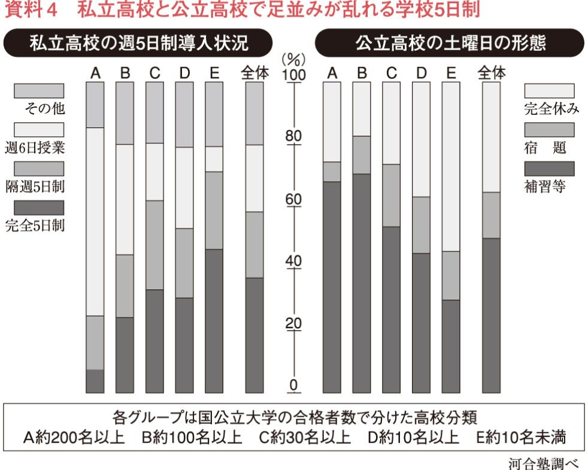

| 不勉強が身にしみる～学力・思考力・社会力とは何か～ | |
| 長山 靖生 | |
| (2005) | |
目 次
序章 不勉強社会ニッポンの現実
かつて日本人は勤勉だと言われていた。日本人自身も、そう信じていた。しかし今や、そんなものは伝説にすぎない。子供たちの学力低下は著しく、若者の労働意欲は衰え、多くの中高年も疲れ果てて、新たな知識を修得することに意欲的であるとは言い難い。
この閉塞状況はどうにかならないものか。なんとか低迷状態を脱したい、と願っている人は多い。だが「勝ち組」「負け組」の二極化が進むなかで、大人たちのあいだにも「努力しても報われない」「勉強なんて、してもしなくても、大して変わりはない」「今の世の中、たしかなことなんて何もない」といった無力感が拡がっている。だが、そのような現状を生き抜くための具体的な取り組みを行っている人は、意外と少ない。学ぶこと、考えることのほかに、自分の現実を変える手だてはないというのに。従来の知識が役に立たなくなり、これまでの努力が無駄になったなら、新しく勉強し直すよりほかない。
手厳しいことを言うと、「努力しても報われない」と感じている人の多くは、実は努力をしていない。いや、まったくしていないわけではないだろうけれども、やっぱり「努力している」と言うのは、ちょっと図々しいレベルに留まっているのではないか。努力しているとしても、やっぱり「勝ち組」の方々に比べると量も少なく、効率も悪く、「努力している」というのには、あたらないのではないか。
森鷗外の『ヰタ・セクスアリス』のなかに、少年期の勉強についての回想が出てくるのだが、主人公の少年には、級友たちが語学で苦労する理由が分からない。なぜなら英語もドイツ語も語源を辿るとたいていラテン語かギリシャ語から来ているから、それを覚えれば簡単に分かるというのだが、要するに彼は努力することをことさら苦痛には感じず、特別なことなどとはまったく思っていなかったらしいのである。
新井白石は、どうすればもっと勉強ができるかと考えて「そうだ。眠らなければいいのだ」と気付き、刃物を膝に立てて、勉強した。居眠りするとそれが刺さるので、痛くて眼が覚めるという工夫だ。この話は、薪を背負いながら勉強した二宮尊徳の逸話と共に、戦前の教科書の定番だった。努力は大切だし、江戸時代のような身分が固定された閉鎖的な社会でも、努力すればそれなりにいいことはあるのだ、という意味で、これらは痛ましいエピソードではなく、庶民を勇気づける話だったのである。もっとも、後世に名が残らなくてもいいから、それほどの努力はしたくないという気も、するけど。
そこまで極端ではないが、近年「勝ち組」代表の感があるホリエモン氏は、あるテレビの討論番組で「努力しても報われない」と発言した人（けっこうな大人）に対して、「佐川急便の運転手をやれば月に五十万でも七十万でも稼げる」と発言。それに対して相手は「そんなに働いたら体が壊れてしまう。半年も持たない」と言い、ホリエモンは、さらに「一年でも半年でも、がんばってやれるだけやってお金を貯めればいいじゃないか」「努力しないで稼ごうったって、そりゃ無理ですよ」と発言していた。「勝ち組」の肩を持つのは何だが、たぶんホリエモンは、それ以上に苛酷な知身両面での過重労働と睡眠不足を乗り越えたからこそ、今があるのだろうな、とは思った。
だいたい、世の中で努力をまったくしていない人間なんて、いないのである。努力するのは、特別のことではなくて、生きている以上、当然の行為なのだ。そうやってみんなががんばっているなか、他人と差をつけようと思ったら、よほどの力量か工夫か持続力がいる。
たとえば敵前逃亡の五十歩百歩には大差はないかもしれないが、これが毎日の前進努力の積み重ねとなると、五十歩と百歩では、明らかに大きな違いとなってくるだろう。みんなが百歩前進しているとき、自分だけが五十歩しか進まなければ、進んではいるにしても、結局は五十歩の退却をしたのと同じになってしまう。世の中が進んでいるとき、何もせずに留まっているというのは、留まっているのではなく、逃亡し、退却をしていることに他ならない。
私はこの苛酷で単純な法則を、高校生の頃には、すでにしっかりと認識していた。自慢じゃないが、私はあまり勉強をしない生徒だったからである。それでも、ちょっとは「努力」なるものをしてはみた。自分としては珍しい「努力」をしてみたのに成績が上がらないと腹が立つものだが、みんなが自分以上に努力しているのだから、やっぱり相対的に私は怠け者なのだと気付いたとき、私は「世の中は正しく機能している。めでたし。めでたし」と納得したものだ。納得しても、成績は上がらなかったけど。
お勉強はダイエットに似ている。そう思うのは私だけだろうか。
「やらなきゃいけない」「やったほうがいい」と多くの人が思っている。いろんなお勉強法やダイエット法があり、それぞれにカリスマ的な指導者や信者みたいな熱狂的ファンもいる。実際、なかにはうまくいく人もいるらしい。そういう成功者に刺激され、みんな一度や二度は決意を固めて、自分も挑戦してみるのだが、なかなか思うように目標が達成できないところも、よく似ている。
「いいえ、あなたはいいわよ。ぜんぜんそんな必要ないもの。ふつうにしていればいいのよ」と言う奴に限って、裏で自分はせっせといろんな方法を試しているあたりも、勉強とダイエットの共通項だ。自分が上手くできないなら、せめてまわりの人々もがんばらないように油断させて、偏差値を低く抑えておこうというせこい手立てだ（それにしても雑誌でよく広告を見かける「みるみる瘦せる」「ぐんぐん成績アップ」「幸福を呼ぶ不思議グッズ」の成功率は、各何パーセントなのだろう）。
受験勉強というと、何やらその場凌ぎの身につかない勉強というイメージがあり、「詰め込み教育」には強制・没個性・画一的といった負のイメージがつきまとう。実際、受験勉強や詰め込み教育には、そうした側面がないとはいえない。だが、自明のこととして、どのような形の勉強であっても、勉強をすれば知識が身につく。受験勉強を通して自分が進むべき道筋が見えてきた若者も多いはずだし、詰め込まれた知識が、やがて大いに役に立った人もいるはずだ。
だいたい、本当に大人はみんな、子供時代には勉強したのだろうか。実は「勉強しよう」と決意するだけで、結構遊んでいたのではないか。四当五落という言葉があるが、少なくとも私はたっぷり寝ていた。テレビや読書のために夜更かしをすることはあったが。受験戦争といっても、「勉強しなきゃ」というプレッシャーを感ずるばかりで、現実には勉強しなかった人も多いのではないだろうか。それとも、これは私だけでしょうか。
現在、子供の教育の二極化が進んでいる。「できる子」と「できない子」の差は、以前から歴然とあって、だから「落ちこぼれ」という言葉もあった（私もそう呼ばれたひとりだ）。そもそも「ゆとり教育」が生み出された背景には「落ちこぼれ」をなくしたい、テストの点数以外の子供の「いいところ」を評価してほしいという理想主義的な願望があった。そのために教育改革が進められたはずだった。
しかしほとんどの「改革」は勝ち組に有利な方向へ、すなわち二極分化をいっそう推し進める方向にしか進まない。教育改革もまた格差を拡大する方向へ向かっている。なぜそうなるかというと、詳しい理由については追い追い明らかにしていくつもりだが、単純にいって改革に携わる人々は、政治家や官僚や諮問委員会に招かれる有識者（学者や財界の代表）にしても、みな「勝ち組」の人たちだからだ。彼らにとって二極化は、自分たちの利益の増加を意味する。
とはいえ、これは彼らが自分たちの私利私欲のために改革を利用しているという意味ではない。そういうつもりがなくても、指導者層からは彼ら自身が不利益を被るような発想は、生まれ得ないというだけだ。それに、制度が変わる度に、人々は混乱する。新しい制度に素早く対応できるのは、情報収集力に長け、即応できる経済的ゆとりのある人だ。「負け組」の人間は目まぐるしく変わる制度に翻弄されて、どんどん水をあけられていく仕組みになっている。たとえ改革自体は、「負け組」のための配慮がなされているにしても、より大きな構造として、そういう仕組みが出来てしまっている。
だいたい勉強ができない子供をなくそうという改革を、頭のいい人たちだけで考えるというのは、いかがなものか。そうした人たちには、勉強ができない、あるいは嫌いだという人間の気持ちなんて、ぜんぜん分からないのではないか。もちろん頭がいい人たちだから、知識としてはそうした子供たちの存在は知っているだろうが、感覚的には分かっていないのではないだろうか。だから改革は、上手く行かないのである。
これは世に溢れている「お勉強法」の本も同様だ。そういう本の著者は、たいてい頭がいい。それなりにいいことが書いてある。ただし、それらは、ある程度、頭のいい人にしか役に立たない。
たとえば野口悠紀雄の『「超」勉強法』は、エッセイとしては面白く読んだのだが、実践に役立つかどうかは疑問だ。英語は教科書を全て丸暗記すれば用法も覚えられるとか、教科書がつまらなかったら面白いと思える英語の本を覚えるといいとか言われても、こちらはその前の段階で挫折しているのである。「面白い英語の本を選ぶ」こと自体、相当の知性を必要とする。また国語では速読の練習も必要だが「早く読む技術を修得するには、多くのものを読むしかない」という教えもあって、これは私の場合、クリアしている感じだが、今時の若者に、まず多くのものを読めといっても、なかなか読めないのである。森鷗外邸の近くに下宿していた学生が、鷗外を見習って勉強しようと志して、その書斎の明かりが灯っている間は自分も勉強しようと思ったが、鷗外がいつまでも寝ないのに閉口して、三日で降参したという逸話があるが、そんな心境だ。
もちろん、悪いのは頭のいい（努力が苦痛でないというのは、頭の良さの一つの証明である）著者たちではなく、根性の足りないこちらなのだろう。そう反省して、何度か決意はするのだが、うまくはいかない。ダイエットと禁煙と勉強は、決意した回数を自慢しても意味がない。
とはいえ事態は、もはや躊躇をしたり、「やる気になる時期」まで決意をモラトリアムしていられるようなものではない。
ルポライターの米本和宏氏は、すでに起きている親の社会的階層差による子供の教育環境格差について、次のように述べている。
「子どもを塾・私学コースに行かせている親たちの多くは、自分たちも同じようなコースをたどった人か、公立出身でも東大・早慶に代表されるような高偏差値大学の出身者である。子どもの数は首都圏で四万一八〇〇人、子ども全体の一三・七％に相当する。この親たちは出身大学、教育意識、職業、収入などの点で一つの『階層』をなしている、と見てよいだろう。この階層には文部科学省のキャリア官僚も含まれる。（中略）この層と対極的な位置にある層は、低中偏差値の高校を卒業、もしくは中退した層である。この層は若くして結婚する傾向にあり、家計は貧しく、子どもの教育に熱心ではなく、なかにはパチンコに熱中して子どもを脱水症状で死なせたり、児童虐待を行なうなど、子育てそのものにも関心が薄い人たちもいる」（「日本の教育の『失われた十年』」『別冊宝島Ｒｅａｌ013』二〇〇一）
これは一つの極論としても、高学歴で安定的に高収入を得られる上層中流家庭を中心に、教育投資による階層の再生産への強い意思が見られるのは、昔からのことだ。問題は、それ以外の人々の学習への意欲低下である。
もちろん大多数の「中流」家庭では、パチンコに熱中して子供を脱水症状で死なせたり、児童虐待したりはしていない。だが親自身が、変化の著しい現代社会のなかにあって、学ぶ姿勢を持っていなかったり（日々の仕事が忙しい、という尤もな理由はあるにしても）、子供の勉強に無関心であるならば、二極化の嵐のなかで親も子も社会的（知的、経済的）に下降を強いられることになる。親が裕福でないと子供まで不利益を被る社会になってきた、と教育問題に真剣に取り組んでいる有識者たちは口を揃えて指摘している。
それならば、われわれ庶民はいったいどうすればいいのか。黙って諦めて、年収三百万円で楽しく暮らすというのも、ひとつの方法ではある。だが、それは本当にそれで暮らせるならの話だ。現実には男性の場合、そんな年収では結婚できないのがふつうだ。自分のことなら、それでも我慢する（もはや、努力する気力もない）という大人でも、ではわが子もそのままでいいのか、となると話は別だろう。階級化が進む社会のなかで、「ダメ」を継承させてもいいと思っている親は、いないだろう。
ただ、心のどこかで「そこまでひどい社会にはならないだろう」とか「いつかは、だれかがどうにかしてくれるだろう」と祈っているのかもしれない。しかし、はっきりいって、そういう願いは叶えられまい。
資本主義対共産主義という思想対立・冷戦構造がなくなった後のグローバリズムは、ロシア革命以前の帝国主義的な競争社会の、多少洗練されたリバイバルだと思えば、分かりやすい。
十九世紀後半に社会進化論を提唱した社会学者のスペンサー（一八二〇～一九〇三）は社会の発展について、次のように述べている。
「一方では発達のもっとも遅れた者を排除することで、また一方では生き残った者たちに決して止むことのない試練を課し続けることによって、自然は生きる者に存在の理由を与えているのであり、その理由に合致し、また真に理解する者だけが、今後も生き続けるであろうし、そのようにして生き残る者が、社会の進歩を確実にするのである。無知と、その帰結としての貧困の間に介入することによって、この試練を何ほどでも停止させれば、それと同程度に進歩を停止させることは避けられない。もし怠惰にも無知に止まり続けることを、賢明であるべく努めることと同様に尊重するのであれば、それは進歩に対する冒涜である」（筆者訳）
念のために言っておくが、私はこの学説が正しいと思っているわけではない。ましてや、好ましいとは思わない。ただこの言葉は、現在流行語のように連呼されている「自己責任」や「改革を止めるな」というキャッチフレーズの真意を、正確に語っているように思える。
二十世紀初頭の社会進化論者たちは「いつかは貧者はいなくなる」と考えていたが、その理由は「彼らは淘汰され、消えて行くから」であった。そう考えると、競争社会というのは緩慢なアウシュヴィッツのようなもの（「勝ち組」のなかでもごく一部の世界的トップだけが、アウシュヴィッツの管理人であろうか）だが、それが世の中というものなのだ。
不況だ、二極化だ、「このままでは生活できない」といいながら、それでも世間は静かである。大人も若者も無気力なほどに暢気だ。私にはこの平静さが不思議で仕方がない。
日本社会はある程度の豊かさを獲得したために、働くことや学ぶことの理由が見え難くなったのだ、という指摘が、よく聞かれる。だが、本当にそうだろうか。たしかに今は、たいていの家庭にはテレビもエアコンも車もある。しかしそうした生活を年収三百万円で賄うのは難しい。親の家に住まわせてもらっているうちはいいが、下手に相続でもして、自分で固定資産税を払うようになったら、たちまち窮することになる。親世代の蓄積のおかげで、今現在はどうにか人並みの生活をしている若者は、その生活を自分では獲得できなくなっているのである。
そもそも、その年収三百万さえもが、危ない。
マクロ経済学者の森永卓郎氏は、多くのサラリーマンの年収が三百万程度にまで下がる（サラリーマンのＢ階層化）一方、年収三億円以上という少数のＡ階層が出現する社会が到来すると予測。そのような社会の出現を回避できないものと考えたうえで、「見栄を張らずに、Ｂで気楽に生きる幸福」を提唱して評判になった。
しかしその森永氏にしても、「Ｂ」で生きるには、まったく何の努力も必要ないと述べていたわけではなく、そもそも「Ｂ」の下には年収百万程度に抑えられるＣ階層の出現を想定していた。現在のフリーターが、そのまま正社員になれないまま三十をすぎれば、必然的に「Ｃ」となっていくのである。
一億総中流意識のあった時代には、たしかに「努力すればもっと上に行けるかも」という希望が、幻想にしても社会全体にあった。それが今では、ごく一部の人だけが「勝ち組」となり、その他大勢の「負け組」のなかには、大して差がないように見えている。だからこそ、こんな世の中では「努力をしてもしなくても同じ」という諦めが拡がるのも仕方がないといえる。だが、それもまた希望的観測にすぎず、実はこのままでは、努力しなければ世間と「同じ」でも「ふつう」でもいられなくなるのだ。
だいたい、今われわれが享受している「ふつう」は、何のかのといいながら、親世代がふつう以上に努力してくれた蓄積のおかげなのであり、決してふつうに過ごしていて天から降ってくるようなものではない。そして今、日本はそんなかつての貯金を使い果たしつつある。というか、国庫を見れば、実は「豊かさ」なんてなくて、すべては借金の上に成り立っていたのである。
この状況下で「努力をしない」というのは、「淘汰して下さい」と言っているようなものだ。
この危機をリアルに認識すれば、本来ならば「豊かになりたい」というかつての世代の人々の渇望以上に、切実な努力への動機付けとなってもおかしくない。没落の危機は、目前に迫っている。それは豊かさに慣れた者にとって、物心両面での「飢え」をもたらす危険な状況のはずだ。
あるいはこのような事態こそが「学力低下」の原因であると同時に結果なのかもしれない。問題は、この差し迫った危機を、リアルに認識できないほどに、すでに若者の想像力が衰えている（大人でも、ピンとこない人がいるとしたら、その人の現実認識能力は錆びついている）ことにあり、危機回避のために自力でどうにかしようという気力が湧かない点にある。今の時間が止まっているかのような低迷状態と将来の確実な没落（それも加速度的な急降下）を結び付けて考えられないほどに、すでに現代人の判断力の後退が進んでいるとしたら、「学力低下」は生活レベルの維持どころか、生命維持の次元で取り組まれるべき課題になっている。
「勉強の問題」は、今や現代社会をいかに生き抜くかという「生存の問題」である。それも自分一代だけではなく、子々孫々の生存に関わる問題だ。
こういう問題が出てきた場合、対策には二つの大きな道筋が考えられる。一つは社会の階層化を食い止めるべく、制度を整え、政策的に手を打つという方法。もうひとつは、階層化の流れのなかで、どうにか「勝ち組」にのし上がっていく、それが無理でも下降を最小限に止めるために、個人的に対策を講ずるという道筋。
若者問題に関心が深く、パラサイト・シングルという概念の提唱者でもある家族社会学者の山田昌弘氏は、若者の自立支援策や親世代からの子供への経済的援助に対する課税措置などによって、親の収入による若者の生活格差を是正する方法を提案している。また教育社会学の第一人者である苅谷剛彦氏は、「ゆとり教育」によって親の階層差が教育格差を通して子供に拡大的に継承される危険性が高いと指摘し、批判を続けている。これに対して、精神科医で和田式学習法の考案者でもある和田秀樹氏は、同じく「ゆとり教育」を批判しながら、では自分はどのように勉強すればいいのかという個別的な方法での問題解決に力を入れている。
ここには、それぞれの学問が持つ問題解決への取り組み方が、分かりやすく端的に表れているといえる。簡単に言うと社会学は、社会状況を分析し、そこから隠れている問題系を抽出する学問である。したがってそこから生み出される提言は、個人のありようではなく、専ら「社会的制度をどうしたらいいのか」という方向で模索される。たとえば鬱病が蔓延している場合、人々をそうした心理状態に追い込む社会の問題点を分析し、その是正のための制度改革やサポート・システムを考えるのが社会学的思考だ。
これに対して精神科医は、個別の患者を対象にして、今現在のシステムのなかでも、その個人が立ち直れる方策を考える。そもそも今現在苦しんでいる患者を、社会制度が改まるまで待たせることはできない。
これはどちらか一方が、いい思考法というわけではない。どちらも必要なことであり、われわれはその両方の思考法について、自分なりに理解し、「今」を生きるために活用しなくてはならない。すなわち、社会制度をよりよいものにしていく（そのように政治や行政に働きかける）ためにも知識が必要だし、不平等な社会のなかで生き抜いていくためには、持たざる者はますます「勉強」を武器にするしかない。
その意味では、現代の危機を自分の努力で回避するためには、若者なら「受験」という機会を利用するのが、いちばん手っ取り早い。そういう立場から描かれ、テレビドラマにもなって評判を呼んだのが『ドラゴン桜』だった。これが中高生の間で、どれくらい評判になったのか、私はよく知らないが、親世代の間では大評判だった。それにしても、マンガやテレビドラマに説得されてどうする、という気もするが、これを契機として何度目かの「お勉強」への決意をするのは、決して悪いことではない。
もっとも「勉強」にもさまざまな種類がある。受験勉強だけが勉強ではない。ここに教育のジレンマがある。
私には現在の受験体制を、受験のためのテクニカルな勉強法や情報収集活動までを含めて、全面的に肯定的に捉えることはできない。せいぜい、それは必要悪であって、現行の入学試験以外の方法で、学力を適正に判定する方法があるなら、そのほうがいいとも感じている。
とはいえ、内申書による「日頃の生活態度」などを含めた評価システムは、現在でも教師による生徒管理に利用されており、これ以上そのような評価方法の比重を高めるのは好ましくないと考えている。また、「人物重視」との名目で、受験でも一定のウエイトを占めつつある面接は、情実の温床でもある。医学部の入試では面接が行われており、医師国家試験でも「知識だけでなく倫理的にも優れた医師を育てる」との名目のもと、面接導入の話が出たりするのだが、この点に関しては、「そうなれば『人物点』という形でかさ上げされて、合格しやすくなる」と、かねてから情実動員能力に自信がある一部父兄のあいだで待望論が強いことを付記しておく。
結局のところ、ペーパー試験による評価は、その人の知識量・学力を測定する方法としては、相対的に不公正な要素が入り難いという意味で、適正な手段ということになるのだろう。この方法を嫌う人々は胸に手を当てて、「テストが嫌いなのは勉強していないという自覚があるためではないか」と自問してみるといい。「ペーパーテストよりも面接のほうが自分の実力が出る」と考えているとしたら、それは自分の勉強量（テストで評価し得る）よりも素材（面接では、見抜いてくれる人がいるかも）のほうがマシだと思っているからではないか。そういう人は、やっぱり自分の努力不足を、心のどこかでは自覚しているのである。
問題は、その自覚を心のすみに追いやらないで、真正面から受けとめる勇気を持つことだ。
それでも、やはり試験では測定できない能力があることもまた、留保しておきたい。本書では、そうした測定困難な要素についても考えてみたいと思う。むしろ本当は、そういう学力というか、思考力こそが大切なのだ、と私は言いたい。そういうことばかり考えているから、私は受験勉強をおざなりにして、それなりの酬いを受けたという過去があるのだが、この点については考えを改めていないのである。ただ、受験勉強で身につくタイプの知識も大切だ、と考えるようになっただけだ。
私はこの本を、今現在の学力低下、そして意欲の低下を克服するために、われわれはどうすればいいのか、という「待ったなし」の問題を念頭に置いて書いていくつもりだ。だが、それと同時に、そもそも読書や数学や歴史や倫理といった「勉強」は、本当は何のために必要で、どのようにそれらの勉強に取り組むのが、真に人生にとって有益であるかという大きなテーマも考えていきたいと思っている。それを明確にすることが、結局は個人的な学力向上への近道であり、かつ社会的な提言ともなり得ると考えるからだ。
私は先に「お勉強はダイエットに似ている」と述べた。その比喩を敷衍するなら、テクニカルな受験勉強は、即席の、無理をしてのダイエットにあたるだろう。それでも効果が上がるのならばいいという考え方もある。だが、受験勉強だけをがんばって、いい学校に入りさえすれば、後はいい就職、いい人生が保証されるような世の中ではなくなった。そして受験勉強には限界がある。よく言われることだが、試験を前提にした勉強では、予め答えが用意されている。試験で問われるのは、そういう枠のなかでの勉強であり、知識にすぎない。
もちろん、本当の意味できちんと受験勉強をがんばった人たちは、制度的に強要され、かつ一定の枠内に収まった勉強の範囲を超えて、まさにその機会を通して、真に学ぶことの必要性と喜びを獲得しているのだろう。そういう人は、リバウンドして性格が歪んだりはしないものだ。それこそが本当のエリートである。
勉強は一時凌ぎでするものではない。ましてや受験をクリアするためだけにするものではない。生涯、勉強の日々である。大人になれば、そのことがよく分かる。分かっていない大人がいるとしたら、その人はまだ大人ではないということだ。どんな仕事をしていても、技術は日進月歩であり、ふつうに仕事をするためにも学ぶべきことは限りない。キャリア・アップのための資格試験にチャレンジするとか、転職を考えるなら、なおのことだ。
勉強の問題は、子供たちにとっての大切な問題であるが、それ以上に大人にとって重要な問題である。「ゆとり教育」による学力低下不安から、現在、子供にお勉強をさせることは、一種のブームとさえいえる盛り上がりを見せている。
しかし現在の日本人の不勉強ぶりは、子供にお勉強をさせれば、それでいいというようなレベルを、とうに超えている。自戒を込めていえば、すでに大人からしてダメである。本当にお勉強をすべきなのは、我々大人の側、親の側なのではないか。孟母三遷の教えというのがあるが、学校の近くに引っ越すよりも親自身が学ぶ姿勢を示してこそ、子供に「がんばれ」とか「やれば出来る」と言えるし、その言葉は子供に届くのではないか。子供の顔色を窺って夜食を作るよりも、一つのテーブルで子供が勉強しているときに一緒に仕事に必要な専門書を積み上げて次々読破するのもいい。子供に求める分、自らもリスクを担うのである。
あるいは、自分でも学ぶ姿勢を持つと、かえって子供に向かって「勉強しろ」と一方的に要求できなくなるかもしれない。過剰な「お受験」やリバウンドとしての登校拒否、ひきこもりを生まないためにも、親自身が子供と共に学ぶか、あるいは別の自分の勉強対象を見つけて競うように努力するとか、さらには「そもそも勉強とは何か」という、受験生には考える時間がないが、親には多少考える余裕と責任がある大きなテーマに取り組むなどして、自分自身の課題としての勉強に取り組むのだ。
しかし、では何をどのように学べばいいのか。不勉強な私は、実はそこからして、よく分からない。念のために言っておくが、私は予備校の教師でもないし、教育問題の専門家でもない。単に二児の父として、いろいろな教育法、勉強方法を模索しては、ダイエットに失敗するようにして試行錯誤している者だ。
私は勉強は大切だと思っている。だが正直言って、勉強が好きではない（させられるのは、特に）。東大卒でもないし、エリートでもない。だから偉そうな説教をする気はない。
ただし、世の有識者の方々とは違って、凡人の悩みには精通している。何しろ体験者であり、当事者なのである。だから私は「無識者」の立場から、勉強について考えることができる、とは自負している。
本書は、凡庸な親が、子供の教育に悩みながら、親もまた勉強しなくてはならないと考え、しかし何をどうやって学ぶべきか、そもそも勉強とは何だっけ、といった事柄を思い悩むドキュメントである。再び言う。私は有識者ではなく、当事者である。
三流私立高校の落ちこぼれ高校生たちを、学歴社会の最高峰・東大に現役合格させるという人気マンガ『ドラゴン桜』は、テレビドラマ化を契機にして、受験生の親たちにも大評判になった。その作品に関連した参考書がベストセラーになっているほどだ。また現代社会のぬるま湯的な建て前言説に、真っ向から挑むような台詞の数々に、胸のすくような、目から鱗が落ちるような思いをした人もいたらしい。たとえばこんな台詞があった。
「社会のルールってやつは、すべて頭のいいやつが作っている。そのルールは頭のいいやつに都合のいいように作られてるんだ。逆に都合の悪いところは、わからないように隠してある。（中略）つまりお前らみたいに頭を使わずに面倒くさがってると、一生だまされて、高い金払わされるんだ。（中略）だまされたくなかったら、損して負けたくなかったら、お前ら、勉強しろ」
薄々は分かっていても、なかなかここまで明確に断言できる大人は多くないだろう。特にお勉強が本当に好きな大人には、言いにくい台詞だと思う。その理由のひとつは、学問というものは、本来、個人的な営利を目的にするべきものではないという教養主義的なためらいにある。
いい学校に行かせたいのは、いい就職をするためで、さらに言えばお金持ちになってほしいからだと、たいていの親は本音では思っているはずだ。だが、「お受験」でインタビューを受ける親は、口を揃えて「子供の選択の幅が広がるから」「将来、自分でなりたいものになれるようにするため」と答える。それなら子供の自主性は尊重しているのかというと、子供が途中で「ミュージシャンになりたい」とか「お笑い芸人になりたい」とか言い出したら、それを認める親は、あまりいない。私だって、子供がライターになりたいと言い出したら「おれを見てみろ。やめておけ」と言うだろう。そういう建て前のダブルバインドを抱えているから、子供が歪むのかもしれない。
また、大学の側にも、卒業生の就職先の良さを宣伝に使う一方、大学は学問探究の場であって就職予備校ではないという矜持もある。それはそれで大切な信念だと思いもするのだが、それなら大学関係者は無給で奉仕するくらいの気構えでいてほしいとも思う。学問は金に換えるべきものではないのだから。
こういう本音と建て前、あるいは理想主義的な願望とトホホな日常が交錯するなかで、若者（あるいは遅ればせの志を立てた大人でもいい）が迷わずに勉強をするためには、ほかでもない自分自身で、勉強する目的をはっきりと自覚することが重要だ。その目的は、学問そのものに目覚めたというのならそれもいいし、金のためでも、見栄のためでもいい。他人に向かって語る必要はないが、自分自身の本音で、目的を定め、そこに到達するための中間的な目標を設定することだ。
もっとも、現代社会には誘惑が多い。若者はむら気である。勉強しなくては、と思いつつも、ついつい遊びや恋愛に気を取られてしまいがちだ。これに対して『ドラゴン桜』では「一時の感情で利益を失うバカにだけはなるな」と訓戒している。これと同じことを、十七世紀フランスのモラリスト、ラ・ロシュフコー（一六一三～一六八〇）は、さらに懇切丁寧に説いていた。
「利口な人はきっと自分のさまざまな欲の序列を定めて、それぞれの欲に順位を守らせているに違いない。われわれの貪婪さはわれわれを一時にむやみに多くのものに向かわせることによって、しばしばこの順位を乱し、結局最もつまらぬものを欲しがるあまり、最も大切なものを取り逃がすようにしてしまうのである」（『箴言集』、二宮フサ訳）
利口になるための第一歩は、まず自分の数ある欲望を整理整頓し、それに順番をつけることだ。そして自分の望みを達するにはどうすればいいかという目標を定めるのだ、と言う。
ところで、人が自分の目標を達成するためには、もうひとつ把握しておかなければならない重要な対象がある。それは自分自身への認識だ。自分は今、どのようなところにいるのか。それが分からなければ、目標と自分との距離がつかめない。また自分の性格や体質、生活のリズムなどをきちんと認識しなければ、目的達成のための適切な対処方法は割り出せない。
ところが現代の若者は、この自己把握が、きわめて苦手である。
アメリカの精神分析医コフート（一九一三～八一）は、自己愛はその発達段階において、二つの引き裂かれるように矛盾する感情のあいだで揺れ動くと考察した。それは誇大自己と理想化された親のイマーゴ（無意識的心象）である。誇大自己とは、自分には何でもできるのだという誇張された万能感であり、さらには自分には何でも許されるという錯覚さえ抱くことすらある。一方、親のイマーゴとは、乳幼児にとっての親がそうであるように、子供自身からみれば何でもできる存在で、自分の望みを叶えてくれる尊敬と愛の対象である一方、ときには怒れる神のごとくに自分を厳しく罰する畏怖の感情でもある。
この二つの意識は相互に関連しつつも抑制し合い、やがて子供は自分の限界を認識していく。そして親やその背後にある社会的制約を認めると同時に、乗り越えるべく努力目標をも獲得していくことになる。こうして未熟な自己愛は、やがて自尊心や内的な理想へと昇華されていくのである。
ところが、この発達段階で、充分な満足が得られなかったり、逆に過剰な充足だけが与えられてしまうと、統合がうまく行かず、無根拠な誇大自己がそのまま肥大して、歪んだ自己愛へと発展してしまうことになりかねない。ことに日本では、教育圧力が強いといわれる割には、親のイマーゴが希薄である。
だいたい戦後日本の親の教育圧力は「勉強しろ」と言うだけで、「自分を見習え」も「自分もいっしょにがんばるから」もないのがふつうである。下手をしたら「お父さんみたいになりたくなかったら、勉強しなさい」だったりする。はじめから子供にバカにされているのだから、本当の意味では圧力にならないのである。
といって親をバカにし、社会をなめてかかる子供が若者へと成長して、自分の心のなかでキノコ雲みたいに成長した万能感に見合うだけの能力が、身についているのかというと、ついているはずがない。
そのギャップを表した言葉が「本当の自分探し」だ。今ここにいる自分は本当の自分ではない。もっとどこかに自分にあった仕事とか、評価してくれる人がいるに違いない。やりがいのあることがどこかにあるに違いない。それを見つけられさえすれば、自分は幸せになれるのに──という感覚。
しかし『青い鳥』ではないが、本当の自分なんて、自分自身のなか以外の、どこにもないのだ。いたら、そのほうが不気味であろう。本当の自分は、探すものではなく、まず見つめて認めるものであり、そのうえで作り上げるものだ。しかし肥大化した自己愛は、自分自身を拒絶する。その先にあるのは、とてつもなく大きな落とし穴というか、アリ地獄のような世界だ。
たしか精神科医の斎藤環氏は、今の若者が努力をしないのは、努力をしたのに報われないと傷つくが、努力をしなければ報われなくても自己愛が傷つかずにすむからだ、と『「負けた」教の信者たち』（二〇〇五）のなかで書いていた。しかし「やればできる」という可能性を留保していても、それだけでは何の意味もない。可能性は試してみて、はじめて価値を生む。「やればできる」とは「やらなければできない」の虚飾的告白なのである。
日本人は勉強しなくなった。中学生や高校生に対して、勉強時間を問うた各種調査では、軒並み家庭での勉強時間の減少が報告されている。
発展途上国が「国家躍進」をはかるには、まず国民の教育水準を高めることが必要で、今、多くの国では公的教育投資を高めている。また欧米でも、一時の子供の「自主性」に頼りすぎた教育思想・制度への反省から、基礎学力を高めるための能力別・一斉授業型の教育が増えている。
これに対して日本では、文部科学省が「ゆとり教育」という方針を打ち出し、二〇〇二年から小・中学校の学習内容を大幅に削減、ついでに公立小・中学校の完全週休二日制を実施して、授業時間も大幅に削減した。この「ゆとり教育」については、実施以前から多くの教育者、教育問題研究家から疑問の声が挙がっていたが、たいていの公共事業がそうであるように、政府がある方向付けをもって検討を始めた事業は、たとえ検討しているあいだに社会情勢や需要動向が変化しても、結局は断行されてしまう。その結果、実施と同時に早くも見直し論が文部科学大臣の口から飛び出すという珍事が起こった。
ところで「ゆとり教育」とは、何か。この教育理念がクローズアップされるようになったのは、一九八九年の学習指導要領改訂で示された「新しい学力」という概念が導入されたことからだった。これは「自ら学ぶ意欲や思考力、判断力及び表現力などを学力の基本とする」という学力観だそうで、学習による修得結果の相対評価（他人との成績比較）よりも、それぞれの子供の学ぶ姿勢自体を重んじようという、理想主義的な教育観である。
八九年の学習指導要領改訂が検討されていた当時は、いわゆる「受験戦争」が最高潮に達していた頃で、父兄の間にも「学力のようなテストで計れるものばかりでなく、もっと広い意味での子供のよさを評価してほしい」という声があったのも事実だ。もっとも、改訂された要領が発表された時期には、大学等の新設や定員増員もあって、すでに受験戦争も下火になりつつあった。ただし、バブル経済の影響もあり、かつて高度経済成長期に高校への進学率が急上昇して、ほぼ高校全入時代が訪れたように、少子化でも「大学全入」となれば、まだまだ大学は足りないというような声も聞かれていた（こうしたことをいちばん強く主張したのは、受験産業の関係者と定員増を出願する大学関係者だった）。
バブル崩壊後も、しばらくは、それまでのあまりに舞い上がった上昇志向、拝金的で消費過剰な姿勢への反省から、もっとマイ・ペースで、地に足の付いた生活を目指したほうが人間的には幸福なのではないか、という気分が大人たちのあいだにも強まっている時期だった。そうした一種の社会的虚脱感が「ゆとり教育」を容認する風潮を形成したのである。
私は「ゆとり教育」の理想それ自体が悪い、とは思ってはいない。だが問題は、意欲や思考力、表現力などを評価するのはきわめて難しいという点にある。それは現場の教員にとっても、過大な期待と責任を負わせるものなのではないだろうか。そもそも私などは、子供の意欲や思考力それ自体を教員が判定し得るという考えそのものに、空恐ろしいものを感じてしまう。
点数だけで子供（人間）を見ないでほしいという願望が、いつのまにか学校システムによって人間を全人格を含めて評価するという方向に転化してしまったのである。
「ゆとり教育」は、それまでのいわゆる「詰め込み教育」の対立概念と見なされがちだ。しかし考えてみると、ここには実に奇妙な思考の単純化がある。
「ゆとり教育」では「自ら考え、自ら学ぶ」ことを重視するというのだが、そうした精神活動が、思考や判断の素材となる知識や計算能力などを軽減したなかで、どうやって伸ばせるのかが、よく分からない。創造性は、基礎的な知識や思考訓練があってこそ、発揮されるものである。言語を知らない人間は、潜在的想像力があったとしても、他人の前で意見を述べたり文章を書くことはできない。また東北大学の川島隆太教授は、従来は脳の一部を使った反射的学習と見なされていた単純な計算問題を解いている際に、むしろ難解な思考を展開している場合以上に、脳のさまざまな部位が活動していることを生理学的に確認し、単純計算の反復学習は脳そのものの活性化を促進すると提唱している。いわば「詰め込み」型の学習が、創造性を育むとの説である。
「偏差値」への嫌悪感も、「ゆとり教育」推進の大きな因子だったろう。私などもそうだが、だいたい現在の親世代は偏差値で評価されて、肩身の狭い思いをしたり、追い立てられるように勉強させられた苦い思い出を持っている。わが子に同じ苦しみを味わわせたくないという気持ちも、分からなくはない。
しかし他人と比較しなければ、その人の社会的な評価は計れない。それが現実というものだ。もちろんそれは、本人の全人格的存在の評価とは別のものだが、それでいいのである。勉強や仕事をしているときだけが、その人間の価値ではない。ただ、仕事を介して関係する他人にとっては「その人の人間的魅力ではなくて、仕事の能力や熱意や精度が大事」というだけのことだ。学業成績は、そのための基礎訓練のバロメーターである。いっしょに飲むなら、話が面白い人間のほうがいい。しかし私は、話が面白くて笑顔が魅力的な政治家よりも、汚職をしないで真面目にいい政策を立案・実行する政治家に一票を投ずるだろう。人間的魅力と職業適性はイコールではない。
子供の主体性を重んじ、人間の本質を自由なものと考える立場から、競争は人の精神を歪めるものとの見方をする人々もいる。過度のプレッシャーは禁物だ、とも思われている。だが、競争を排除したら、そこから先は変化は生まれない。成長も抑制されてしまう。階層の固定化を招くし、自由な選択などというものさえ起こり得なくなる。
明治維新後、新政府は士農工商の身分制度を廃止し、学制を敷き、国民に教育の機会を与えた。それは国家の発展のために有為の人材を育てるのが急務だったからだが、個人にとってはそれが立身出世へのチャンスとなり、それまで低い身分に貶められていた人々にも、努力次第で栄達の道が開かれるようになった。福沢諭吉の『学問のすすめ』といえば「天は人の上に人を造らず人の下に人を造らずと言えり」が思い出されるが、むしろ表題が示すとおり、その主眼は「賢人と愚人との別は、学ぶと学ばざるとに由って出来るものなり」「学問を勤めて物事をよく知る者は貴人となり富人となり、無学なる者は貧人となり下人となるなり」という勉学の自己責任論にあった。かつて「競争」は身分制度を打ち破るための方策であり、民衆にとって希望のシステムでもあった。
小・中学校での教育内容を減らしたからといって、人間が一人前になるために学んでおくべきことが減ったわけではない。小・中学校で減らした分は、後でどこかで学ばなければならない。バブル経済崩壊後に、住宅需要を高めようとして、政府は「ゆとり返済」という制度を作ったことがあった。この制度は、最初の数年間はローン返済額を低く抑えるというもので、いわば借金の先送りだった。同時に、この制度は将来の昇給を見込んでおり、最初の数年間返済額が少ない分、後からどーんと返済額が上がる仕組みだった。このため後々にローン破産する人が多数出て、社会問題にもなった。
「ゆとり教育」もこれに似ている。
将来、自主的に勉強したくなるはずだから、小さいうちから無理に詰め込むのはやめにして、個性を磨こうではないか。そうやって好きなものを発見し、それを特化して能力を発揮できるようにする、という思想だ（そういえば『教育勅語』にも「学ヲ修メ業ヲ習ヒ以テ智能ヲ啓発シ徳器ヲ成就シ」という文言があった）。
これは人間の学習意欲（向上心）や思考能力の「右肩上がり」を前提にしている。好意的に解釈すると、「ゆとり教育」を立案した人々は、根が真面目で勤勉な性格だから、全ての人間もそうに違いないと思い込んでいるのかもしれない。これは実際にある話で、ほとんど挫折を経験することなくエリートコースを歩んできた官僚や学者には、意外と性格がよく、話していて感じのいい人たちが多い。しかも謙虚。だから彼らは、自分たちが特別な努力家だとは考えておらず、「すべての人間は、やればできる」という理想を信じている。
だが、世の中には、放っておくといつまでも意欲なんて湧いてこない人間だっている（資料１）。かく言う私がそのひとりで、本を書くよりは読んでいるほうがずっといいと今でも思っている。読んでいるだけでは、誰もお金をくれないから、書いているのである。「好きなものを見つけて」と言われても、無理矢理にでもさわりぐらいは仕込まれないと、好きも嫌いも分からないのではないか。誰でも好奇心を持っているのかもしれないが、それがおたくな方向にしか向かない人間だっている（おれだ、おれだ）。大人になってもこれなんだから、子供のときから自己責任に任されたら、とんでもないことになってしまうのである。

「詰め込み教育」では、まず覚えるべき知識の量が規定されており、それを子供たちに押し込んでいく。だが、「ゆとり教育」の理想では、まず子供の主体性がある。学ぶことへの興味を喚起し、子供たちが自ら学ぶ力を発揮することが期待されている。これは一見、素晴らしいことのように思えるが、実は後者は知識ではなく子供の主体性そのものを規定する思想でもある。実存に先だって人間の本質が規定されているのである。
現在、公立学校では週休二日制が布かれている。学習内容が減ったからといって、教育時間もいっしょに減らす必要性（必然性）は、どこにあったのだろう。これでは結局のところ、学校における一時間当たりの学習濃度は変わらないではないか。ということは、それでもやっぱり落ちこぼれる生徒は出てしまうのではないか。
本当にゆとりを持って子供たちを教育しようと考えるのなら、学習内容は減らしても構わないが、その分、大切なことをじっくりと教えるために、授業時間はむしろ増やして、ゆとりのあるカリキュラムを組むようにするのが本筋だろう。しかも現在、文部科学省は「学習指導要領」の内容は最低限学ぶことを示したにすぎず、「発展的学習」は各児童、各教員の裁量で行っていいとしている。だとすれば、教育時間の増加、教員数の増員は必須要件だ。
だが、そうはならなかった。なぜなら、そもそもゆとり教育は教育内容の充実や質の向上のために考え出された制度ではないからだ。では、何のために考えられたかというと、教職員の勤務時間短縮をする必要上、後付け的にひねり出されたにすぎない。
そもそも学校の週休二日制は、生徒にゆとりを持たせるためではなく、公立学校の教職員という「公務員」の勤務時間短縮のための制度改革だった。八〇年代の日米経済摩擦で、アメリカは日本人は働きすぎであると批判し、アメリカ政府に配慮した日本政府は公務員の「時短」を行うことになった（つまり時短もまた、公務員のためというよりはアメリカの圧力に屈従した結果であった）。しかし教職員だけは学校週六日制のもとでは、週休二日にすることができない。そこで「ゆとり」教育という「教育改革」が行われたわけだが、はじめに学習時間（教職員の勤務時間）の削減ありき、という改革なのだから、「生きる力」だの「自ら主体的に考える力を養う」「生涯、学ぶことが好きな人間を育てる」といわれても、不安は募るばかりだ。
「ゆとり教育」実施以降、私立の小・中学校の人気はますます高くなり、少子化で経営が悪化するのではないかと懸念されていた学習塾などの受験産業は、おおいに繁昌しているという。私立では特に土曜日も授業を行う学校、あるいは教育指導要領が改訂されても、旧学力を下げない授業内容を続けると明言した学校の人気が高まったといわれている。
そして「ゆとり教育」が始まると、すぐに学力低下は目に見える形で具体的に提示されるようになる（これは「ゆとり教育」だけでなく、二〇〇二年以前、すでに隔週で土曜休校が実施され、学習内容も削減されていた影響によると思われるが）。
たとえば二〇〇一年、進学指導会社ベネッセコーポレーションの研究機関であるベネッセ文教総研が、全国の高校三年生四千人を対象にして行った調査では、一九九五年に行った模試と同じ問題を出題したところ、英語を除く四教科八科目全てで六年前の平均点を下回る結果になったという（資料２）。なかでも日本史と物理は大きく下がり、国語、世界史、地理、数学、化学、生物はやや下がった。注目すべきは、これまで学力変化が現れないとされてきた国語で、全体の平均正解率が２・６ポイント低下したことであり、特に文章全体の読解力を問う設問での不正解が目立ったという。
さらに二〇〇四年一二月に、経済協力開発機構（ＯＥＣＤ）が二〇〇三年に実施した国際的な学習到達度調査の結果が発表されたのだが、その結果は衝撃的なものだった。この調査は四一カ国・地域の約二七万六千人の十五歳を対象に、知識や技能の実生活への応用力を見るテストが行われたのだが、そのなかで日本は、前回（二〇〇〇年）では八位だった「読解力」が十四位（ＯＥＣＤの平均値）まで低下（資料３）、「数学的応用力」では前回の一位から六位へと、大きく下落してしまったのである。
この結果を受けて文部科学省は早くも方針転換を表明する。二〇〇五年に入ると中山成彬文相が「ゆとり教育」見直しを示唆して「詰め込みよりもたたき込み」などと発言するようになった。二〇〇五年四月二四日付「朝日新聞」には「中山氏発言録」というのが載っているが、そのなかには次のようなものがある。
・学力テストをやって、競い合う教育をしないといけない。
・土曜日に授業をやりたいという現場の要望がある。学校や市町村などの裁量に任せてもよい。
・今までの教育に欠けていたものがあるとすれば、競い合う心や、切磋琢磨する精神だ。
・総合的な学習の時間や、選択教科をどうするかを含め、国語とか算数とかにもう少し力を注ぐべきではないか。
・競争は悪だとしてきたが、社会に出ると競争社会で子供たちが落差にとまどう。こういう今までの教育は、ニートなどの予備軍の「大量生産」に手を貸しているのではないか。
これが評論家の意見なら、私も諸手をあげて賛成してもいいのだが、高級官僚出身の自民党議員で、文部科学大臣になったのは二〇〇四年からだとしても、以前、文部政務次官を務めたこともある人の発言となると、ちょっと気になる。「今までの教育」を、そこまで批判するなら、その実行責任者をきちんと処分してもらいたいものだ。そういう「今までの教育」を行ってきたのは、ほかでもない文部省である。
とはいえ私は、一概にゆとり教育の理念が間違っていたとは、考えてはいない。では「いい」と思っているのかというと、もちろんそうでもなくて、要は競争とゆとりのバランスなのである。ただひとつはっきりしているのは、「ゆとり教育」の実施はあまりに場当たり的で、見切り発車だったということだ。そして今回の「見直し」も。
だいたいゆとり教育を実施すれば、テストの点数に直接的に表されるような学習成績が下がることは、はじめから分かっていたはずだ。にもかかわらず、世界で長年トップクラスだった日本の子供たちの算数などの学力が低下したとなると、あわてて騒ぎだし、揺り戻しをかけるような姿勢では、ゆとりも何もあったものではない。「ゆとり教育」が総合学習などの実施に関する現場の準備を欠いたまま断行されて混乱を招いたのと同様、見直しによる学力復活路線もまた、現場を見ることなく「上」の方針転換で断行されようとしている。そうした右へ左への揺さぶりの被害を被るのは、現場の教師であり、子供たちだ。
そもそも文部科学省は「ゆとり教育」を実施するにあたって、暗記や単純な計算能力といった、点数化して評価しやすい知識を重視する「詰め込み学習」を改め、点数化が容易な学習以上に大切な本質的学力、文部科学省が提唱するところの「生きる力」を身につけさせるものだ、と謳っていたはずだ。それが、いざ「予想通りの点数上の学力低下」が示されると、あわてて発展的学習を奨励するというのは、教育理念の不在を露呈される事態以外の何ものでもない。
しかも、「ゆとり教育」が見直されることになって、今後、子供たちの学力が全体で等しくアップしていくのかというと、話はそう単純ではない。
実は「ゆとり教育」によって、すでにこれまでの教育の均質性は、大きく突き崩されてしまった。学校の完全週休二日制には、当初から父兄のあいだで不安や不満の声が高かった。このため、なかには独自の制度を設けて、土曜日にも補習授業などを行う学校も出てきた。中山文相は「学校や市町村の裁量に任せてもよい」と発言したようだが、二〇〇二年には文部科学省はこれに難色を示して土曜日開校自粛を通達している。それでも一部の学校では土曜日授業が断行された（資料４）。

一方、二〇〇三年には、高まる学力不安の声に妥協する形で、文部科学省は高校生の学力向上策として「学力向上フロンティアハイスクール」なるものを考案。全国で二百校ほどを指定して、習熟度別の少人数指導や大学などと連携した高度な学習を行う方針を打ち出した。
また東京都立あるいは区立の学校などとして、公立の中高一貫制の学校設立も進んでいる（資料５）。これらはいわば、私立に人気が集中して、公立学校が凋落しているという批判に応えて、公立エリート校をつくろうという動きである。これまでも国・公立のエリート校は存在したが、中学からとなると、今まで以上に早い段階で、生徒の選別が行われるということになる。
「ゆとり教育」は全国的に行われたが、その「見直し」は、結局のところ、一部地域の一部学校のみがエリート校として確立し、ほかの「ふつう」の学校がさらに凋落していくという傾向に、拍車をかけることになりかねない。しかも「ゆとり教育」の実施と並行するようにして、政府は行政改革を進め、文部行政の予算は大幅に削減されている。これまでは国庫からの助成によって、全国の教職員はほぼ同等の給与が保証されていた。それが地域間の教師の質的格差を抑制する作用をしていたのだが、小泉内閣は国庫負担廃止の方針を固めている。地域格差は一段と拡大していくことになるだろう。
結局のところ、「ゆとり教育」とその「見直し」という短期間に襲ってきた二つの津波によって、ますます「ふつう」の子供たちは振り落とされ、結果的に、公立でも一部のエリート校化した学校だけに集中的に資本投下される（というか、それ以外の学校には予算を廻すゆとりがなくなる）危険性が高い。あるいは、そういう結果を狙っての、深遠なる戦略が文部科学省にはあったのではないか、と疑いたくなるほどだ。
何かがおかしい。このままではいけない。日本の教育も日本の社会も壊れてしまう。みんなそのことを心配している。
「もっと勉強をしておけばよかった」と、何より痛切に感じるのは、こういうときだ。「このままではいけない」と感じられても、「では、どうすればいいのか」が分からない。それが分からないから、取りあえず今までと違うあがき方をして、より一層深みにはまってしまうのである。
「ゆとり教育」の失敗原因を、最大限に好意的に評価するなら、それは「詰め込み教育は間違っていた、と感じた教育者・教育行政担当者たちが、あわててこれまでのやり方を撤回したものの、どこをどう改めたらいいか分からないまま迷走している」といったものだろう。ゆとり教育だけではなく、歴史教科書問題やジェンダー・フリー教育や性教育や、それに生涯学習のはた迷惑ぶりだって、「何とかしなきゃ」だけがあって、「どうしたらいいか」が抜け落ちている結果としか思われない。そもそも大人が不勉強なのである。
教育問題は、子供の問題であると同時に社会や制度を構築する大人の問題だ。だいたい、自分がどう生きたらいいか分かっていない大人に、子供をきちんと育てられるわけがない。にもかかわらず、今の大人はほとんどが、そういう問題を棚上げにして日々を忙しく暮らしている。観念的な問題を考えるゆとりなくがんばっているといえば聞こえはいいが、このゆとりのなさ自体が自身の不勉強の産物でもある。こうした大人の在り方が、現代日本の教育界の混沌とした状況を作り出している。とはいえ、きちんとした大人でなくても、今すでに大人となり、親になってしまっている以上は、「自信がありません」「だれか、どうにかして下さい」と投げ出すわけにはいかない。
大人は子供に対して、何をどう教えてやれるかを考えると同時に、自分自身がどうやったらまともな人間として生きられるかを勉強し続けなければならない。そしてもちろん、このふたつの課題はひとつのことなのである。
ＮＨＫは、中高生とその親を対象にした『中学生・高校生の生活と意識調査』を行っているが、そのなかに「一〇年後も学歴優先社会が続いているか」という項目がある。
その結果によると、一九八二年、一九九二年には父親、母親共に「学歴優先の社会になっている」と答えた者が最も多かった（八二年に比べて九二年では父・母共に「学歴優先」がやや上昇を示している）のに対して、二〇〇二年には「学歴優先社会」が後退し、「多少、実力優先」が上昇している。
バブル崩壊以降、若者たちの間では学歴信仰が崩壊したといわれている。
そもそもバブル経済期には、地価の高騰や株価の値上がりで、不動産などの資産を所有していれば、それだけで何の努力をしなくても億単位の金が手に入るという話が、あちこちで聞かれた。いや、所有していなくてもよかった。都心の一等地で借地・借家をしていれば、その立ち退き料だけでも、エリートサラリーマンの生涯所得を超える金が得られるような時代だった。個人の努力とは無関係なところで金が動く世の中で、人々は地道な努力をすることがバカらしく思えたとしても、一面では仕方なかったのだろう。
そしてバブルがはじけた後は、企業は生き残りのためのリストラに血道を上げるようになる。努力していい大学に入り、いい企業に就職して、これで生涯安心だと思っていたのに、それは何の保証にもならなかったのである。こうしてますます、「努力」の価値が揺らいだのである。
これからは「学歴社会」ではなく「実力社会」だという意識が、若者のあいだでも親たちのあいだでも広まっている。では現代の若者は、実力を身につけるために、従来の受験勉強とは形は違うものの、みんな新しい勉強をするようになっているのかというと、どうもそのあたりは、あやふやだ。そこではバブル期に経済的余裕を背景にして拡がった「本当の自分探し」というモラトリアムが、入試や就職試験という他者からの評価に曝されない、自分の想像の世界のなかで、いまだに生きているという気がする。この場合、「実力」は外的評価を拒否した空想上の産物にすぎず、自尊心を守るための言い訳の役目しかしていない。
そもそも先の設問には、不思議な前提がある。「学歴優先か、実力優先か」を問うている以上、設問者の内心には「学歴は実力を反映していない」という考えがある。でなければ、こういう設問は生まれてこない。そして回答者側もまた、「学歴と実力が一致していないのが、今の世の中だ」と考えている。でなければ、こういう設問には答えられない。「質問がおかしいんじゃないの」という声が挙がって、次回の意識調査からは削られるはずだ。それが削られずに、続いているのは、われわれの社会では「学歴は実力を反映してはいないけれども、社会ではそれなりには有効である。世の中、そういう風にできている」と考えられているためだろう。
本来なら、この時点で何らかの対処がなされてしかるべきだ。学歴以外の、本当にその人間の実力を評価する社会的な基準を設けるか、でなければ学歴がきちんとその人の実力（学問ないし実学としての職業能力という限定された範囲の「実力」）を反映するように試験方法や学校制度を改めるとか。
しかし、そのどちらもしないままに放っておくから、世間が混乱するのだ。もっとも、学歴は実力を反映していない、と見ている人に限って、学歴信仰が強かったりもする。要は、大人の「実力」なるものに対するイメージの不確かさに帰結する。
そういえば、同じＮＨＫの意識調査には、両親に対して「子供にはどんな職業に就いてほしいか」を問う項目もあるのだが、そこでは「子供に任せる」という答えが急増している。これは一見、子供の自由を尊重しているように見えるが、実態は親自身が未来の社会像に具体的イメージを持てず、また自分の職業観に自信を失っているためだろう。
あらゆるジャンルで学歴が過度に尊重されるべきだとは思わない。また学歴がない人にも、論文なり実績なりで学歴以上の能力が確認できたなら、そうした人々の学力を公認評価する制度を整えたほうがいい。戦前の日本では、たとえば教員養成機関としての師範学校がある一方で、教員資格の検定試験もあった。
だが、大学や大学院、あるいは専門学校を含む教育機関が、若者の能力を中間段階で適正に評価したうえで、さらなる能力を引き出し、知識を教えることを目的としているのなら、学歴はある程度、学力を適正に反映していると胸を張れるように、高等教育機関の試験制度ならびに教育システムを確立しなくてはならない。学歴不信の問題点は、文部科学省を含む教育機関側にもあって、堂々と「ここにいる人たちはみんな頭がいいエリート候補生です」といえないところにある。それをいわないから、実際にはエリートとして高級官僚になっていくことがほとんど既定の路線であるような人たちに対して、真のエリート教育たる「名誉ある存在の義務（ノヴレス・オブリージュ）」が施せないのである。ここにも悪平等の弊害がある。
さらに、漠然とした「学歴不信」「勉強軽視」の背景には、しょせん受験勉強はテクニカルなもので、本当に人間の知的能力を反映したものではない、という思いがある。
ここに興味深いデータがある。「算数でよい成績を取るために必要なこと」を問うた国際比較データで、日本では第一位が「教科書やノートに書いてあることを覚える」で、次いで「家でたくさん勉強をする」、「才能があること」がくるのだが、「運がよいこと」という答えも五〇パーセント以上にのぼるのである（複数回答）。ちなみにアメリカ、韓国、シンガポールなどではいずれも「家で勉強をたくさんすること」が第一位になっている。日本では数学は暗記科目と思われているうえに、「できるできないは運次第」とさえ考えられているのだ。この認識から「努力するだけ無駄」という諦めまでは、すぐであろう。
まるでこのデータを裏書きするかのような話もある。
京都大学理学研究科教授の上野健爾氏は大野晋氏との共著『学力があぶない』（二〇〇一）のなかで、大学入試数学に見る「学力低下」を次のように語っている。
「一五年くらい前からであろうか、全くと言っていいほど意表をついた解答は登場しなくなり、解き方がほとんど同じものばかりになってきた。しかも、従来の試験問題にはない、新しい型の問題には白紙の解答が目立ち始めた。（中略）さらに新しい傾向がここ七、八年くらい前から始まった。全ての問題に解答を記すが、どの問題も途中で解答が放棄されてしまっているのである。数学の採点では、考え方を中心に見ることが多いので、考え方が途中まで合っていれば部分点を与えることが多い。それを見越して、最初から部分点だけを集めて五割や六割の点数をとろうという作戦の答案である。これだと、問題を完全に理解する必要はない。問題のパターンを覚えて、似た問題の解答をまねて途中まで書いていけばよいのである」
「数学は暗記」「数学ができるかどうかは運」という風潮は、こうした受験テクニックとしての学習と連動している。本当に理解していなくても、点数を取る人たちがいるというのなら、たしかに能力というより運に近いように見えるかもしれない。
もちろん、本当に数学を勉強するというのは、そういうことではないはずだ。この主題については第五章で詳しく考えたい。実は「数学は暗記」という言葉には、「がんばっているのに伸びない」というのと同じような、できる人間とできない人間の認識のズレが、大きく関わっている。
いずれにせよ、それぞれの学問に対する認識が誤っていたり、あるいは学問そのものが問おうとしている大きな目的を考えないままに、目先の点数に表れるような姑息な学習を目指すと、誤った勉強法を取ることになる。当然、本質的な理解は遅れ、勉強することはつまらなくなる。ますますやる気がなくなる──という知のデフレ・スパイラルが進行することになる。その結果は、運ではなく、やはり実力の差となって、「運のない」人たちの身に不幸をもたらすだろう。
ちなみに発明王エジソンによれば、発明とは「九九パーセントの汗と一パーセントのひらめき」だそうだが、ひらめく運は汗が作るのだろう。ドイツの諺では「運はそれを掴むべく準備と努力を怠らぬ者に訪れる」と言う。
勉強しようと決めた人にとって、いちばん大切なのは目標を定めることだ。そしてその目標に向かって一直線に努力する。
その目標が漠然としすぎていたり、あまりに遠い将来を目指したものだと、気力が弛れて持続しない。「起業したい」「お金持ちになりたい」「学者になりたい」というのは夢であって、まだまだ目標になっていない。
起業したいなら、どのような職種・業務内容で、何年後くらいに、まずどれくらいの規模で、どのあたりで──と、具体的に考える。「お金」が目的なら、何歳くらいまでに、どの程度の資産を作りたいのか、自分の願望を正直にはじき出し、そこから年収がどのくらい必要で、そこから何にどれくらい投資（利殖率は？）すればいいか。そのためにどのような知識を身につければいいかを考える。
学者を目指すなら、もちろん「学者」ではなくて、何を専攻するのか、たとえば歴史学者として中世フランス史をやるなら、どの大学に入ると留学や大学院の進学に有利で、そのためにまず、どの教科を勉強すれば大学に合格できるのか──というように、漠然とした夢を明確な目標として確立する。
そして、その大目標を達成するための中目標、小目標を立てて、ひとつひとつ攻略していく。もちろん、人生をかけての目標なのだから、長期戦であり、途中で「大目標」が変わることもあるだろう。それでもいいのだ。勉強は無駄にはならない。そもそも人生のなかで、真面目に取り組んで無駄だったというようなものは、ひとつもない。
志望学部、志望校が変わっても、これまで中目標、小目標で積み上げた勉強は役に立つし、受験勉強以外の勉強ならなおのこと、必ずその人の血となり肉となっている。
目的が具体化したら、本当は「何を読めばいいか」なんて考える必要はない。受験科目の教科書、参考書、問題集を、徹底的に読んで、解いて、考えて、覚えるのである。正攻法の努力を積み上げるのが、実はいちばん効率がいいのだ。これは大人の資格試験などでも同じだ。
大人が受ける資格試験では、実際にその分野で仕事に従事している人が受けることがあるが、そのとき「現場ではこうだ」という知恵は、かえってマイナスになる場合がある。
常に「正しい方法」だけで現場は動いているとは限らないからだ。違法とまではいわないが、法的根拠のない慣習というものがあって、これは試験では、よく引っかけになったりする。
参考書は各教科、最低二冊は用意して読み比べつつ学ぶといい。本当は教科書もそのほうがいい。私が高校生だった頃、自分の学校以外の学校の教科書も読むというのが流行っていた。歴史教科書を読み比べると、同じことを説明するのに、こうも違った説明の仕方をしているのか、と驚く場合がある。
だから出来るならば、参考書は二冊といわず何冊でも手元に置ければ便利だ。自分にぴったりあった参考書が見つかれば最高だが、なかなかうまくはいかない。たとえば数学の場合、無理関数の説明はＡの本が分かりやすく、不定積分はＢを読んだらすぐ呑み込めて、行列と統計はＣがよかった、ということがある。それに、ひとつの参考書をじっくり読んで理解するのもいいのだが、それらを読み比べることで、かえって短時間に深く内容を理解できることもある。
余力があれば、というか、それでも弛れてしまったときは、大目標達成の喜びをリアルにイメージして発奮するために、その分野の専門書を読むのもいいだろう。ただしこれは勉強とは思わないで、遊び時間に読む。
もっとも、目指す専門分野が高度すぎたり、あるいは逆にあまりに楽しくて受験勉強そっちのけではまりそうなら、これは危険である。モチベーションが下がらないように、そのジャンルの発達史や著名な先達の自伝（評伝よりも自伝のほうが、苦労話が訓戒的でなく、体験談として書かれているのがいい）でも読むといいかもしれない。もちろんこれも、疲れたときの気分転換のつもりで。
勉強そのものに虚しさや疑問を感じたら、徹底的に悩んでもいい。個人的には、そういう人のほうが私は好きだ。だが私は、そうやって悩んでいるうちに四十歳を超えてしまった。素早く疑問をふり捨てたいなら、野口悠紀雄氏の『「超」勉強法』（講談社文庫）とか、和田秀樹氏の勉強本のどれかを読むといい。勉強に対する一厘の疑問も持たない明るい姿勢に接すれば、たいていの人は「迷っている暇に勉強しよう」という気にさせられる。ただし、その勉強法が、万民に合っているかというと、それは疑問だ。これらは、ある程度勉強の出来る人、すでに積み上げたものがある人にとってはいい方法かもしれないが、かなりの高水準であろう。
そもそも野口氏も和田氏も「お勉強は楽しい」というスタンスを取っている。たぶん、それはお二人にとっては嘘ではないのだろう。しかし、これを真に受けた水準以下の努力しかしたことのない人間は、ちょっとだけ勉強してみて、「楽しくないのは、この勉強、この科目が自分には向いていないのだな」と思って、投げ出してしまう恐れがある。そしてたいていの場合、すべての分野・科目は、そういう人には合っていないのである。でも、そういう人間だって（いや、そういう人間こそ）勉強をしなければいけない。
「勉強はつまらなくても、嫌でもやるべきもの。それでも我慢してやっていれば、たまには知る喜びを感じる瞬間もある」程度が、凡人の真実だと思う。というか、私自身、身を以てそう感じている。「賢人なおもて勉強をする。況や凡人をや」が、私のモットーである。
教育問題について、今少し考えてから勉強に取りかかりたいという人は、まず中村紀久二『教科書の社会史』（岩波新書）で歴史を押さえてほしい。現在の学力低下問題については大野晋・上野健爾『学力があぶない』（岩波新書）、「中央公論」編集部・中井浩一編『論争・学力崩壊』（中公新書ラクレ）、苅谷剛彦『大衆教育社会のゆくえ』（中公新書）がおすすめ。苅谷氏には『教育改革の幻想』（ちくま新書）『階層化日本と教育危機』（有信堂高文社）といった著書もあって、いずれも名著。氏は「ゆとり教育」の危険性について逸早く、そして徹底的に批判を加えてきたが、その要諦はこれが教育機会の不平等、ひいては階層固定化を招く恐れがあるという点にある。しかし残念ながら、今のところこの危惧が解消される可能性はきわめて低い。
教育危機が叫ばれることで勉強への関心を強めているのは、結局は教育熱心な親である。いちばん切実に考えなければならない人々は、すでに諦めているのか、まだ声が届いていないのか、いずれにせよ関心が薄い。自分の人生も、子供の人生も、諦めてはいけない。挽回の可能性はある。今からでも、遅くはない。
勉強の基本は「読書」にある。音読、読み聞かせ（子供にしてみれば「読み聞かされ」）を含めて、人間は書物を通して何かを得ることが多い。とはいうものの、現代の「読書観」は、何だかおかしい。根本的なところで、ずれている気がする。
本が読まれなくなった、といわれて久しい。だが、そうでもないという説もあって、実際、長らく減少傾向にあった書籍の実売部数が、この一、二年、持ち直してきたという統計もある。これは『ハリー・ポッター』や『セカチュー』などのメガヒット本にけん引されての現象だ。
では本が売れていれば「読書離れ」に歯止めがかかったといえるかというと、そうではない。学校や社会で問題にされている「本離れ」というのは、エンターテインメントを中心にした読書全般を指しているわけではない。古典的な文学作品や思想・哲学の基本図書など、いわゆる「いい本」が、読書問題の対象であって、それらが読まれなくなったということが問題なのである。それならたしかに、読まれなくなっているとの実感がある。
もっとも、この種の「本離れ」現象は、若者に限ったことではない。古典をきちんと読む若者は少ないが、大人はもっと少ない。ハウ・ツー本に出てくる古典からの引用を孫引きするくらいが関の山だ。実際、大人の教養離れは深刻だ。なにしろ、大人が『ハリ・ポタ』を読んで、読書をした気になっていたりする。
いったい、いい歳をした大人が『ハリー・ポッター』の発売日に本屋に並んでどうするのだろう。ほとんどゲームの発売日に並んでいるアキバ系と変わらないではないか（それでも韓流スターに群がるよりは、まだしもマシかもしれないが）。
念のためにいっておくが、私はファンタジーが大好きだ。私自身、もともとそうした系統の作品の評論や翻訳をやってきた身なのである。
『指輪物語』や『ナルニア国物語』には特に思い入れが深く、一時は相当部分、暗唱できたほどだった。しかし、昔はいい歳をした大人が、そういう本に熱中しているとバカにされたものだし、当人だって恥ずかしがって隠したものだった。「自分は精神的未熟児で、まったく成長というものをしていないのではないか」と心配したほどだ。美学者の今道友信先生が「子供が好む一般の童謡や絵本などは成長した後のわれわれの美的要求や、芸術的要求を満たすとは限らない。ふつうは知性の転機とも言われる思春期の前後から、芸術への開眼も生じ、深い美についての理解が始まる」（『美について』）と書いているのを読んで、ひどく落ち込んだ覚えがある。
かつては、ある年齢になれば、当然読むべき基本的な書物があった。見栄をなくして、身の丈にあったものだけ読んでいて、それで人は成長できるのだろうか。
そもそも国語教育の目的は何だろう。確実にいえるのは次の二つだ。
・豊かな語彙を獲得し、漢字、熟語、故事成句などの正しい書き方、使い方を覚える。いわば「日本語」という言語を使用する能力を高めること。
・読解力を身につけ、自己の文章表現能力を高める。
ここで問題になるのは、学ぶべきなのは日本語という語学、その表現方法や語彙なのか、それとも表現されている内容なのかだ。もちろんそれは、不可分ではない。だからかえって「問題」なのだ。私が何を言いたいのかというと、小説を読むことの是非についてである。
「豊かな日本語」「美しい日本語」を身につけたいとする。語彙の豊富さや表現の豊かさという点では、小説は教材としても最も適しているのはまちがいない。だが、その内容は、果たして子供に読ませるにふさわしいものなのだろうか。
国語教材についていうと、近代日本文学のなかでは、夏目漱石と森鷗外が長らく別格の扱いを受けてきた。それは二人が「まっとうに生き、結婚もし子供も持ち、かつ病気で死んだ」という一事が大きく影響していたのではないかと思われる。
二人に次いでよく教科書に登場するのは芥川龍之介だ。芥川の場合、短編中心というのも教養主義的傾向が強いというのも、教材としてはプラス要因だったろう。ただし、芥川は自殺している。思えば太宰治、三島由紀夫、川端康成など、鷗外・漱石に準ずる主だった近代日本の小説家（ということは国語教材の提供者）は、みんな自殺している。そうでなくても、不倫をしたり、家族を捨てて放浪の旅に出てしまったり、あちこちから借金をしては踏み倒したりと、社会人としてはいかがなものか、と首を傾げたくなる行動が目立つ。
谷崎潤一郎。永井荷風。檀一雄。坂口安吾。
退廃。駘蕩。自由奔放。傍若無人。
こういう漢字がすらすら書けるのは「いいこと」だが、そういう生き方は、人が模範とすべきものとは言い難い。
作家は鋭敏な感性と文化的素養を持っているが、生活者としては破綻している人が少なくない。そういう人が書いたものを、自分で読みたいと思って読むのはまあいいが、教科書に載せて強制的に読ませるというのは、どうなのだろうか。
書かれた作品と作者は別、という考え方もあるだろう。しかし「そういう人」だからこそ書ける人間の内奥の弱さや暗さや痛みこそが、本当は読みどころなのである。小説を読むということは人間の弱さや暗部に触れるということでもある。
たいていのビジネスマン向けの処世訓には「前向きに、積極的に生きろ」とか「ポジティブシンキング」などと書かれている（私は、これがとても苦手だ）。「ＥＱ」というのも、自分の感情を正確に知り、それをコントロールすること、相手の感情を知ることに加えて、楽観的に物事を考える心、社交能力を高く評価している（しかし私には、ＥＱはどうにも強引で馴れ馴れしい「いけ図々しさ指数」に思われてならない）。
私がカッコのなかに書いたような皮肉というか、後ろ向きの見方をしてしまうのは、生来の気質にもよるが、少年時代に文学作品を読みすぎた影響だ、と自分では思っている。優れた文学作品を読んで、楽観的思考が身についたり、社交性が高まる人は、ほとんどいない。「文学」によって豊かになる感受性とは、自己の内面に深く沈潜する悲観的省察の類の情感であろう。
それ自体には、浅薄な楽観主義や、他者の弱さに配慮しない「勝ち組」的な価値観よりも、はるかに人間的な価値がある、と私は考えている。そういう知の在り方が好きだから、私は小説ばかり読んできたのだ。だが、そういう認識と思考の在り方が、世知辛い世の中で人を生き難くするのもまた事実だ。
福沢諭吉は『学問のすすめ』のなかで次のように述べている。
「学問とは、ただむつかしき字を知り、解し難き古文を読み、和歌を楽しみ、詩を作るなど、世上に実のなき文学を言うにあらず。これらの文学も自ずから人の心を悦ばしめ随分調法なるものなれども、古来世間の儒者和学者などの申すよう、さまであがめ貴むべきものにあらず。古来漢学者に世帯持の上手なる者も少なく、和歌をよくして商売に巧者なる町人も稀なり。これがため心ある町人百姓は、その子の学問に出精するを見て、やがて身代を持ち崩すならんとて親心に心配する者あり。無理ならぬことなり」
耳に痛い警告だ。
ところで、ここで注目したいのは、子供が実用性の低い典雅な文学・学問に傾倒することを危惧するのは、「心ある町人百姓」の親だという点だ。公家や武家では、心配をしないらしいのである。なぜなら、身分制の敷かれていた時代、典雅な学問は百姓町人には無用の「虚学」だったが、公家や上級士族にとっては、そうした教養こそが社会的地位を保証する「実学」だったからだ。学問には、実際に役に立つ実学と、無用だけれども、それだけにかっこいい（ステータスとなる）教養があったのである。
現代の日本でも、生涯、労働に従事する必要のない人々も存在するのだろうが、大多数の人間は自分で働かなければ生活が成り立たない。将来、ブルーにせよホワイトにせよ、働き手にならなければならない人間にとって「文学」は必要な学問なのだろうか。
私がこんな疑問を持つのも、自分がこれらの作家の小説にはまって、英語や化学の授業中にまで、内職して小説を読んでいたという暗い過去があるためかもしれない。
中学・高校生時代、私は学校の勉強をぜんぜんしなかった。「やったほうがいいんだろうな」とは思ったのだが、まったく手に付かなかった。勉強のなかでも特に、受験勉強の必要性は、切実に感じられなかった。人間、必要のないことは、しないものだ。私の場合、本当は必要だったのだけれど、必要性が身にしみて感じられなかったから、ぜんぜんやらなかった。
では、何をしていたのかというと、小説を読み、音楽を聴き、芝居を見に行っていた。模試を受けるふりをして芝居を見に行ったこともある。この件については、今までずっと親に内緒にしてきたので、今も元気な我が母親は、これを読んだらきっと怒るだろう。ごめんなさい。
高校生が凝るもののなかで、いちばん受験に差し障りがあるのは読書だ、と今でも私は思っている。はまっているのがバイクやバンドなら、遊んでいるのは一目瞭然だ。しかし読書となると、自室で勉強をしているふりをしながら、いくらでも本が読める。おかげで私の成績は惨憺たるものだった。数学の先生からは、はっきりと「落ちこぼれ」と言われた。もっとも、その先生はとてもいい方で「君は自分の意思で、主体的に落ちこぼれているのであって、私が落ちこぼしているわけではない。本も読みたいだろうが、基礎的な勉強の必要性も身にしみなさい」と仰ったのである。まことにその通りだと、当時も思ったのだが、でも読書への欲望は抑えられなかった。
そうやって読んだ本が、今となってみれば無駄ではなく、たとえばこうした文章を書く際には基礎となっているし、また人格形成にはそれなりにいい影響もあったと信じてはいる。だが、それにしても、やっぱり受験のためには一冊の本より一つの英単語、なのである。そしてそれは、受験体制の正しい在り方なのだ、と今では私も思うようになっている。自分の欲望を抑えることを学ぶのも、人間にとって、とても大切だ。
もっとも、この思考の道筋は単純ではない。受験に直接関係のない無駄な教養的知識を省いて、試験でいい点を取ることだけを目的にした効率のいいお勉強をするのが正しい、と思っているわけではない。むしろ長い人生を考えれば、ちょっとばかり偏差値が高い大学に行くよりも、たくさんの小説を読んだほうがよかったという気持ちがあるのも、本当だ。とはいえ、「本を読む」というのは私にとってはいちばんの快楽で、ゲーム漬けでぜんぜん勉強をしない若者と大差はなかった、と反省している。
学業成績における読書三昧のツケは大きかったが、それでも現役で合格できた私立の歯科大学に入学した後は、自分でいうのも何だが、私はきちんと勉強をした。歯学部というところは、いわば職業訓練校であって、そこで学ぶことはすべて、自分の今後の仕事のために必要であることが一目瞭然だったからだ。
それをちゃんと勉強しておかないと患者さんに迷惑がかかる。「勉強しなくても、誰に迷惑をかけるわけでもない」と、高校生ならキレられるが、患者さんが迷惑すると分かっていて勉強しないのは、人倫にもとる。大学生になってはじめて、私は学ぶことの必要性が分かったわけである。
ふつう、こういうことは中高生のうちには気付くべき事柄に属する。気付いたうえで、必要な勉強に身を入れるのが本筋だ。気付くのが遅い人間のことを世間では「バカ」と呼ぶ。それでも、遅すぎたものの、ずっと分からないよりは、まだましだった。私は大学の講義を六年間、皆勤した （歯学部なので六年なのであって、別に留年したわけではない）。
ちなみに、件の数学の先生は、田舎に帰って開業医になってからは、うちの歯科医院の患者さんであり、今も定期検診にいらしてくれている。ありがたいことである。
小説を読むという行為は、第一義的には生活の役に立たないものだ。よく、学校で習う物理や数学が、その後の実生活で何の役に立つのかという人がいるが、物理や数学で学ぶのは合理的な思考法であって、それは絶対に人生に役に立つ（この点については第五章を参照されたい）。しかし小説を読むことは楽しいものの、それが「役に立つのか」と問われると、私には答えられない。ただし、役に立たない知識こそが人間性を豊かにする、との思いもある。それこそは人生の真の贅沢であり、幸福である、と。
戦前の中産階級の良識では、流行小説を読むのは不良とされていた。少なくとも、それは贅沢な行為であって、庶民には無用と思われていた。たとえば東京帝国大学文学部には、「仏文を出たものは飯が食えないという伝統があった」と、辻邦生（もちろん東大仏文卒）が述べている。それでは、どうやって生活したかというと、そもそも生活のために稼ぐ必要のない裕福な家庭の子弟が仏文に入るのが「正しい道筋」だったのである。
本を読めば教養は豊かになる。だが、教養は本来、実用を目的にしたものではない。学問は金儲けの道具ではない。これは知識人のモラルでありコモン・センスだが、それは中流以下の階級とは無縁の、上流階級の美意識に属する。やっぱり贅沢や幸福は、文化的なものも含めて、「上流」にのみ許されているのだろうか。この問題については第六章で改めて検討したい。
もちろん、文学作品に触れることは、功利的には無益でも、精神的には得るところがある。どんな人間でも一生の間に一度くらいは、外界の一切を否定したくなるような気持ちに陥ることがある。特に思春期になって、性的な目覚めや社会という巨大な対象への不安などを感じて混乱する時期には、文学作品は重要な役目をする。繊細な人間は、そうした危機的な精神状態を、自らの決定的な瞬間であるまいか、との不安で尊大な予感とともに感受するものだが、文学作品は逃避的な意味にせよ、その人の心の支えになり、孤独感から解放してくれる。
そうした人々にとって「文学」は必需品だ。というか、そういう人だけが真に文学に触れるのだ、とアンドレ・ブルトン（一八九六～一九六六）は述べている。そして、そのような絶望的な瞬間を、虚無的な忍耐と絶望的な苦悩の歌に持続する者のみが、ロートレアモンと呼ばれ、ランボーと呼ばれるのだ、とも。
それは栄光であると同時に、絶望的な刻印でもある。そのような精神の危機的な昂揚を感じることなく、平坦な情感のうちに安定していられるなら、それはそのほうが幸福だし健康的なのではあるまいか。
それでも、恐いもの見たさの感情からか、はたまた優れた教育者の多くもまた「透徹した精神のうちに危機的な内的体験をした者」であるためか、文学作品に触れることは人間の精神的な成長に必須の要素と考えているようだ。だから今でも「文学」が「国語教材」の中心に据えられている。
とはいえ、忙しいうえに、読書離れの傾向が強い現代人のほとんどは「名作」を読まない。若者ばかりでなく、今では国語の先生でさえも、漱石作品すらきちんと読んでいない人がいるという。これではまずいということで、名作の復権を目指した運動がいくつか起きている。なかでも近年、特に目立っているのは各種「梗概本」の隆盛だ。
「梗概本」というのは、名作のあらすじを紹介した本のことで、昔から思想書・哲学書については、梗概本というか解説書はたくさん出ていた。しかし文学作品についていえば、研究書はあっても梗概本はなかったように思う。それが、このところ各種出ていて、それなりに売れているらしい。梗概本ではないが、漱石研究の第一人者である石原千秋氏の『漱石と三人の読者』（二〇〇四）に、漱石作品のあらすじが付いていたのには驚いた。漱石作品を読んでいない人が、こういう本を読むことがあるのだろうか。
ところで「梗概本」は、何を目的にしているのだろう。思想書や哲学書のエッセンスを紹介する本が昔から多かったのは、原本が難解であり、解説してもらわないと一般人にはよく理解できないためだ。もっとも、解説者の私見や学説が入っていて、かえって分かり難くなっている場合もある。だから結局は原典を読むほうがよく分かることが多いのだが、まあ、それはそれとして存在理由は分かりやすい。
問題は文学作品の梗概本だ。小説のあらすじを読んで、それは何かの「役に立つ」のだろうか。私にはよく分からない。作者と作品名を暗記する手助けにはなるかもしれない。しかしあらすじを読んで情緒が豊かになるとは思われない。そもそも小説は読みたくて読むものであり、梗概本を介して接するような本を読む必要性が、あるのかどうかも分からない。
梗概本は結構役に立つ。そう語るのは、私の周辺では、自身も外国文学の梗概本を執筆（共著）した知人だけだった。その人物は小説家、翻訳家なのだが、彼自身も梗概本を共著で書くために、小説を読み直し、新たな発見があったという。
たしかに、文筆関係者にとっては、役に立つのかもしれない。だが、待て。この場合、彼は作品全体を読んだのであり、あらすじだけを追ったわけではない。役に立つのは「梗概本を読む」ことではなく、「梗概本を執筆すること」のほうだ。それならたしかに、その人の読解力を高め、文章力を高め、要領よく主旨をまとめる技術を磨き、ついでに自分の創作にも流用できそうなエピソードを拾ったり、原作とは違う展開の可能性を考えたり、その分岐点となるポイントなどを掴んだり出来るかもしれない。彼は梗概本を書くために数十冊の「名作」を一度に読むことになったそうで、「Ａという作品の主人公の恋人が、原作とは違ってＢ作品のヒロインのような性格だったら、展開はどう変わるか」などといった読み方をしたそうだ。
こういう読み方をしたなら、たしかに単純にひとつひとつの「名作」を読むだけよりも、創作意欲を刺激されることになるかもしれない。いずれにしてもあらすじをまとめられるくらい作品の全体の流れを把握することは、「お勉強」になる読書方法だ。作品のテーマは何で、筋のなかで何が重要で、どれがどの展開の伏線になっているのか。作品世界の社会的・歴史的背景を要領よく説明するには？── といったことを、自分で考えるのは、いい勉強になる。では、そうやって他人がまとめたあらすじを読むことは、はたして効率がいいお勉強になるのだろうか。
これは正直言って、はなはだ疑問だ。あらすじだけ読んで、作品を知っているつもりになってしまったら、何も読まないよりも、かえって有害かもしれない。それはあたかも、数学の文章問題で、答えを導くために、どの公式を使うべきかを考えず、計算の途中式もすべて飛ばして、ただ答えだけを読んでいるようなものではあるまいか。
たいていの梗概本には「これをひとつのきっかけとして、興味を感じた作品があったら、一冊全体を読むことをおすすめします」といったようなことが書かれている。まったくそのとおりで、梗概本の有用性といったら、ちゃんとした読書をすすめるためのコマーシャル、せいぜい予告編以上ではないだろう。
それにしても、どうして最近では予告やコマーシャルのために、一冊まるまるの梗概本が必要なのだろうか。一昔前は、「岩波文庫の百冊」とか「新潮文庫の百冊」といった定番があって、中学・高校の夏休みは、それらの完全読破をする生徒が多かった。まあ、挫折する生徒も多かったが。
もうひとつ、梗概本なしで若者が「名作」に辿り着く道筋としては、親や教師や先輩のすすめというのもあった。そういう人が「これは面白いよ」とか「これは読んでおくべきだ」とすすめてくれたものである。感想文を書けといわれると嫌だが、それさえなければ、周囲の読書家はいいナビゲーターになる。そういう人は、たいてい本の話をするのが好きだから、梗概本に書かれている程度のあらすじや名場面は教えてもくれる。こっちが尋ねもしないうちから、教えようとする奴までいる。
だが、しょせんは素人なので、彼らが語るあらすじは、たいていはあやふやで要領が悪く、個人的な思い入れが強く、ときに記憶が間違っていたりする。市販の「梗概本」のようにはいかない。しかしかえってそのほうがいいのであって、何だか面白そうだが、よく分からないから、自分で読むハメになるのである。本に何が書かれているかを知るためには、やっぱり、自分でちゃんと読むしかない。
市販の梗概本は、シンプルで、しかも的確にまとまっている。それが、よろしくない。
とはいえ、では何を読んだらいいのか。それを決めるのは大変難しい。中学生や高校生ともなれば、自分で読むべき本を探せるだろうが、小学生のうちは、大人が本を与えてやらないと、なかなか「いい本」に辿り着けない。
こうした風潮のなかで評判の高いのが、明治大学教授の齋藤孝氏の活動である。氏の身体訓練を伴った国語教育運動は多岐にわたるが、出版界で注目を集めたのは『声に出して読みたい日本語』であり、『理想の国語教科書』だった。
『理想の国語教科書』から、「第一学期」の内容だけを書き出してみたい。
夏目漱石『夢十夜』第一夜
シェイクスピア『マクベス』第一幕第七場
小林秀雄『人形』
蒲松齢『聊斎志異』蛇人
坂口安吾『風と光と二十の私と』
ラブレー『ガルガンチュワ物語』
菊池寛『勝負事』
トルストイ『人にはどれほどの土地がいるか』
中島敦『名人伝』
ブルフィンチ『ギリシア・ローマの神話』ミダス王
太宰治『走れメロス』
早くから「いい文章」に直接、触れるのは大切だ。「これは子供には難しいのではないか」というのは、大人の勝手な思い込みにすぎない。そうした考えのもと、子供でも読めるように総ルビとし、やや難解と思われる作品も含めて、各種の名作を並べた齋藤氏のセレクションは、きわめてまっとうだ。あえて難を言うなら、小説・物語に偏している（評伝、史伝、随筆──特に科学的随筆が少ない）感があるが、作風や思想的なバランスにも配慮がされていると思う。
もちろん、細かくは私的な好みで異論はいくらでも出てくるだろう。
夏目漱石の『夢十夜』なら、自分は第二夜や第六夜のほうが好きだとか、中島敦では『弟子』や『悟浄歎異』がいいとか、それぞれ意見はあるだろう。だが、齋藤氏の「運動」は、総ルビで名文を読めるようにする（個人が読むというだけでなく、個人が読めるように出版環境を整えるという意味）という点で画期的なものだった。齋藤氏が示したのはガイドラインであって、細かな「何を読むか」については、個人や親子が考えればいいことなのだ。そして、その局面でこそ親の「勉強」が試されることになる。子供に本を買い与えるだけではいけないのだ。
また、あえて難を言うなら、齋藤氏のノリはあまりに明朗快活で、体育会系なところが気にかかる。体操しながら朗読暗唱をするというのは、行きすぎではあるまいか。
本は大切にしたほうがいい。それは物質としての本という意味ではなく、そこに書かれている内容に敬意を払うべきだという意味だ。運動しながらの朗読は、時間の使い方や暗記力を高めるなどの「効率」はよくても、何だか不遜な気がする。
また何を読むかということは、否応なく、読む作品が持っている思想や情感を、自分自身の心のなかに取り込むということでもある。その意味でも齋藤氏のセレクションは、音律のいい名作ぞろいで、バランスが取れているのだが、ひとつ、右のラインナップのなかでイチャモンをつけるとすれば、『マクベス』第一幕第七場を小学三年生に読ませるのは、いかがなものか。
私はシェイクスピアでは『マクベス』と『リチャード三世』が好きで、ということは裏切りのドラマが好きなのだが、だからこそマクベスが王殺しを決心する場面を子供に読ませるのは躊躇する。もちろん、この場面は見せ場のひとつであり、文章もいい。しかしだからこそ、情操面での刺激が心配なのである。アニメの残酷シーンなどよりも、ずっと優れており、それ故はるかに刺激的なのである。Ｒ13指定が必要なのではあるまいか。
「読書」に対する私の思いは分裂している。私にとって読書はいちばんの娯楽であり、生き甲斐ですらある。子供にもさまざまな本を読んでほしいし、豊かな情緒を持ってもほしい。しかしあまりに繊細で感受性が豊かになってしまっても、人生、生き難くなる面がある。それに繰り返しになるが、過度の読書は受験勉強の妨げになる。
では、大人になってから読めばいいかというと、これがなかなか難しい。やはり若いときに読んでおかなくては身につかない情感というものもある。そこに文学作品を読ませることのジレンマがある。
それに文学作品、ことに近代のそれは、本来は読みたい人だけが読めばいいものだ。むしろ作者は「この作品が、大衆なんかに分かってたまるものか」という自負心を持って書いている場合さえある。そういう作品を対象にして、「作者はここで何をいいたかったのでしょう」などと問うのは、失礼ではあるまいか。
人間性の基礎が固まる小学校課程くらいまでは、童話や「道徳的」な名作を取り入れた国語教育は必須のものだろう。だが思春期以降は、国語教材に占める小説などの文芸作品の比率を、減らしたほうがいい。文学の怖さが分かる人なら、この意味は分かるだろう。さらにいえば、本来、文学などというものは、禁じられているのを、隠れて読むところに、醍醐味があるのである。にもかかわらず、文学作品を無理矢理に教材の枠にはめ込むのは、作品に対しても失礼だ。
むしろ教材として公然と取り上げるべきは、思想上の古典であり、そのなかの名文ではあるまいか。たとえばデカルトの『方法序説』やロックの『市民政府論』は、必読だと思う。これらは翻訳さえ読みやすければ、小学校の高学年から中学一年生くらいで読めるはずだ。また、ライプニッツやニュートンなどの自然科学の古典もいい。
あるいは政治名演説集からも、各学年一作くらいは取るべきだ。アメリカではリンカーンの『ゲティスバーグの演説』などは名文とされ、文学全集にも載っていて、学校で習うから、たいていの人はある程度は暗記している。日本でそれに匹敵するような内容、格調ともに秀でた演説があるのかどうか、私はよく知らないが、ないなら政治家は勉強して、名演説をするように。ワンフレーズ・ポリティクスだけでは、日めくりカレンダーには載るかもしれないが、教科書には載らない。
そもそも思想や哲学の言葉は、たとえ難解に見えるものであっても、本来、万民に理解されることを目標としている。そこが「分かる人間だけが、分かればいい」文学とは根本的に違っている。
また文学的レトリックと異なり、哲学のレトリックは、それ自体が思考方法を語るものであり、論理性を持っている。現在、日本人に欠けていて、今後の教育で必要とされているもののひとつにディベート力の向上が挙げられている。近代思想の古典を通して、他者を説得する話術、論理展開の技法を学ぶことは大切だろう。ディベート力とは、自己主張することでも、他者を論破することでもなく、相手を説得し、共に考える技術のはずだ。そのためにも思想の古典は役に立つ。
近代文学には、社会の矛盾や罪悪が暴き出されているかもしれない。だが、そこには解決法は書かれていない。結論の出ない問題との付き合い方を学ぶことも必要だが、若者には毒なのではあるまいか。そんなものばかり読んでいると歪むよ、私みたいに。
こうした危惧は近代文学だけでなく、古典にも当てはまる。実際、日本の古典文学は「色好み」か、さもなくば「隠遁」である。
昭和十三年当時の小学校六年生の国語読本（当時は国定教科書）に『源氏物語』の「若紫」の一節が口語訳されて掲載されていた。これを問題視する声が、教育界の一画から上がった。
「源氏の気持は、やはり一種の恋愛遊戯なのであつて、さういつた頽廃した感情はかなり濃厚にこの一文の上にも現はれてをり、何ともいへぬいやなものを感ぜしめる。そのいやなものは即ち平安朝の貴族文化を衰亡に導いた文化毒素の放散する艶冶の妖気である」（橘純一「小学国語読本第十一『源氏物語』を削除せよ」、『国語解釈』一九三八年六月号）
この件は、一時は帝国議会でも取り上げられそうになったようだ。こういう逸話は、軍国主義の風潮のなかで文化が弾圧されたという文脈で紹介されるのが常なのだが、しかし小学生に『源氏物語』というのは、困る面もあるのではないか。
実はわが家で、冬休みを前にして、子供に「百人一首」を教えようとしたのだが、ここでも恋に絡んだ歌が多いので困ってしまった。だいたい和歌というものは、近代短歌とは違って、お互いに詠み交わし交流するためのものであり、恋歌が多いのは当たり前だ。しかしわが子は小学校低学年なので、「いかがなものか」と思ってしまうのである。
取りあえず、四季それぞれの景色を彷彿とさせる歌（恋愛の香りの低いもの）だけ、覚えさせた。
・久方の光のどけき春の日に 静心なく花の散るらむ（紀友則）
・夏の夜はまだ宵ながら明けぬるを 雲のいづこに月宿るらむ（清原深養父）
・秋の田のかりほの庵の苫をあらみ 我が衣手は露にぬれつつ（天智天皇）
・山里は冬ぞ寂しさまさりける 人目も草もかれぬと思へば（源宗于朝臣）
相聞歌などは、恋愛感情を抱くくらいになってから教えたほうがいいのか。それとも逆に、早めに教えておいて、その「歌」の知識が、思春期の混乱する自己感情の抑制につながることを期待するほうがいいのか。でもなあ......。「源氏物語淫靡説」ではないが、平安朝の性慣習は、現代の若者に比べてもぜんぜん抑制されていない。まことに親の悩みは尽きないのである。ここで、ある歌を思い出した。
・人の親の心は闇にあらねども 子を思ふ道にまどひぬるかな（藤原兼輔）
この歌は『三十六人歌合』にも取られているが、高校生の頃には、こんな非行防止キャンペーンの標語みたいなのが秀歌かよ、と思ったものだ。しかし今は、歌の出来不出来は別として、まことに心にしみる歌として、しばしば浮かぶようになった。いつの時代も親心は同じであることだなあ（詠嘆感動）。
国語を学ぶうえで参考になりそうな本を、思い付くままに文庫と新書から挙げておく。どうして文庫、新書なのかというと、限定しないと収拾がつかなくなるからで、他意はない。そもそもこれらは手軽である。しかし手軽な反面、字が小さくて読みづらいというわけだろうか、岩波文庫はワイド版を出している。こうなると文庫ではない。それに、読み難いのは字が小さいせいではなくて、ルビがないからだ。見栄を張らずにルビ付の本を読むほうが、読めない字を飛ばして読むよりは、ずっと恥ずかしくない。
ちなみに本章中で、梗概本や齋藤氏のセレクションに微妙な距離を取った私の真意は、そもそも名作には素直に触れるのがいいと思うからであり、いやしくも大人なら、子供におすすめの本を自分で示せるくらいの趣味は持つべきだと思っているためだ。ルビがなければ、親がふってやればいいのだ。
紀田順一郎氏が何かの本に、「大学生がはじめて漱石の『吾輩は猫である』を読み出し、数行目にある薬罐という字が読めなくて、放り出した」という逸話を書いていらしたが、辞書を引け。辞書を。そういう人でもジュニア版でなら、読めるかもしれない。講談社青い鳥文庫など、数種類の新書サイズの「文庫」（ややっこしいなあ）が、ルビ付きで名作を出している。
日本語の構造から考えようという人には大野晋『日本語の文法を考える』（岩波新書）、そして実践的なトレーニングとしては同じ著者の『日本語練習帳』（岩波新書）が、まずおすすめ。なお、大野先生は国語学の泰斗だが、氏が提唱する日本語の起源に関する仮説は、文法研究とは分けて評価したほうがいいかもしれない。
より実践的に、試験を念頭に置いた「国語」攻略を考えるなら、石原千秋『教養としての大学受験国語』（ちくま新書）は必読。大人も読んだほうがいい。余談だが、時々、私の文章も大学や高校の入試問題に使われることがある。そういうときは、事後に連絡がきて問題用紙も送られてくるのだが、なかには意図しない設問もあってドキリとさせられることがある。それにしても出題者は結構鋭くて、書き手が「極端すぎたか」と思っていた部分をうまく切り取ってある場合が多く、これまたドキリとする。
ついでに英語はと見てみると、大津栄一郎『英語の感覚 上・下』（岩波新書）が、英語的思考法に踏み込んで、その言語を習得訓練する道を説いていて奥行きがある。佐久間治『英単語スペリング攻略法』（ちくま新書）は発音通りではない英語のスペリングの法則を説明していて勉強になるし、晴山陽一『英単語倍増術』（ちくま新書）も実践の価値あり。しかし何といっても窮極の名著は森一郎『試験にでる英単語』（青春出版社）だ。すべてはこれをクリアしてから、という気がする。
増加する教師への暴力事件について、教育評論家の尾木直樹氏は、「夏休み返上の補習や習熟度別授業、トレーニング的学力向上と、今の小学校には詰め込み教育の「圧」がかかっている。詰め込み教育はかつてもあったが、学力低下批判を受け、学校や教師も成果主義にさらされている分、今の方が後ろ向きだ。そうした環境のもと、児童のストレスが身近な象徴である教師への暴力として表れていると考える」（「朝日新聞」二〇〇五年九月二三日付）と述べている。
だが、本当にそうなのだろうか。お受験や高進度学習などによって、公立小学校児童以上に勉強圧力を感じているはずの私立小学校では、暴力事件が増加したという話は、あまり聞かない。一時の家庭内暴力は、たしかに受験圧力がストレスとなった事例が多かったようだが、それは中学、高校の話だった。それに「家庭内」と「校内」は違う。昔から校内暴力は、放任主義的な家庭の生徒に多いといわれていた。直接、学校の先生に取材してみたのだが、小学校のケースでは、やはり両親共稼ぎなどで家庭内で親にかまってもらえない子供が、先生に過度な期待とスキンシップを求め、それがエスカレートして暴力的な行為に発展する事例が多いという。子供を暴力に走らせるのは、勉強圧力ばかりではないのだ。
一人前の人間として社会に出る前に学ぶべきこととしては、知識や思考力といったお勉強的なものばかりでなく、品行や行儀作法といった躾も含まれている。学校もまた一種の「社会」だとするなら、学校で最低限の約束事を守る姿勢くらいは、入学前に家庭で教えておかなければいけないのだろう。実際、幼稚園や小学校の、いわゆる「お受験」では、そうした躾も大きな評価対象になっている。
そうしたエスタブリッシュメント型の「人格教育」に対して、いわゆるガリ勉型の秀才や、「勉強熱心」なその親のなかには、社会常識を身につける暇があったら、そのあいだに一問でも多くの問題を解いたほうがいいという極端な「合理主義者」もいるらしい。だが、現在の公立小中学校で生徒が授業中に騒いだり、歩き回ったりして「学級崩壊」をきたすのは、躾よりも勉強を優先した結果ではない。躾も教育もないがしろにされているから、見事にそのどちらも身につかないだけなのではあるまいか。
公立小学校の教諭でプロ教師の会のメンバーである北村則行氏は、すでに数年前に、教室で騒いだりイタズラをしても、それが悪いことだと認識できないのか、叱られても止めなかったり、すべてを他人のせいにしたがる子供が増えていると警告していた。
善悪の判断がつかないばかりか、罪悪感も薄い。自分はやりたいことをやっただけ、悪いことをしていない、というのが子どもの言い分だ。さらに、このような子にかぎって怒られることが大嫌いで、私に怒られた後は、どんなに自分が悪くても「ムカつく」とつぶやくことも多い。（中略）やられたときは、自分が被害者だから強く憤る。しかし、仕返しでやったことには口をつぐむ。やられてイヤなことはやるな。悲しいかな、これが伝わらない。やられたらやり返せと、子どもに教えている親もいるが、実際にはこのようなかたちでそれが表れているのである」
（「教師と生徒との仁義なき『格闘』」、『別冊宝島Ｒｅａｌ013』二〇〇一）
われわれは実生活レベルでの実践道徳の根拠を、どこに求めればいいのだろうか。
福沢諭吉は『学問のすすめ』のなかで、
「学問をするには分限を知ること肝要なり。人の天然生れ附は、繋がれず縛られず、一人前の男は男、一人前の女は女にて、自由自在なる者なれども、ただ自由自在とのみ唱えて分限を知らざれば我儘放蕩に陥ること多し。即ちその分限とは、天の道理に基づき人の情に従い、他人の妨げをなさずして我一身の自由を達することなり。自由と我儘との界は、他人の妨げをなすとなさざるとの間にあり」
と、述べている。たいていの大人は、この説明に納得するだろう。
だが、わがままに陥らない自由の「分限」を規定する根拠として提示されている「天の道理」や「人の情」とは、具体的にどのようなものかを説明するのは難しい。大半の大人がこの言葉に納得するのは、経験的、歴史的にそれらの感覚を共有しているからであり、逆に言えば、東洋思想的な「天」や、日本的世間を支える「情」の互助的連帯という文化的認識を共有していない現代の若者には、ピンとこないかもしれない。そもそも「天の道理」とは何かが分かっているくらいなら、キレないのである。
ニーチェは『よろこばしき知識』のなかに奇妙な人物を登場させている。その者は、昼日中に提灯に火を灯して「われわれは神を殺してしまった。お前たちとおれとで。われわれはみな、神の殺害者なのだ」と叫びまわる。
近代は盲目的な信仰を否定し、物事の意味や価値を問うことから始まった。近代の合理主義は、神を否定したわけではないが、神を理想や道徳や価値と置き換える理性的な思考をはたらかせることによって、実質的には神を殺したのである。すでに神は比喩的な存在でしかなく、とうに死んでいたのだ、とニーチェは告発する。
神がいないとなれば「汝殺すなかれ」といった自明のことと思われる道徳律さえも、もはや絶対的な戒律としては存在し得ず、人間的な、人間同士の約束事でしかあり得ない。実際、多くの場合殺人は犯罪として近代国家でも処罰されるが、戦争などの際には、殺人を罰する国家自体が、国民に殺人を命ずるのである。ここにニヒリズムが出現する。
ニヒリズムとは、ニーチェによれば至高の諸価値（善、道徳、美質といわれるようなもの）が価値を失うことであり、そんな社会では目的が欠如している。何のためにという問いに対する答えが欠如している状態のことだ。ニーチェは、ニヒリズムの時代の到来を認めたうえで、能動的なニヒリズム、即ち精神力を昂揚させ、あらゆるものを切り開いていく強さとしてのペシミズムを提唱したわけだが、その裏には当然、意志力を欠いた、受動的で退行的なペシミズム（ニーチェはこれをしばしばデカダンスと呼んだ）がある。
大多数の意志力を欠いた人々にとって、「神の死」は道徳の死でもある。もっとも、東洋ではキリスト教的な意味での絶対の「神」は、もともと存在しなかった。その代わりに「天」があったのだが、「近代化」以降の日本人には、もはや「天」を自明の共有道徳律とは思えなくなっていた。そこで森鷗外は、『よろこばしき知識』の奇妙な男を反転させるようにして、「かのように」精神を提唱した。キリスト教的な「神」や、儒教的な「天」といった絶対的な根拠自体の詮索は一切棚上げにし、それが存在する「かのように」して秩序を見つめる実践精神を提唱したのである。
思えば鷗外の「かのように」は、近代的「知」の出発点であるデカルトが『方法序説』のなかで、真理の探究に先だって、語る次のような現実的態度そのものだった。
「日常の道徳についていえば、きわめて不確実であると知られている意見にも、人はあたかもそれがまったく疑うべからざるものであるかのように、それに従うことが時としては必要であることを、私は久しい以前から認め、そのことはすでに述べてもおいた」
（落合太郎訳）
「けれども」とデカルトは述べて、「ひたすら真理の探究に没頭したいと願う」と決意表明をするわけだが、「かのように」は二十世紀にも生きていたのだ。
日本だけではなく、欧米列強と呼ばれたような近代国家もまた、その「かのように」を提示する道徳規範の母胎を国家と呼び、信奉する人々の集団を国民と称した。
ここに国民国家が、近代的自我を持った個人の側にとっても、一つの「救済」であった理由がほの見える。精神的統合を基盤とする近代国家は、「神の死」以降を生きる個人に、仮借にもせよ共通認識の舞台を提供したのである。近代国家が「国語」を管理しようとしたのもまた、当然だった。言葉は思考を規定する。そして言葉は、神に代わって、「かのように」な世界を支配する。
ところで、今の高校教育のカリキュラムがどうなっているのか、実は私はよく知らないのだが、昔は「倫理社会」でヘーゲルやハイデガーも勉強した。「勉強した」といっても、哲学者名と著書名と「弁証法的統一」「主観的恣意」「本質存在」「事実存在」といった用語を覚えただけなのだが、ともかく出てきた。これらはたしかに哲学の範疇ではある。それどころか「存在とは何か」「私とは何者か」という問いは、哲学ど真ん中だ。しかしそこに「他者」は出てこない。存在する限りの一切の存在者は、意識としての主観に包摂されるという、そういう意味での独我性を免れない存在論は、「倫理」が自明の前提とする「他者」との出会いに乏しい。それがなぜ、「倫理社会」の授業に出てくるのか、当時から疑問だった。
こういう余計なことばかり考えているから、「考えている」割には成績に反映しないのが私の悪い癖だ。しかし実際、哲学と倫理は別物である。哲学は考えれば考えるほど、現実の社会のなかでは人を生き難くする場合がある。その点、「文学」と同じだ。しかしそのことは、これらの思考の価値を何ら傷つけるものではない。
ただし、倫理に限ってみても、「倫理学について考える」ことと「倫理的に生きる」のは別物である。だから倫理学に詳しい人が、倫理的でない場合だって、当然ある。実際、倫理学の知識は豊かなのに、その行動はどう見ても倫理的とはいえない知識人がいることを、われわれは知っている。しかしその場合、倫理的でないのはその人個人であって、彼が知っているところの倫理学の責任ではない。
そして社会（他人）は、思考よりも行為を問う存在なので、当然、小難しい倫理学の枝葉末節を論ずるよりも（その枝葉末節に、本質的命題があるとしても）、実践的に「きちんと挨拶」「靴を揃える」「電車は降りる人が先」という規律を求める。
実際、就職の面接指南書にこういうことが書いてあるところを見ると、行儀作法は倫理学よりも難しいのかもしれない。若者どころか、いい歳をした大人で、これが出来ない人も多い。私もあまり、人のことは言えないが。
そういうわけで近代国家は、倫理の理由を問うたり、深く思考するより以前に、「何々せよ」「何々たるべし」という形で、倫理道徳を規定し、国民に与えようとした。
道徳は、他者に強いるものなのか。強いられるものなのか。しかし、分かっていることでも、言われなければやらないのが、怠惰な人間の性である。大人だってそうなのだから、子供はなおさらだ。
では、誰が子供をしつけたり、道徳観念を教えたりするべきなのだろうか。まず「親」が行うべきなのは当然だ。そしてその不備を補うようにして、「学校」がやるべきだということになっている。
しかし学校は子供と限定された期間の限られた時間しか関係しない。そういう学校に子供の生涯を規定する道徳的規範まで任せていいのか、という問題がある。公立学校の教育方針は国が決めている。それこそ国家による子供たちのマインド・コントロールを求めるようなものかもしれないではないか。
あるいは、子供の教育は「平等性の確保」の点からも学校に任せたほうがよく、その道徳教育の内容が偏ったものにならないようにするためには、子供を教育する学校や文部科学省の行政をしっかり市民社会が監視すればいい、という考え方もあるかもしれない。しかし、それはどう考えても甘い。だいたい自分の子供もろくに監督できない人間に、どうして学校の監視、監督、助言が出来ようか。それが出来るくらいのしっかりした親、社会的な発言力も影響力もあるほどの人物なら、そもそも今時の公立学校に子供を通わせてはいないという、序章や第一章で述べた格差問題に立ち戻ってしまう。
現実問題として、どうしたって学校に出来ることは時間的にも予算的にも限られているのだから、今後の要求は基礎的学力の低下防止と「発展的学習」の選択幅の拡大（習熟度別学習の許容拡大）程度に止めておくべきで、むしろ国家というよりも現行政府に都合のいいような「道徳教育」などに、余計な予算は使わせないほうがいい。
しかも学校に任せると、今の状況だと道徳教育は「公共心」という名称での「愛国教育」にすり替えられる危険性が高い。
この件については、すでに文部科学省によって「心のノート」が配布され、日本ペンクラブその他の団体が危惧の念を表明している。
「心のノート」というのは、小学校低学年から中学生まで、各年齢に合わせて作られており、監修は心理学者で文化庁長官の河合隼雄氏が務めた。文科省によれば、これは教科書でも副読本でもない。誰に見せなくてもいいもので、自由に思いをつづって、「自分の心」と語り合ってほしいという。ちなみに製作費は、当然ながら税金から出ている。
そして文科省は「自由」という一方で、各学校に対して配布実態の調査を行い、同省教育課程課の担当者は「強制することはできないが、すべての学級で活用されることを期待している」（「朝日新聞」二〇〇二年九月二二日付）と述べている。
私はまだ十分に検討しているわけではないのだが、評論家の小谷真理さんによると、「心のノート」はどうも結論を公共心＝愛国心の方向へ誘導する構成になっているらしい。
もちろん、公共心は必要だ。社会に出ていくまでの間に、子供たちは社会の仕組みやルールを学ばなければならない。しかし、「心のノート」が問題なのは、その内容が行政の方針に従うことイコール公共的という風な解釈が自然に刷り込まれる点だ。
本来、愛国心の対象は国民の共同体である国家（あえて国粋的かつ現行憲法的な言い方をするなら、その共同体の「うえ」にわれわれ国民の統合の象徴である天皇を戴くもの）であって、政府ではない。政府はこの国家の利益のために奉仕する組織体であり、不都合があれば改めても一向に差し支えがないのである。むしろ真の愛国心には、国家をないがしろにする行政体の排除を目指す志があってしかるべきなのだ。
実はこの点については、天皇機関説と絡む命題として、明治末期に哲学館事件が起きている。哲学館（現・東洋大学）の試験で、イギリス史における清教徒革命を肯定する論旨の設問がなされた。国家＝国民共同体の利益のためには、暴君を排除するのも可とする説が採られたため、時の政府はこれを批判した。しかしこのとき問題にされたのは国王への反逆であり、行政府の転覆は、もしそれが国民＝国家の利益に叶うなら、戦前の国史教育でも肯定されていた。鎌倉幕府を倒した楠木正成は国史教育上最大の英雄だし、徳川幕府を倒した薩長中心の「官軍」が作ったのが明治政府なのである。
本来、愛国心教育は、使いようによっては、現体制に対する鋭い批判の砦にもなるのである。
もちろん、どこの国の政府も、「愛国心」を政体や政権維持のために利用する方向にもっていきたがる。そしてそのための国家理念なり国家理想なりを掲げる。戦前の日本なら「教育勅語」がそれであり、アメリカなら「星条旗の誓い」がそれにあたるだろう。たぶん今の中国にもそれに相当するものがあるのだろう。ふた昔くらい前の中国では、手帳サイズの毛沢東語録の赤い本を、みんなが「国民証明書」のように掲げて歩いていたものだ。
一生涯、その国家のなかで暮らし続けるつもりなら、国家が定めた規範を幼児期から修得し、それをあたかも自らの道徳規範であるかのように身につけることは、道徳的にはさておき、功利的（処世術的）には意味がある。日本は戦争に負けたので、「教育勅語」は学校では教えなくなったが、アメリカは勝ったから、今でも「星条旗の誓い」なのである。
ちなみにアメリカの公立学校では、宗教教育は一種のタブーになっている。多様な人種・宗派の人がおり、特定の宗教宗派に偏った指導をすれば、たとえそれが「道徳規定」に関するものであっても、すぐに大問題になるという。「星条旗の誓い」は、いわばそうした多様な価値観を持つ人々に、国家という共同体への服従心と共通基盤を与えるものだ。
しかし、そうやって教えられる規範を、人は生涯、疑わないものなのだろうか。知識として覚えたものは、知識によって批判もされるだろう。学齢期以降の子供を躾することは可能だし、知識はどんどん修得するが、精神の規範はものごころついた時点では、すでに「知識」として、批判可能な「あれかこれか」の一つでしかないのではないか。もちろん、それは「かのように」ではあり得るだろう。だが心底から自分を規定するほどの拘束力は持たないのではないか。
いみじくも、小林秀雄は書いている。「人は種々な真実を発見する事は出来るが、発見した真実をすべて所有する事は出来ない、或る人の大脳皮質には種々の真実が観念として棲息するであろうが、彼の全身を血球と共に循る真実は唯一つあるのみだ」（「様々なる意匠」）と。
本当の倫理観とは、このように自分にとってはただ一つのものだ。したがって、倫理は処世術と違うだけでなく、倫理学とも違っている。
たとえば倫理学のテストが問うのは、あなたの倫理、あなたの唯一つの哲学ではない。あなたが歴史的に重要とされる倫理や哲学について内容やキイワードの意味を、どれくらいきちんと把握しているかにすぎない。いわば血球と共に全身を循環することなく、ただ大脳皮質に張り付いている知識をこそ問うのがテストだ。だがテストとしては、それはそれで「正しい」ことなのだ。
なぜならテストが問うのは「あなたそのものの価値」ではなく、「あなたという人間が他人にとってどの程度、有用であり得るか」にすぎないからだ。それは語学力や計算能力だけでなく、倫理学についても同様だ。基礎的なレベルでは、人の「有用性」はその人の人格そのものではなく、知識量で測られる（では、どの程度までが基礎レベルなのかというと、大学受験はもちろん、大学院の入試も、まだ基礎であろう）。自分を評価することを他に求める以上、相手の尺度に合わせるというのもまた、倫理的思考のうちかもしれない。
その一方で、今現在の自分が小学生であろうが大人であろうが、周囲とさしたる争いを起こさず、また自分が人の存在に納得するためにも、体内をめぐるものとしての「倫理」は必要である。いわばそれは、その人自身の「知識」以前のもの、限りなく先験的と感知されるような情感のレベルですでに萌芽し、しかる後に、やがて折々に習得する知識とつながることで、さらに確固として体系的なものへと発展していく──というのが理想的だ。
とはいえ、私は人間はみな生まれながらにして倫理的である、とは信じていない。むしろ人間はみな平等──というか、多少の幅こそあれ、似たり寄ったりの不完全で独りよがりな存在だと考えている。誰でも人間は、自己中心で怠惰で、わがままな要素を持っている。そんな人間が本当に「倫理」を先験的なものとして自分のなかに見出せるかは、はなはだ心許ない。
「いや、私は生まれながらにして道徳的だ」という人もいるかもしれない。だが私は、その手の人をいちばん信用していない。そういう手合いは、たいてい道徳というものを自分に都合がいい意味でしか理解していない。そもそも孔子でさえ「七十にして心の欲する所に従へども矩を踰えず」なのである。ということは六十九歳までは、孔子の心にも放埒な何かが渦巻いていたのである。結構ヤンチャである。私はこの語を読む度に、放浪の旅に疲れ果ててげんなりしている弟子たちの前で、この台詞を屈託なく口にして機嫌よく笑う孔子の姿が目に浮かんでしまう。はた迷惑な。
ともかく、孔子にしてこれである。
だからこそ、「教育」には意味があるのだし、「先験的」である「かのような」「刷り込み」が必要だ──と考えられる。それは個別的なルールではなく、むしろルールを生み出す精神であるべきだろう。
残念ながら倫理学は、現在までのところ、道徳に関して数学と同じような証明可能な確実性を持っていない。倫理的な確実性は絶対的なものではなく、経験的なものにすぎない。ただしこの経験的道徳のなかには、個人の寿命はもちろんのこと、国家やひとつの文明よりも長い生命を持っているものがあり、ほとんど普遍的な観念にまで高められてきたものもある。
それに該当するのは、東アジアなら儒学、欧米ではキリスト教だ。長い間、子供に最初に刷り込むべきは儒教文化圏では『論語』であり、キリスト教文化圏では『聖書』だった。今でも基本的に、この構図は生きている。古いように思えるかもしれないが、少なくともこの二書は、百年後でも千年後でも人類が続いている限り古典として残っているはずで、その意味では来年出る本よりも新しいのである。
そしてもちろん、その「教育」は学校では出来ない。すでに学校に上がってから始めるのでは、「知識」としてはともかく「刷り込み」としては年齢的に遅い。また普遍的ではあっても、普遍そのものではない「かのような」ものを「道徳」として他者に刷り込む行為は、公的制度としての教育とは矛盾する。学校ではせいぜい、社会に適応するための規律や疑似道徳としての処世術が伝授されれば十分だし、それだけでも大変な仕事だ。
そして個人の精神そのものであるような道徳の原理は、漠然とした「子供たち」に対してではなく、まず「その子供」に責任を持つ覚悟の親が、責任を持って共に学ばなければならないだろう。
倫理について考えるのは、これくらいにしておこう。考えることに意味がないからではない。それはそれで重要だが、デカルトも述べているように「良き精神を持つだけではなお不充分であって、良き精神を正しく働かせることが大切」である。実践しうる道徳を、どうやって伝えるかが、問題だ。
まずは平凡ながら『論語』を、あるいはキリスト教圏で暮らすつもりか、家族揃ってキリスト教徒なら『聖書』を、親がよく読み、子供に伝えていくのが好ましい。ちなみに「勉強すること」を主題とする本書としては、学ぶことと倫理的に正しくあることの合致を説く『論語』は、普遍的な行動の基礎と見なしたい。
次いで『大学』『中庸』あたりがいいと思うのだが、何といっても『論語』は実用的だ。圧倒的に子供向きなのである。内容は道徳的だし、文が簡潔で覚えやすい。幼少児だって、ヘルクレスオオカブトだのトリケラトプスだの、ポケモンやウルトラマンのキャラクターの名前はすぐに覚えるのだから「朋あり遠方より来る」だって、教えてやればすぐ覚えるのである。
もっとも、覚えたからといって、覚えた時点でその内容までちゃんと理解できているかというと、それは疑問だ。分かっていないと思ったほうがいい。だが、それでもいいのではないか、と思う。内容への理解は後からついてくる。肝心なことは、人生の分岐点にさしかかったときに、その人間を支えてくれるような言葉を、記憶の底に刷り込んでやることだ、と私は思っている。
たとえば自分は真面目に努力しているのに、それが報われないときに、「人知らず、而して慍らず。亦君子ならずや」という言葉が、記憶の底から湧いてくる。あるいは、会社や役所などの勤務先で周囲の悪意によって揚げ足を取られたり、上司や取引先への配慮から節を曲げそうになったとき、「君子固より窮す。小人窮すれば斯に濫す」という言葉を思い出す。そういうことが、人間の倫理を支えるのではあるまいか。
もちろん、これらの言葉は大人になってから知識として身につけることも可能だ。だが、それはあくまでも「知識」にすぎない。平常心を保っているときには機能しても、キレそうになったときの歯止めにまで、なり得るかどうか。大人になってから身につけた知識としての道徳は、「かのように」なものにすぎない。
子供の頃に、意味はよく分からないながらも、親に教えられていたら、それは大人になってから得た知識とは違って、より強固に、その人間の人生を支える箴言となるだろう。これは言い方をかえれば、それら刷り込まれた名言が、ある程度、その人の人生を規定することにもなるということだ。だからその選択は、大事なのだ。
その選択の重大さは、教える側にとっても同様である。わが子に（自分の子供ではなくて、教え子である若者に対してでも同じことだが）、その人生を規定するような言葉を刷り込むということは、教える側の人生もまた、その言葉に照らして恥じることのないものにしなければならないということでもある。
だから子供に道徳的な規範を刷り込もうとするなら、親自身がその規範を身にしみて重んじなければならない。親といえども聖人君子ではないので、現実問題として常に居住まいを正して生活することは難しい。かく申す私は、ぜんぜんできていない。
しかし、そういう気持ちで『論語』を読んでみたら、若い頃に、ただ漫然と知識を得ようとして読んだときとはまったく密度の違う読書の機会となった。
江戸時代は、結構お勉強社会で、特に親が子供に勉強や技術を教えるのが当たり前の社会だった。「家」は労働の単位でもあり、子供は親の職業を継ぐのがふつうだったから、親は自分の仕事の総仕上げのためにも、子供の教育に熱心だったといわれている。『論語』は、武家はもちろんのこと、江戸中期以降は商家や農民の間でも広く読まれていた。
ここからは私の空想なのだが、親は子供に教えるために、『論語』などの書物を読み直す。それはたしかに自分も子供の頃に読んだはずの本なのである。自分も寺子屋で教わったし、その前に親からも教えられた。自分が子供だったときには、小難しくてよく分からなかった。好きではなかった。それが今、わが子に立派な人間になってほしくて、これを教えようとしたとき、はじめて親は身にしみて『論語』を熟読し、理解するのではないか。こういう読書こそが、身にしみる。身にしみて、これから『論語』を学ぶわが子に恥じないように、自分のだらけた生活を、ちっとは改めようと思ったりするのである。
大人にとって、読書＝勉強が本当に身にしみるときというのは、それを自分の役に立てようとするときではなく、子供の身につけさせようと思うときなのではあるまいか。自分のための勉強なら、挫折もするし、ごまかそうともする。倫理学を学んでも知識として吸収するのみで、実生活に結びつかなかったり、処世術に流用するのが落ちだったりする。
だが親というものは、自分のことは諦めても、子供に関してはきわめて諦めが悪く、執念深い。
大人になってから「もっと勉強しておけばよかった」と痛切に思うのは、学んで身についている知識を、子供に教えてやりたいからである。そして子供が何かを覚えたり、学校のテストでちょっとばかりいい点数を取ってくると、それだけで嬉しくなってしまう自分に驚く。「こんなに親が喜ぶなら、自分も子供の頃、もう少しはがんばって、親を喜ばせてやればよかった」とも思うのである。
実際、私はそのようにして、親になってみて、いろいろな本が、それまでとはまったく違った切実さで身にしみるようになっている。
大人は世間知を身につけて、こすからくなっている。そんな大人が道徳的な訓戒を処世術としてではなく、倫理それ自体として受け取るのは、わが子に恥じぬように道徳を語るという目的を持ったときくらいのものだろう。それならば、そんな機会を利用しない手はない。そうして今現在の社会を動かしている大人たちが道徳的に本を読めば、それ自体が社会の倫理水準を上げることにつながる。名言を口伝えで語ること以上に、そうやって親たちが大人になっても「道」を求めている姿を目の当たりにすることが、子供たちに倫理的にも努力をすることの必要性と尊さを正確に伝える道でもある。あらゆる教育内容は、教える者自らが学ぶ情熱を持っていることを前提にしてしか、伝わらないものだが、特に倫理観はそういうものだ。
以下、ちょっとばかり私的な『論語』の読みを披露しておく。
○子曰はく、学んで時に之を習ふ。亦説ばしからずや。朋あり遠方より来る、亦楽しからずや。人知らず、而して慍らず、亦君子ならずや。
これはたいてい、漢文の授業の最初に出てくるから、大人はみんな聞いた覚えがあるだろう。学而篇の第一である。
通釈するまでもないかもしれないが、学んだことを、常に復習して熟達するように努める。するとはじめは分からなかったり、分かったつもりになっていたことが、本当に身にしみて分かるようになる。まことに喜ばしいことだ。朋（同じ道を志す友人）が、近くにいれば言うに及ばずだが、遠方からまでも訪ねてきてくれて、久しぶりに語り合う。お互いの研鑽を学び合う一時ほどの楽しみがあろうか。学問を積み修行を重ねて知徳を磨いているのに、人に理解されず世に受け入れられないことがある。しかし不遇をかこったり不満に思ったりせずにいること、それこそが人格の形成であり知徳の目的のひとつではないか。
私の記憶ではこの「人知らず、而して慍らず」は、『漢文』の教科書では出てこなかった気がする。ここからは勝手な想像だが、江戸時代はいざ知らず、明治以降の教育では「立身出世」が自分のためであり、国力増強につながるとの考えから「学ぶこと」は奨励されたが、「人知らず、而して慍らず」の人格的完成は、子供たちの教育では省略されたのではないか。しかし現代の肥大化した自我・自己万能感と現実社会からの評価の眼差しのギャップに苦しむ若者には「人知らず、而して慍らず」こそは、まず幼少期から刷り込んでやるべき「キレないための安全装置」なのではあるまいか。
ちなみに『論語』中には「天を怨みず、人を尤めず。下学して上達す。我を知る者は其れ天か」という言葉もある。また「人の己を知らざるを患へず。人を知らざるを患ふ」とか「君子は能くすること無きを病ふ。人の己を知らざるを病へず」とかの言葉が繰り返されていて、「人の己を知らざるを患へず」が三回出てくる。
これは逆に、孔子といえども、自分の努力・志が世間から認められないことに、かなり怒っていた証拠だろう（下司の勘ぐりで恐縮ですが）。だからこそ、がんばらなければならない子供たちには、よくよくこの言葉を教えておいてやったほうがいい。本人は、自分の努力のすべてが見える。だが、他人はなかなか気付いてはくれない。自分の努力をいちばん高く評価するのは自分自身である。
○子曰はく、父在ませば其の志を観、父没すれば其の行ひを観る。三年父の道を改むるなきを、孝と謂ふべし。
通釈すれば、人の子が孝あるかどうかを見ようと思うなら、父の在世中はそもそも子供の行いは親の言いつけで行われている場合が多いから、その志を見るのが大切で、父の死後の行動にこそ、その人個人の人格が現れる。父の死後三年も父の在り方をよく守るなら、はじめて「孝」といえるだろう、という意味か。
ちなみに私は二人の息子の父であり、三年前に父を亡くしているのだが、そういう立場でこの言葉を読むと感慨もひとしおだ。父の生前、あまり親の言うことを聞かず、その言葉を聞き流していた息子（私だ）は、「三年父の道を改むるなき」どころか、何をどう守ればいいのかもよく分からない。三年経って、かえって父が生きていたら聞きたいことばかりが増えてくる。死後三年を過ぎて「父の道を改める」ことができる子供は、生前に親の教えをよく聞いた人間なのではないか。親の志を継いでその先を行こうとするから、改めるのだろう。
また親の立場からこの言葉を読むと、いっそう、心に突き刺さる。父として生きる者は、子供に対して自分が死んだ後も三年間、わが子が手本とするような生き様を、常に示してやらなければならないということでもあるからだ。そのように今、自分が生きているかと問われると、とてもつらい。
この調子で注釈を加えていくと、まるまる一冊、別な本を書くようなことになってしまいそうだ。以下、子供に刷り込む（早くに暗記させる）のによさそうだとセレクトした言葉だけを列記しておく。
○子曰はく、吾十有五にして学に志す。三十にして立つ。四十にして惑はず。五十にして天命を知る。六十にして耳順ふ。七十にして心の欲する所に従へども矩を踰えず。
○子曰はく、学んで思はざれば則ち罔く、思うて学ばざれば則ち殆し。
○子曰はく、朝に道を聞かば夕に死すとも可なり。
○子曰はく、士、道に志して悪衣悪食を恥づる者は未だ与に議するに足らざるなり。
○子曰はく、徳孤ならず、必ず鄰有り。
○子曰はく、我は生れながらにして之を知る者にあらず。古を好みて敏にして以て之を求むる者なり。
○子曰はく、蓋し知らずして之を作す者あらん。我は是なし。多く聞いて其の善なる者を択んで之に従ひ、多く見て之を識すは之を知るの次なり。
○曾子曰はく、君子は文を以て友を会し、友を以て仁を輔く。
○子曰はく、徳ある者は必ず言あり。言ある者必ずしも徳あらず。仁者は必ず勇あり、勇者必ずしも仁あらず。
○子曰はく、「君子固より窮す。小人窮すれば斯に濫す」。
○子曰はく、君子は諸を己に求め、小人は諸を人に求む。
○子貢問うて曰はく、「一言にして以て終身之を行ふべき者あるか」。子曰はく、「其れ恕か。己の欲せざる所人に施す勿れ」。
○子夏曰はく、小人の過ちや必ず文る。
なお、これは我が家の家庭事情や子供の性格などを考えて選んだものだ。大人は各自、しっかりと『論語』全編を読んで、自分なりの考えで選ぶべきだろう。
そして選ぶだけでなく、まずは親自身がしっかりと覚える。そして生活のなかで実践的に努力する。それができないなら、子供に教えるのは控えるべきだろう。「子曰はく、道に聴いて塗に説くは徳を之れ棄つるなり」と。
論語の通釈書はいくつも出ているが、文庫で見ると宇野哲人『論語新釈』（講談社学術文庫）が懇切丁寧。なお同文庫には宇野全訳注の『大学』『中庸』もある。ところで日本人は、漢文を「難しい」とは思っても「読めない」とは感じない。字は何となく分かるし、読み下せるからだ。だが、読み下すというのは、ただ配列を変えることではなく本来は「翻訳理解」することだ。しかしこれが意外と古典でも訳が定まっていない。
たとえば『大学』経一章に「在親民」という語があるが、ある本では「民と親しむに在り」と訓み、別の本では「民を親しましむるに在り」とする。宇野訳は「民を親たにするに在り」だ。ちなみに作家の夢野久作は少年時代、これを「民と親しむに在り」と読んだら、父親に「馬鹿者、それは民ヲ親トスと読むのだ」と殴られたという。久作の父は国粋主義者の杉山茂丸である。
加地伸行『「論語」を読む』（講談社現代新書）は儒教思想を概説した好著。浅野裕一『儒教 ルサンチマンの宗教』（平凡社新書）は、孔子のなかに壮大な野心を抱く個人を見ており、近代主義的な儒教観を示しており面白い。もっとも、これを面白く読むのは、すでに孔子や儒教思想に対して、ある程度以上の伝統的解釈を身につけている人なのかもしれない。まずは貝塚茂樹『孔子』（岩波新書）を読むべきかもしれない。異端や反語は、正統を身につけている者にとってこそ、真に楽しめる。道徳を重んずる者だけが、真に悪徳の快楽を知る──と、何だか倫理らしくなくなってしまった。
金谷治『中国思想を考える』（中公新書）は東洋思想と西洋哲学の相違と共通項を中心に考察する。西洋思想の側からの中国思想への関心が興味深い。
欧米人の倫理観を、今なお根底で規定しているキリスト教については、カール・バルト『キリスト教倫理１～４』（新教新書）を読んでみるといい。自殺や堕胎、家族や他者との関係など、さまざまなテーマについてキリスト教はどのように考えているのかを知ることは、それを是とするか否かは別としても、グローバル時代には処世術としても必要だろう。同じ意味で井筒俊彦『イスラーム哲学の原像』（岩波新書）も、知っておいたほうがいい。
田中久文『日本の「哲学」を読み解く』（ちくま新書）は西田幾多郎、和辻哲郎、九鬼周造、三木清という四人の哲学者を通して、西洋哲学と東洋哲学の両方に取り組もうとした近代日本人の知の在り方をたどる。
もっと実践的に、教育と道徳ないしは躾の問題を考えるには、広田照幸『日本人のしつけは衰退したか』（講談社現代新書）。著者は戦前の農村部や都市の下層家庭では「家庭教育」なんてものはなされておらず、躾はもっぱら地域社会が担い、労働や子供組、若衆組といった集団生活を通して、地域的な社会規範を教えていた。もっともそこでは道徳よりも掟が、悪事や処世術やイジメと共に学ばれる場でもあった──など、学校教育が行き詰まるとすぐに頭をもたげてくる「体験主義」に冷や水を浴びせてもいる。
体験主義的といえば、通俗的に倫理道徳を説き、ついでに立身出世欲を煽るのに、伝記を読ませるというのが、明治期の『西国立志編』以来（それ以前にも史書はよく読まれたが）の伝統だ。文庫・新書という枠からははみ出すが、子供には伝記を、大人には鷗外やツヴァイクの史伝物をおすすめする。
私も少年時代、伝記を読んだり、母親に読んでもらったりした。ところで私の母は、なかなか冷静な人物で、伝記を読んでくれながら、時々注釈を挟んだ。『キュリー夫人』では、少女時代にポーランドがロシアに支配されていたため、ポーランド語もポーランド史も隠れて学ばなければならなかった。そこにロシア人の視学官がやってきて、「君の歴代の皇帝の名は」とロシア皇帝の名を言わせるのである。視学官が出ていった後、先生と生徒は手を取り合って、泣く。この場面で、母は「国が弱いというのは、このように悲しいことです」と教えた。『エジソン』では「好奇心があるのはいいことですが、他人の話を聞く心がけがあれば、もっとよかったでしょう」であり、『野口英世』では、彼を「てんぼう」とからかう子供たちについて「人の体の欠陥を、しかも集団で囃し立てるのは最低です。徒党を組んでものを言う人間になってはいけません」であった。
私は伝記の内容以上に、こうした母の言葉をよく覚えている。おかげで、徒党だけは組まない人間となった。ただし、他人の話をよく聞く大人になったかというと、こちらは自信がない。
歴史好きの人には、話し好きが多い。若者が歴史を知らないと、嬉々として蘊蓄を語り出したりする。しかし、それが結構間違っていたりする。『吾輩は猫である』のなかで、風呂屋で市井の人々が和唐内がどうした、清和源氏がどうしたという滅茶苦茶な「歴史」を語る場面があるが、それと似たような会話を、電車のなかで耳にすることが多い。つい注意したくなることもある。思えば自分も、蘊蓄オヤジ化しつつあるのであった。
世の中には不思議なことが多い。まじめに勉強してみると、疑問は次から次へと湧いてくる。なかでも歴史教科書はミステリの宝庫である。というのも、「歴史」の叙述は、「歴史観」抜きには困難である一方、歴史観はそれ自体が一種の思想だからだ。思想は事実そのものではない。事実を記述しながらも、その事実の背景にある社会のありようや、価値観（あるべき姿）を、同時に語るものである。
「歴史観」は歴史上の事件や人物に対する評価という形を取るとは限らず、年号のような暗記物にまで、深く関わっている。どの出来事を重要視するかという選択自体、歴史観に影響されている。また日本の歴代天皇表では、建武の新政以降の南北朝時代では南朝（後醍醐天皇系）の天皇が取られているが、これは南朝を「正統」とする思想的な操作が関与している。
外国でも事情は似たり寄ったりだ。たとえばルイ十六世の次のフランス国王が、ルイ十八世なのも、年表を丸暗記しているとつい見落としがちだが、実はとんでもないことである。ルイ十七世はどこにいるのだろうか。
一八一四年三月、ヨーロッパ列強の連合軍がパリを占領し、皇帝ナポレオンを退位させたとき、フランス革命は完全に終結した。エルバ島に流されたナポレオンは翌年三月に島を脱出してフランス本土に上陸し、一時は政治力を回復したが、六月にはワーテルローの戦いに敗れて、今度はセント・ヘレナ島に流されたから、まあ一八一四年が実質的なナポレオン政権の終焉といっていいだろう。
ナポレオンなき後、フランスの統治者を誰にするかをめぐっては議論があったが、結局はフランス革命を否定し、一七九二年（これが革命勃発の一七八九年ではなくて、ルイ十六世が処刑された年であるのにも重大な意味がある）に戻そうということで諸国の意見は一致した。こうしてフランスに、かつての王家ブルボン朝が復活。ルイ十六世の弟、ルイ十八世が即位した。
ルイ十八世はナポレオン法典を破棄して欽定憲法を公布したが、そこにはご丁寧に「治世第十九年」という文言が記されていた。つまり、フランスは革命以前のアンシャン・レジームに戻ったのではなく、そもそも歴史上、フランス革命などは「なかった」ことになったのである。これでルイ十七世の謎は解けた。つまりルイ十六世が不慮の死を遂げた後、その子のルイが王位を継いだのだが、これもまた間もなく亡くなったために、ルイ十八世が王位を継承したというのが、復活したブルボン朝の公式な「歴史」なのである。
もちろん史実はこれとは違う。一七八九年に始まったフランス革命で、それまでの絶対王政は廃止されたが、その後もしばらくはルイ十六世は立憲君主として存続していた。しかし革命が進むにつれて王に対する批判が高まり、一七九二年に王政は廃止され、ルイ十六世ことルイ・カペーは死刑に処された。そして王子ルイもまた間もなく処刑されたのである。（この幼い王子については一般市民として本人もその出自を知らずに生き続けたという伝説があるが、これはおそらく革命政府の「正義」を印象づけるために意図的に流されたフォークロアだろう）。
まったくもって「歴史」とは不思議なものだ。ポール・ヴァレリーは歴史は錬金術であるといっている。たしかにある人々にとってはそうだろう。明らかな嘘であっても、いまだにルイ十八世はルイ十八世としてまかり通ってしまっているのである。ちなみにルイ十八世や彼に続くシャルル十世の宮廷（復興されたブルボン王朝）では、マレンゴの戦勝はルイ十八世が得たものであり、国王はボナパルトという将軍に軍の指揮を執らせた、という「歴史」が語られていた。当時の「歴史書」によれば、ボナパルト将軍はフランス政府から厚遇されたが、義務を怠ったので追放された、とされている。
ルイ十八世という名前の背後に、こうした物語があることを知ると、ルイ十八世をルイ十八世と呼ぶことは、なんだかアンシャン・レジームの思想を肯定するようで、ためらわれる。
歴史の物語性を強調するエピソードに、「ヒストリィ」という言葉自体をめぐる批判がある。歴史記述の男性中心主義的性格を批判するフェミニズム史学の一派が提唱した説なのだが、「ヒストリィ（＝ヒズ・ストーリィ）」という言葉そのものに、無意識の男性優位性があるというのだ。しかし、ここでいちばん重要なことは、歴史を専有するのが男性か女性かではあるまい。語り手の性別以上に問題なのは、歴史が「物語」だという点だ。
彼が語ろうと彼女が語ろうと、物語はしょせん、物語。そして物語は事実ではない。当たり前だと言われそうだが、その当たり前のことが忘れられ、しばしば故意に隠蔽されるのが、「歴史」と「物語」の不幸な関係である。
かつて、ベストセラーとなり、やがて『新しい歴史教科書』（扶桑社）を生むきっかけとなった『教科書が教えない歴史』をはじめて手にしたとき、私はとても居心地の悪い思いがしたのを覚えている。それは「なぜ私はこの本を面白いと思えないのだろう」という、屈折した疑問に端を発していた。
この本に収められている史話の過半は、私にとっては既知のものであり、なかには何かの折りに私自身も取り上げたことのある逸話も含まれていた。また、近年の対日批判の高潮のなかで語られる「日本の歴史的責任」については、事実もあるが、明らかな事実誤認や反日プロパガンダとして捏造されたとおぼしき「物語」も含まれているにもかかわらず、きちんとした史料の検証もなされないまま、恰も事実であるかのように報道されてしまう傾向については、危惧の念を覚えていた。いわば『教科書が教えない歴史』は、場合によっては私だって書きかねないような代物ではあったのである。
ところが、である。『教科書が教えない歴史』を読んでも、なぜかすっきりせず、心に引っかかるものを感じた。それは、そこに書かれているのが、帯の惹句にもある通り〈日本人の心に刻みたい78の物語〉だからなのだろう。そしておそらく、物語は歴史ではない。われわれが歴史を、物語的にしか理解できないとしても。
誤解のないように言っておくと『教科書が教えない歴史』に嘘が書かれているわけではない。ここにあるのは実際にあった出来事だ。ただし、ひとつひとつの話が短く上手にまとめられているため、どうしても断片的な紹介となり、美しい物語になっているきらいがある。そして語られた物語が美しければ美しいほど、我々はその物語に寄り添ってしまい、批判はおろか自分自身で考えることをせずに受容してしまうことになりがちだ。
たとえば李王朝最後の皇太子李垠殿下と結婚した梨本宮方子が日韓親善に貢献したのは事実だ。政略結婚だったにもかかわらず、二人は仲睦まじい夫婦となり、夫の死後も方子妃は韓国で長年にわたり慈善活動を行った。その行為を賞賛するのはいいとして、その一方で、そうした二人の心に反した動きが両国間に如何ともし難く存在したこともまた事実である。そもそも両者の間に生まれた子供が病死した際、暗殺ではないかとの噂が流れ、緊張した雰囲気になったことも忘れてはならない（暗殺者については、日本側、韓国側双方の説がある）。
また戦後、韓国への早期帰国を望んだ李殿下を、時の韓国政府が政治的ライバルになるのを恐れてなかなか入国させず、病床に伏した後、漸く帰国を許すなど、政治というものが個人の良識や善意の及ばないところで冷徹に動いていることを忘れてはならない。
歴史記述の難しさは、たとえその記述に嘘偽りがなかったにしても、記述の方法によって如何様にも「物語」を描けるという点にこそ、あるだろう。私は方子妃の激動の生涯に、個人の善意では動かすことの出来ない政治というものの闇淵を見た思いがしたのだが、『教科書が教えない歴史』では美談として紹介されている。私はこれが美談ではないといっているのではないが、ここでの描き方はあまりに文学的でありすぎるように感じてしまうのだ。しかも前近代的な意味において。
夏目漱石は『文学論』の序で「余は少時好んで漢籍を学びたり。之を学ぶ事短かきにも関らず、文学は斯くの如き者なりとの定義を漠然と冥々裏に左国史漢より得たり」と述べている。
左国史漢、すなわち『春秋左氏伝』『国語』『史記』『漢書』などの中国の歴史書は平安朝以来、日本の文章家にとって必読の書となってきた。そして漱石も文学とはこのようなものかと思い、それなら男子一生を賭けるに足ると信じて英文学を志し、なにか騙されたような戸惑いを覚えることになるのだが、それは本稿の主題とは関係ない。問題なのは漱石が子供だった頃には、まだ漢籍の史書は「文学」だったという点だ。江戸時代に文芸家といえば儒学者を指す言葉であり、読本や浄瑠璃本などの柔らかいものは文学ではなかった。文学とは格調高い漢文で書かれた書物のことであり、その代表は史書だったのである。
司馬遼太郎は、史記の作者である司馬遷に遼かに及ばないという謙遜から自らのペンネームを付けたという。史記は史料として優れているばかりでなく、その文章の簡潔な美しさのために、近代以降の文学者にとっても必読の書であり続けている。ことほど左様に歴史は文学であったから、未だに歴史家は、一般読者向けの本を書くときには、つい文学してしまうのかもしれない。勿論、文章の巧みさ、記述にあたっての修辞や正語法の正確さ、あるいは文章の格調において、歴史学者が歴史小説家に学んでいけないということはないだろう。だが、歴史学者が小説家のように史料を用いることは、どう考えてもあってはならないことなのである。
司馬遼太郎は小説家であって、歴史学者ではなかった。晩年が近付くにつれて、司馬は文明批評的な仕事を多く手がけるようになったが、そこでは彼は、小説で行ったような史料の恣意的な使用を控えている。このことの意味を読者は考えなければならないし、歴史家は十分自戒しなければならないだろう。
恣意的な史料の使用というのは、たとえば次のようなケースのことだ。新撰組の土方歳三を主人公にした『燃えよ剣』において、司馬は土方を、その頃すでに滅びつつあった「士」というものの精神を体現しようとして、美しく生き、そして死んでいった颯爽たる人物として描いている。だからこの小説では、クライマックスのひとつである新撰組の池田屋襲撃のくだりで、古高俊太郎という尊攘派の志士を拷問にかけて、彼らの密会場所を突きとめたことは書かれていない。陰惨な拷問を実行したのは土方だったが、司馬はその事実を示す史料があることを知っていながら、敢えて小説中には取り入れなかった。このことは松本健一氏が綿密に検証している。
松本氏は、そうした司馬の作家的資質を「合理主義的な精神の持ち主であった司馬さんが、その内部につよいロマン主義的な精神を隠していた」といい、「そのロマン主義の精神とは、美しいものをみようとおもったら眼をつぶれ、という精神の構えである」と指摘している。
さらに松本氏は、こうも述べている。
この作品においては、歴史的な事実はねじまげられているわけではないにしても、かなり大きく削り落とされている。そういうことを、司馬遼太郎がみずからに許しているのは、この作品がじぶんの美学によって成り立っている、と知っているからだ。
（『司馬遼太郎歴史は文学の華なり、と。』）
小説は美学があってはじめて成立する。歴史小説、あるいは前近代における稗史・野乗といったものは、いわば作者の美意識によって生み出されたものである。勿論そこには、たしかに単純な事実の記載以上に「リアル」ななにものかが感じられることがある。だが、それは歴史そのものではないし、真実そのものではない。
司馬遼太郎には並の歴史学者では及びもつかないだけの知識も分析力もあった。だが、それでもあえて歴史学者にならず、在野の小説家であり続けたことの意味を、もっと積極的に考える必要があるだろう。彼はおそらく、小説という形式を用いることによって、史料から客観的に分かる以上のことを、作中の人々の生き様を通して語りたかったのである。そしてそれは歴史家がやってはいけないことなのだ。司馬遼太郎は、そのことをよく知っていたのである。
自由主義史観研究会は、その目的を六箇条にまとめて公表していた。そのなかには「歴史の真実の探求にあたっては、タブーを排し、イデオロギーに囚われることなく、異なる視座を突き合わせ、自由な討論を活発に組織して、理性的な議論をつくす事こそ最も大切である」という項目がある一方、「日本がとる政策によってあの戦争は避けることができたのではないかという仮説に立ち、その可能性・現実性を歴史の具体的脈絡のなかで追求する」「戦前の自由主義者の掲げていた方針が、相対的には日本の安全と繁栄にとって最も有利な政策ではなかったかという仮説に立つ」ことが述べられていた。
この仮説が正しいか否かは、軽々に断ずべきではないが、仮説を立てて、その論証のための情報・史料収集をするのは、客観的な態度とは見なしがたい。
ただし、ここで大急ぎで申し添えておくと、同様のことはいわゆる「自虐史観」や中国の覇権主義的教科書、韓国の民族至上主義的教科書における「反日」教育についてもいえる。愛国教育や民族的な誇りを喚起するという目的で行う歴史教育が「偏向」であるというなら、それは日本だけでなく、中国や韓国でも止めるべきだし、止めさせるべきだ。
そもそも史観というものは、皇国史観であれ唯物史観であれ、思想であって歴史ではないのだ。その点では、もし学校で近代日本の歴史をネガティブに評価した史観（藤岡氏言うところの「自虐史観」）が教えられているのだとしたら、やはりそれはそれで問題だ。だいたい数十年しか植民地経営を行わず、しかも経営的には明らかに失敗した日本のような小国が、世界史上の諸悪の根元であるかのように思い込む思考は、神国日本を強調した戦時下教育と同レベルの自意識過剰な思い上がりというものだ。
「従軍慰安婦」にしてもそうで、これを載せている教科書が「進歩的」で、載せないのは「保守反動」というイデオロギーは、何故に「正しい」と言い切れるのか。そもそも「従軍慰安婦」を問題にするのなら、外国人だけでなく、日本人のそれも取り上げるべきだが、そういう要求はあまり聞かない。これは差別ではないのか。太平洋戦争以外の戦争での「従軍慰安婦」はどうして問題にしないのか。日清、日露でも慰安婦はいた。戦国時代だって遊女はいたし、陣中に呼ばれる「従軍慰安婦」もいただろう。海外の戦争もしかりで、ナポレオン軍の遠征には料理人も洋服屋も娼婦も共に行軍した。元寇の際には元・高麗連合軍は、日本人女性の鼻を殺ぎ、耳に穴を空け、そこに紐を通して数珠繋ぎにし、奴隷として連れ去った。南蛮貿易で訪れた西洋人も、東洋人を奴隷売買の対象とした。これらのことを歴史教科書に載せることは、なぜ「必須」とされないのか。あるものを「載せるべきだ」といい、同じような行為であっても、違う時代や国籍のものは「載せない」というのは、不徹底だし、「作為的」なのではないか。
そう。歴史を記述する行為は「選択」であり、故に常に「作為的」なのである。
歴史を説明するという行為は、何らかの史観による解釈なしにはできるものではない。混沌とした事実の集積である歴史そのものから、万人に分かるような「歴史の流れ」を描き出してみせるのは、歴史観あってこそ可能になる。だが、史観によって歴史を解釈することを、歴史そのものを解明することだと思い込むのは、明らかに誤りであり、危険な傾向といわねばならない。
それにしても、いったい日本では、いつ頃から歴史観を教えることが歴史教育であるかのように思われてきたのだろうか。
学制制定以前の明治五年（一八七二）に刊行され、広く幼年者の教育に用いられた木村正辞編『史略』は、皇国・中国・西洋からなっており、日本史だけでなく、世界の歴史から叡智を学び取ろうという時代の精神を反映していた。また、この『史略』や師範学校編集の『日本略史』（明治八＝一八七五）では、日本史は天皇歴代史の形を取っており、いわば日本書紀以来の歴史書の型を踏襲していた。ただしここでは神代は除かれ、歴代天皇の事績は、良いことも悪いことも、先行する史料に従って明示されていた。
沖修編集『訓蒙皇国史略』（明治六＝一八七三）では、こうした姿勢はもっとはっきりしていて、たとえば武烈天皇の悪行については、日本書紀の記述そのままに「性忍酷殺コトヲ好ム」に始まって、数行にわたって具体的に陰惨な行いを指摘していた。この教科書は「君臣ノ言行美悪、倶ニ旧史ノ直書ニ従テ、一モ其間ニ私意ヲ用イズ」との方針で編集されていた。つまり、歴史教育を通して子供たちを啓蒙しようという意図から書かれていたという点では目的意識がはたらいているのだが、むしろその故にこそ、史料を恣意的に選択するのを避け、先人の事績をありのままに描き出そうという姿勢が採られている。その意味で明治初期の教科書は、前近代的な古い記述方式を採りながらも、かえって特定の史観に偏らず、史実（とはいえテクストに対する史料批判がなされていない弱みはあるが）そのものの表示による歴史記述が目指されていた。
こうした教育方針が大きく転換したのは、明治一四年に小学校教則綱領が布かれ、小学校の歴史教育は日本史のみと定められたときからだっただろう。その教授内容も、建国の体制、神武天皇の即位、延喜天暦の政績、源平の盛衰、南北朝の両立、徳川幕府の治績、王政復古などが重要項目とされ、それらの事件や英雄の事績を重点的に講義するよう指導された。と同時に「尊王愛国ノ志気」を高める教育が求められた。
このため歴史上の人物に、レッテルが貼られるようになっていく。天皇を蔑ろにした蘇我氏や、幕府を開いた源頼朝は悪人。後醍醐天皇の建武の新政を裏切った足利尊氏は極悪人というわけだ。こうした英雄史は物語的に受容しやすく、それだけに国民の間に深く浸透していった。それは教科書ばかりでなく、少年たちの必読書とされた各種の伝記や、冒険物語のなかでも繰り返し語られることになる。
面白いのは、豊臣秀吉の扱いだ。何しろ明治時代は身分制が廃止され「天は人の上に人を作らず」だが、学問を修めて努力をすれば偉くなれるという『学問のすすめ』がベストセラーになった自由競争礼賛時代だったから、庶民から身を起こして位人臣を極めた豊臣秀吉は歴史上の人気者トップワンだった（ちなみに明治期の雑誌における各種アンケートを見ていると外国人ではナポレオンとワシントンの人気が高い）。その人気者を、教科書では「尊皇の秀吉」と教えた。その根拠は、関白として政治を執ろうとしたこと、聚楽第を築いて天皇を招いたこと、荒廃していた御所を修復したからだというのだが、秀吉が尊皇の目的でそれらを行ったわけではない。これもまた史実はいかようにも解釈できるという例のひとつだ。
こうした物語が大衆の娯楽に供されているうちはまだいいが「神道は祭典の古俗」と論文に書いた大学教授が辞職させられ、「足利尊氏は優れた人物」と発言した大臣が罷免されたとなると、笑っているわけにはいかないだろう。
歴史は現に起こった事実の集積である。だが、それを眺めるわれわれの眼差しには、過去からなにがしかの教訓を得たいという、健気な（あるいはひどくさもしい）気持ちがはたらいている。そうした思いが史観を生み出すのだ。
問題なのは、一度生み出された史観という物語は、やがて一人歩きを始めてしまい、それを政治的に利用しようとした人々にもコントロールが出来なくなり、暴走を始めるということだ。
歴史観と歴史そのものが対立概念であることを端的に示す事件が、明治四四年に起きている。これが本章の冒頭でも触れた南北朝正閏論争である。
ちょうど大逆事件の判決が出た翌日に、読売新聞は社説を掲げて国定教科書『小学日本歴史』を批判した。その内容は、南北朝時代という記述はおかしい、というものだった。
後醍醐天皇の建武の新政が失敗した後、皇統は京都の北朝と吉野に逃れた南朝の二つに分かれ、同時に二人の天皇が存在する、いわゆる南北朝時代が五十七年間続いた。しかし、一度に二人の天皇がいたというのでは「万世一系ノ天皇之ヲ統治ス」とした帝国憲法と相いれないというのだ。これは帝国議会でも問題となり、学界から政界、ジャーナリズムを巻き込んで、南朝と北朝どちらの天皇が正しいのかという議論が闘わされた。
世論はなべて南朝贔屓だった。また井上哲次郎は「国民道徳の上から判断して」南朝支持を表明し、大隈重信も「日本の道徳上、南朝忠臣への御贈位を以てしても、南朝正統に一言も異義を挟む余地はない」と主張。犬飼毅らの護憲派も、ここぞとばかりに山県有朋の後見による藩閥内閣だった桂太郎内閣攻撃の材料にした。
史実の検証とは無縁のところで事態は進行し、結局、明治天皇の勅裁により南朝正統が定められ、歴史教科書から北朝五代の天皇が削除されることになった。さらに教科書には「南北朝時代」のかわりに「吉野朝時代」の称が登場することになったのである。
ちなみに「史実」でいえば、十四世紀当時、南朝・北朝は並立しており、実際的に日本を支配していたのは足利尊氏が支持した北朝だった。南朝は吉野の山奥に立てこもった地域政権で、京都にあって終始優位を保ったのは北朝だった。だから事実を問題にするなら、その時代の統治権を保持していたのは北朝と見るべきだし、その後の皇統も北朝に統一されている。
この事件には歴史というものに対する民衆の引き裂かれた二重の欲望が、きわめて明確な形で露呈している。歴史は正しく語られねばならない。そしてその「正しさ」とは、事実を正しく語るだけでなく、語られるべき事実はア・プリオリに倫理的正しさを持っているはずだという期待が込められていた。
南北朝正閏論争で南朝正統を唱えた人々が主張したのは、南北朝時代の史実はどうあれ、道徳的には後醍醐天皇がいて楠正成、新田義貞、北畠親房といった講談や歴史物語でお馴染みの英雄が活躍した南朝が「正しい」という心情だった。しかも明治維新は建武の新政の再現というイメージが宣伝されていたから、なおさらだったろう。かくて現実にはその後の明治天皇、さらには今上天皇まで続いている北朝は、歴史教科書のなかで南朝に敗れたのだった。
当時の日本人は民衆レベルで自分たちのアイデンティティとしての民族や国家の正当性を、歴史のなかに見出したいと願っていた。いわばそこには「本当の自分探し」と称して前世の自分を探ったり占いに判断を委ねるのと同じ心性がはたらいているように思われる。この場合の「本当の自分」も「本当の歴史」も、別に、あるがままの本当のものである必要はなく、むしろ客観的な事実を超えたところに存在する自己肯定の物語、満たされない自分を癒してくれる〈物語＝偽史〉にほかならない。
そして物語は、事実ではないがためにかえって否定し難く人々の心を侵していく。
ドイツの歴史学者であるマイネッケ（一八六二～一九五四）によれば、第一次世界大戦に敗北し、ワイマール共和国体制で民主的な国家再建の道を歩み始めたはずのドイツ国民が、ヒトラーに自分たちの将来を委ねるようになっていく過程には、ひとつの〈物語〉が介在していたという。
多額の賠償金のために経済的にも圧迫されていた民衆のあいだに「自分たちは本当は勝者だったのではないか」という物語が広まっていく。勝てるはずだったのに、国内の裏切り者（反乱兵士や彼らを扇動した陰謀家たち）のために敗北させられたのだという伝説。自分たちは前にある敵によってではなく、卑怯にも後ろから忍び寄ってきた裏切り者に刺されて負けたのだという意味で、「短刀伝説」と呼ばれたこの仮説は、勿論、行き場を失った民衆の怒りが生んだ物語にすぎない。しかし敗戦で自信を失っていた民衆は、傷つけられた誇りを回復してくれる物語を支持し、本気でそれを信じるようになっていく。大衆の無意識の欲望が物語となって結晶したとき、そしてそこに愛国心という批判し難い美名が冠せられたとき、抑制を失った物語はグロテスクな怪物へと成長していくだろう。そして、そうした大衆の心理を巧みに利用して権力の座についたのがヒトラーだったというわけだ。ヒトラーはドイツの大衆の心の底に眠っていたありとあらゆるゲルマン民族の神話を呼び起こし、怪物を具体的に立ち上がらせたのだ。
愛国心と歴史物語が結びつくところには、多少ともこの怪物の影を恐れなければならない。
自由主義史観研究会の活動は、その後「新しい歴史教科書を作る会」へと発展し、扶桑社版の歴史教科書が生まれるに至った。その採用をめぐっては、反対派が教育委員会に圧力をかけるなど、賛成、反対双方の活動が今現在も続いている。
私自身も自分なりの「歴史観」から自由ではないので、この件について私の意見を押しつけるつもりはないが、扶桑社版の歴史教科書が戦前的な愛国教育を目指す危険なものとは、思われない。そういう意味でいえば、むしろ危険なのは韓国や中国の教科書だ。そちらのほうが「戦前の日本」的にみえる。
扶桑社版の歴史教科書を支持する人々のなかには、後から後から湧いて出てくる日本の「過去の過ち」を根拠としたジャパン・バッシングに対する嫌悪感があるのかもしれない。しかもその「過去の過ち」なるもののなかには、明らかな事実誤認や、諸外国の側の過剰な愛国教育によって誇張された「物語」が含まれているとなれば、なおさらだ。
だが、そのような思い込みによる偽りの歴史（物語）への嫌悪と軽蔑が、日本人を別な「物語」へと押し流していくのだとしたら、問題である。
反日プロパガンダかと疑いたくなるような自虐的な歴史が学校で教えられているのだとしたら、それは改められるべきだ。また客観的な史料の検証を経ないまま加えられる一方的なレッテル貼りに対しては、外交の場でも、冷静に反論していくべきであろう。だがその行き着くところが愛国的な歴史教育というのでは、困ってしまう。
私は愛国心が必要ないと言っているのではない。自己が所属し、構成しているところの国家、われわれ国民の共同体である祖国がよりよいものとなるように努めていこうという気持ちが愛国心であるなら、それは必要だと思う。いやしくも主権在民を謳う民主主義国家・日本の国民なら、責任ある主権者として、この国家をよりよい方向に発展させていく義務があるというものだ。
だが、そうした愛国心の大切さは、社会学なり倫理学に基づいて、歴史とは切り離した別の教科で教えるべきで、歴史で愛国心教育を行う必然性はないのではないだろうか。
愛国心と誇りある歴史とは本来的には無関係なものだ。誇るべき歴史の有無にかかわらず、国を愛するのが愛国心であり、むしろ誇るべき歴史を前提とした愛国心教育は、歴史的「正しさ」が否定されたら愛国心を持てなくなる、あるいは愛国心教育は出来ないという考えに通じる危険性さえある。それを回避するために、あらかじめ愛国的に選択された「物語」を歴史教育として施すなどという欺瞞で若者を扇動した場合、本質的にはそれは若者のためにも国家のためにもならないのは、今更言うまでもないだろう。
愛国心という言葉をきいて、真っ先に私の頭に浮かぶのは、トーマス・マンの逸話である。『魔の山』『ブッテンブローク家の人々』などの著作によって国民的作家と呼ばれていたトーマス・マンは、ドイツの善良な市民として生まれたことに強い誇りを抱いていた。彼は元来は自分のことを非政治的人間と規定し、文学者としての仕事以外にはあまり関心を示さない人物としても知られていた。その彼が、ナチスが台頭してくると、その言動や態度がドイツの精神に反するという理由から、断固とした反対派としての行動を取るようになる。
ここで注目すべきなのは、トーマス・マンは反ナチズムの運動を、マルクス主義や民主主義といった政治的イデオロギーから始めたのではなく、ナチスがプロパガンダとして掲げた「ドイツ民族の誇り」を、まさに自らの起点として行ったということだ。
トーマス・マンは、「偉大なるドイツ」「偉大なるゲルマン民族」と安っぽく繰り返すナチスの姿勢に、その言葉とは裏腹にドイツの誇りと尊厳を傷付ける邪悪なものを見たのである。ドイツを愛し、その誇りを護ろうとする姿勢において、ナチス・ドイツより断然自分のほうが正しいと確信したトーマス・マンは、身の危険をも顧みず、ナチスを批判する講演『ヴァーグナーの苦悩と偉大』を行った。各地で行った講演中、マンはナチス党員から命を狙われ、オランダでの講演中に彼は亡命を余儀なくされた。
戦後になって、ナチスがニュルンベルク裁判にかけられた後も、トーマス・マンはドイツ国籍の回復が許されなかった。いかにナチスの独裁下にあったとはいえ、国内で戦わずに亡命したマンには、ドイツ国籍が認められなかったのである。だから戦後、彼はアメリカ国籍の旅行者として、ドイツの土を踏んだ。
この訪独期間中、多くの旧友や支持者が彼のもとを訪れた。フルトベングラーも連絡をよこしたひとりだった。
フルトベングラーはナチス政権時代に戦意高揚に音楽面で協力していた。トーマス・マンは「懐かしいが、われわれのあいだには深い溝がある」として、面会を拒否した。
フルトベングラーは、この一件の後、「自分はトーマス・マンのようにシャツを取り替えるように国籍を変える人間とは違う」と発言している。フルトベングラーとしては、自分は非政治的であったがために、ナチスに利用される結果になっただけだと考えていたようだ。実際、彼は直接誰かを殺したというわけではない。彼はナチスがドイツの支配者だった間も、変わらずにオーケストラの指揮者を務め、それがたまたま宣伝に使われただけだった。しかもそのために、戦後は折に触れて非難をされ続けたのだから、旧友のトーマス・マンにまで拒絶されたときは、つい頭に血が上ってしまったのかもしれない。
しかしフルトベングラーは、やはりこのとき、ナチスによって殺された多くの人々、ナチスを信じて死んでいった多くの人々のことを考えるべきだっただろう。そして私個人の好みとしては、血で汚れたシャツに我慢が出来なかったきれい好きのトーマス・マンのほうが、シャツを取り替えないフルトベングラーよりドイツ的で、好ましく思われる。
もしどうしても、歴史的主題が愛国心教育に最も適した素材だと言うのであれば、世界史から材を採ればいい。たとえばこのトーマス・マンの逸話などは、物語としての美しさからいっても、断然、おすすめのものだ。
ナポレオンとネルソンの双方を教材で取りあげるのもいい。どちらも自国では最大級の英雄であり、「敵国」から見れば憎むべき存在だ。ＥＵでは経済統合に次いで、共通の歴史認識に基づく歴史教科書を編纂しようという動きがあった。しかしこれは挫折した。ナポレオンの評価をめぐって、各国の主張が一致しなかったためだ。日本と中国・韓国のあいだでも、しばしば歴史教科書問題が起きているが、中国や韓国の歴史教科書にだって問題はある。たとえば中国はシナと呼ばれることをひどく嫌うが、日本を長らく「倭」という身体差別的語義で規定したことの歴史的犯罪を、謝罪していない。また日本の侵略行為は非難しても、中華思想に基づく覇権主義は謝罪していない。
たいていの国家は、他国による侵略や無礼な言動は非難するが、自国が同じようなことをやっていても、こちらがそれを指摘しない限りは、黙っているものだ。歴史的にいえば、中国は二十世紀に入ってからも、明らかに侮蔑の意味を込めて日本を「倭」と表記した事例が多数あるし、「日本」ではなく「日東」と称する事例はさらに多い。「東」というのは、中国から見た東という意味で中華思想からすれば周辺の野蛮国ないしは属国とのニュアンスである。
そもそも「中国」というのは世界の中心の国という意味で、この国号で呼ぶことを外国に強要するのもまた、覇権主義的な文化侵略行為である（国学者の平田篤胤は、まさにそのような意味で日本を「中国」と称した）。ちなみに英語では中国はセカチューではなくてチャイナ、フランス語ならシノワである。
愛国的な英雄礼讃、自国尊重の心情は、どの時代、どの国にも存在する。歴史認識の問題は、自国の主張だけではいけないのと同時に、他国の言いなりでもよろしくない。
そうした現実を踏まえた上で、世界史のなかで愛国心を学ぶことの効用は、諸国民はそれぞれに国を大切に思い、命を賭して戦ってきたことを教え、ときに戦争は「正しい」と信じるもの同士によって争われたことを教えてくれることである。「正しさ」が単純ではないと分かるだけでも、そのほうがいいかもしれない。
なお、学校教育の不備を嘆くなら、歴史教科書を糺したり、歴史教育の名の下に何らかの思想（自虐的＝左翼的なものであれ、愛国的＝右翼的なものであれ）を教えることの非を鳴らす以前に、もっと根本的に改めねばならない重要な教育上の問題点があるのではないだろうか。
日本の教育者は生徒を指導する明確な「愛国心」なり「歴史」なりの認識を持っていないように思われる。これは教育者に責任のあることではなく、我々の社会が永続性を前提として、原理的な諸問題について思考をめぐらせ、討議を尽くすという習慣を持っていないことに由来している。また、愛国心や歴史観について、何らかの統一見解を出すことに危惧の念を抱く向きもいるだろう。
だが、それにもかかわらず教科書は断定的に書かれ、授業は定められた日程に従ってこなされていく。
なぜ、問題を棚上げにしないのか、というのが私の素朴な疑問である。それが日本のお家芸だというのに。別に私は皮肉を言っているわけではない。ここで言う「棚上げ」とは、決して責任の回避、思考の停止を意味するものではないのである。むしろ安直な「まとめ」を提示せずに、考え続ける努力を、親も教師もし続けねばならないと言っているのだ。
広津和郎は『人道主義の定義』（大正五＝一九一六）のなかで次のように記している。
「幸福にも不幸にも正義にも不正義にも善にも悪にも誘惑されず、虐げられず、いつまで経つても生まれながらの無邪気さを失わない事の尊さを高調しろ。今の人は悪や不正義には誘惑されそうもない。少なくとも誘惑されまいと意識し努力している。ところが、善や正義がどのような場合に、どのような変梃な誘惑を開始するかと云ふ事に対しては、恐ろしく予防を怠つている。誘惑された善や正義、暗示にかかつた善や正義、それがほんとの善や正義と比較した特徴は、際立つて神経的な事だ。暗示に罹つた善や正義は、人間の腹の底にも、霊魂の奥底にも宿らない。それは眉と眉との間に宿つて、そこに八の字の皺を描く。そして人間を精神的の神経衰弱にする」
大正期に流行したトルストイのヒューマニズムや、その日本的延長としての白樺派的な理想主義への警告として書かれたこの言葉は、そのまま皇国史観的な愛国心へも、革命のためには市民を犠牲にしても可というテロリズムに対しても、そのロマンティシズムに粉飾された傲慢さへの痛烈な批判としての効力を持っているだろう。
いかなる理想にも与しないという思想は、ニヒリズムではなく、理想が人間のためにあるということ、決して理想のために人間がいるわけではないという当たり前のことを、断じて忘れまいというユマニスムの思想なのである。
日本の教育、ひいては日本社会に最も欠けているのは、自分自身で考え、理論的にかつ紳士的な態度で議論を尽くすという方法の修練のほうだ。思考する訓練を積んでいない者に、よく討議されたわけでもない結論を押しつけるような教育が施されているのが、最大の問題なのだ。
正しさに取り憑かれた人間は、悪徳におぼれているという自覚を持つ人間以上に始末に負えない。彼らは自分自身をも騙しているからだ。「思想の毒」とは、そうしたものだ。
歴史上、現に起こった出来事が、なぜ起きたかを説明するために史観が用いられていると考えている人もいるかもしれない。だが、そうではない。史観という外在的なイデオロギーを通して教えるということは、ただその思想を確認するために〈歴史〉を読むということだ。そしてそれは何も考えないのと同じことなのだ。説明するということの内実が、予め〈史観〉という結論を用意しているというよりは、その結論から出発しているというのは、つまりそういうことだ。
たしかに史観によって史料を選択し、流れを作らなくては、歴史を総体として把握することは出来なくなる。結論も教訓も、授業計画通りには出てこないかもしれない。だが、結論の出ない問題、安易に断定できないことが世のなかにはあるのだということを生徒の前に明らかにするのは、別に恥ずかしいことではあるまい。少なくとも、いい加減な結論を押しつけておいて、生徒に疑問を差し挟む余地を与えず暗記だけさせる授業に比べたら、はるかに豊かなものとなるだろう。
もっとも生徒もそうそう愚かではないから、意外と、いい加減な史観を押しつける教師の底の浅さに気づいていたりする。たとえば偏向した歴史教育を「ああ、また日本の悪口か」と呟く生徒がいるように。できるなら、彼らが呟くのではなく、堂々とディスカッションし、教師の側もそれを受け入れるなり受けて立つなりするような（「絶対評価」以降、生徒のあいだで不安が深まっているような、教師の裁量権拡大による内申の恣意的記載を脅しに使った「好み」の押しつけなどではなく）社会的コンセンサスが確立されることを願いたい。
歴史に限らず、論理的な思考と理性的な討議を通して、冷静に事物の本質を見極め、自分（あるいは他者）がそうであってほしいと願う物語ではなく、現にそうであったであろう真実に迫っていく姿勢が大切であり、そのために教科の改編を含めた抜本的な教育改革が必要なのではないだろうか。
そして自虐的な歴史観であれ、誇りにこだわる歴史観であれ、史観に基づく結論を押しつけるような歴史教育が消えることを望みたい。「天」に代わって名分を正し、「天下」や「道」の永続性という観念を守るのは前近代には儒学者（歴史家）の仕事だったかもしれないが、近代以降の歴史学が担うべき仕事ではない。そして、いずれにせよ誇るべき歴史は過去に見出すものではなく、未来に向かって我々が築いて行くべきものなのだ。
まず、通史としては『日本の歴史』全二六、『世界の歴史』全一六（共に中公文庫）が必読。詳しいし、面白い。古代史などでは、その後に遺跡が発見されたために、若干、古くなっている面もあるが、捏造された旧石器時代が登場しない分、かえって「正しい」かもしれない。
文庫も新書も歴史物は数多く、しかも名著が多い。記述式の歴史科目がある文系難関校受験では、新書を片っ端から読み込んで歴史観、歴史に関する記述のスタイルを身につけるというのが王道だった時期があった。しかし何分、今では新書の数も尋常ではない。なかには、いささかふざけたものもある。全部読むのは無理だろう。いや、読んでも別にいいのだが。
数ある名著のなかで、あえてベスト・オブ・ベスト（とはいえ、これはあくまで私がこれまで読んできて、個人的に気に入った本のリストにすぎないのだが）を選ぶとすると、どうなるか。まず概説では網野善彦『日本社会の歴史 上・中・下』（岩波新書）を押さえておきたい。「日本」という枠組みをたえず揺さぶるような思考がユニークだ。
古代史では吉田孝『日本の誕生』（岩波新書）、遠山美都男『大化改新』（中公新書）、上古では服藤早苗『平安朝の女と男』（中公新書）あたりはおすすめ。平安末から室町初期にかけては、個人的にはいちばん好きな時代で、推薦したい本も多いのだが、我慢して絞り込んで、まず石母田正『中世的世界の形成』（岩波文庫）。笠松宏至『徳政令』（岩波新書）を読むと、「仏物」という本来は僧侶が寺院の財産を私物化することを禁じていた概念が、いつのまにか僧侶によって民間財産が取り込まれる手法に転用されていくあたり、公的資金の公団等での垂れ流しの原型を見る思いで、スリリング。村松剛『帝王後醍醐』（中公文庫）、今谷明『室町の王権』（中公新書）もいい。安土桃山期については、鈴木良一『織田信長』（岩波新書）、津田三郎『北政所』（中公新書）。
江戸時代に入ると、これまたたくさんあるが、熊倉功夫『後水尾天皇』（岩波同時代ライブラリー）、山本博文『切腹』（光文社新書）、野口武彦『忠臣蔵』（ちくま新書）、高橋敏『江戸村方騒動顛末期』（ちくま新書）、井上勲『王政復古』（中公新書）、磯田道史『武士の家計簿』（新潮新書）は、まず押さえなくてはいけない。
明治では色川大吉『明治精神史 上・下』（講談社学術文庫）、笠原英彦『天皇親政』（中公新書）、佐々木隆『伊藤博文の情報戦略』（中公新書）、鹿野政直『日本の近代思想』（岩波新書）。長山靖生『日露戦争』（新潮新書）なんていうのもあるので、よろしく。
世界史に目を向けると、これまた膨大だが、『世界の歴史』はまだ無理という中学生のために、ヴァン・ローン『人間の歴史の物語 上・下』（岩波少年文庫）だけ、挙げておく。当然、西洋中心の記述なのだが、平易にして志が高く、若者が歴史に触れるには、最適の入門書かと思う。最初に読んで以来「歴史も、人生と同じもののようだ。ものごとがかわればかわるほど、また同じようなことがくりかえされるのである」（日高六郎・八郎訳）という言葉を、ずっと覚えている。
現在の小中学校、そして高校でも、数学離れ、理科離れが進んでいるといわれている。この現象は「ゆとり教育」以前から指摘されており、そのことが「教育内容を減らして勉強嫌いになる子供も減らそう」という「ゆとり教育」の根拠にもなっている。そうやって教育内容を削減した結果、好きな子供が増えるかどうかは分からない。しかし理解力の変化に関しては、すでに結果が現れていて、国際的な学力比較で見た日本人の計算能力は、確実に落ちていることは、第一章で示したとおりだ。
文部科学省は「ゆとり教育」導入当初、しきりに「やる気」が育つので、後々は自力で学ぼうとする人が増えると主張していた。だがその根拠は、どこにあったのであろうか。それこそ科学的な証明はもちろん、統計的なデータに基づく推論さえも示されてはいない。
若者の数学離れについて、精神科医で学力問題の研究・実践者でもある和田秀樹氏は、大学受験時の学校選択という興味深い場面での「数学離れ」を指摘している。
「社会と数学が選択可能な場合、数学選択のほうが有利という受験生の間の常識があるのに、それにチャレンジしようという受験生が非常に少ないということがある。（中略）満点の取りにくい社会科より満点を期待できる数学を選択したほうが行きたい学校に手が届くという判断をする子が増えるほうが自然だ。しかし、実情はその逆となっている。数学をやりたくないから、国立を諦め私立を選択しているというほうがポピュラーなパターンなのである。つまり試験に出ないから数学をやらないのでなく、数学をやりたくないからその学校を選んでいるのだ。やりたくないことをやらないためなら、多少将来を犠牲にしてもいいというところまで生徒の気質が来ているのだ」（『学力再建』）
これは経済学部入学者を対象にしたデータに基づく分析である。経済学部に進みながら、数学の基礎学力がついておらず、統計処理も会計処理もできない学生が増えているという指摘もあり、事実とすれば深刻な事態だ。
ところで和田氏は、数学こそは満点が取れる科目だ、と述べている。数学は正解がはっきりしている。それに比べて社会系の学科は、記述式の場合、満点の「正解」を出すことは難しい。にもかかわらず社会が数学よりも好まれるのは、得意不得意にかかわらず、社会科のほうが「だいたいでも点数を取れるのではないか」という期待があるためではないだろうか。つまりこの科目選択の裏には、「正解」を把握しにくいからこそ、社会科ならあやふやでもどうにかなるのでは、という現実逃避的な希望が潜んでいる。
ところで「数学で満点」の和田氏が実践的な受験数学の攻略法として提唱しているのが、和田式暗記法だ。「数学は暗記だ」というやつである。
私自身はそういう勉強法をしたことはないのだが、勉強テクニックとしての「数学暗記学習法」は、今やトレンドらしい。私より年長の、医学部に行った従姉弟も「数学は暗記でクリアした」と言っていたので、あるいは昔からそうだったのかもしれない。野口悠紀雄氏も「受験数学は暗記だ」と東大教養課程時代に、数学の教官から言われたそうだ（『「超」勉強法』）。
ただし、そうはいっても、「暗記としての数学」をやるためには、まず一度はじっくりと時間をかけて問題を解く努力をしてみたほうがいいのではないか、と思う。たとえば夏休みの最初の一日くらいは、徹夜して「難問」を解く努力をしてみる。そもそも、数学の醍醐味は、解けそうで解けない問題を、じっくりと考え悩むところにある。あれこれと解法を考え、途中まではうまく行ったつもりだったのに、どこかで道を踏み違えて、解が得られなくなるという経験は、運動部の合宿トレーニングに勝るとも劣らない、青春時代の思い出になるだろう。私などは、今でも夢で数学にうなされる。
それでも私は数学が嫌いではなく、問題を解いてみるのはわりと好きで、今でも時々、診療時間中の空き時間などに、高校時代の数学の参考書（岩切晴二『数学精義IIＢ』『数学精義III』）を開いたりする。負け惜しみではなく、私は問題を早く解くよりも、じっくりと楽しみながら推論と証明をやってみるのが好きだ。論理を構築していく過程で、頭がクリアになる感覚がある。
もっとも現実問題としては、これでは受験には間に合わないであろう。「暗記法」では、その提唱者によって微妙な差があるのだが、五分から十分くらいは問題を考えて、それでも分からなかったら答えを見て覚えるのが効率的といわれているらしい。一時間も二時間も考えるのは、いけないのである。
「暗記法」はシステマティックなものと思われがちだ。実際、そういう面があるからこそ効率がいいのだが、ただ丸暗記すればいいというものではない。記憶のモチベーションを上げるというか、応用が出来るような理解の仕方をしつつ覚えるのでなければ、実践的な勉強にはならない。
和田秀樹氏は「理解しながら暗記する」と、その勉強法を解説している。また、この勉強方法でよく伸びる人とそうでない人がいることが分かってきた、と著書のどれかで書いていらした。和田式の数学暗記学習法は、氏自身が高校生の頃に、実際になかなか数学が理解できなくて苦労していたときにあみ出した方式だそうだ。ということは、和田氏本人は、やっぱり一問を何時間もかけて考え抜いた経験があるのである。そういう苦しい思いを何度かしてからでないと、あとあと「暗記法」が定着し難いのではないか──と、数学的推論によって、私は思うのである。
「数学は暗記」というのは、実は「国語は読書」と同じことなのである。暗記法では、一題にかける時間を短くする分、たくさんの問題に接することができる。国語の学習でいい文章にたくさん接して、言葉遣いや漢字や故事成句、優れたレトリック、文章技法、主題の展開の仕方などを学ぶのと同じように、数学においてもたくさんの問題に触れ、いい解き方、合理的な展開法を覚えることで、理解が深まる。幼児が言葉を覚えるように、数学という思考法の入り口に立った者が、大量の問題に触れることで、必要な言葉を覚えているという発想である。大学受験までの基礎的数学力とは、つまりそういうレベルのものであり、だからこそ「暗記」が有効だし、学習量の削減ではなく、むしろ増強が必要なのだ（一部、推論を含む）。
効率のいい数学勉強法は分かった。それが受験科目にあるという人なら、そうやって勉強すればいい。だが「数学が何の役に立つのだ」と思っている人もいるかもしれない。実際、「生きていくうえで、数学は必要ない」「三角関数なんて、世の中に出たら何の役にも立たない」と公言してはばからない大人もいる。
左様。人生はさまざまであり、必ずしも数学は人生に、直接は必要ないかもしれない。それは文学も音楽も、人生に絶対に必要ではないのと同じだ。
数学が出来なければ、複利計算もデリバティブもできない。とはいえ、ローンを組んだり、投資をしたりしなくても、人は生きていける。また数学の証明問題を通して習得するアルゴリズムは、論理的に他人を説得するための基礎でもあるのだが、一生涯、他人に何かを論理的に説明したり、説得したりしないで済む可能性も、まったくないわけではない。論理的に考えたり、何らかの事実を見極めようとしなくても、別に死にはしないという意味において、「数学は必要ない」は誤りではない。
だが、高等数学はさておき、やっぱり算数程度は、必要ではないのか。「就職を希望する会社の面接時間から逆算して、何時に起きて支度をすれば、バスに乗り、電車を乗り継いで、間に合うか」という、数学というより小一算数レベルの計算問題が、自分の頭で解けない若者がいる、ともいわれている。
もうちょっと「高等」な計算が出来れば、時代が浮かれ、美味しそうに聞こえる話を持ち込まれても、冷静に判断することが出来る。
たとえば、バブル経済華やかなりし頃、株価を算定するのに、しきりと「含み資産」ということがいわれた（今もいわれている）。「あの会社は経常利益は上がっていないが、都内の一等地に自社ビルがあり、工場も都内にあるので、その地価を考えると、株価が安い」という発想。しかし、その会社が存続している限り、自社ビルや工場を売却するとは考えられない。それをしたら、その会社は代わりの土地を買うか、会社の運営を止めるしかない。したがって含み資産は、会社を解体するときにしか実体化しない（そうしたら社員の退職金なども「計算外」に生ずるだろう）と思うのだが、そんな根拠で株価が上がったのである。私にはどうもこの計算法が胡散臭く思われ、だから株には手を出さなかった。これなら儲けもしないかわりに、絶対、損もしない。もっとも、はなから投資資金もなかったのだが。
また自宅で仕事をしていると、最近でもよく、マンション売りや先物取引屋から電話がかかってくる。運用する資金なんてないのだが、向こうは聞く耳を持たない。ほとんどケンカ腰で、一方的に商品説明をする。それにしても、その言い分はちょっと考えれば辻褄があっていない。彼らは確実に、数学が出来ない人たちだ。
これは実際にあった電話の事例なのだが、都内のマンションを千八百万円で買うなら、これを賃貸にすれば三年で三百万の借り上げ保証をするというケースがあった。「固定資産税は全額経費になるから節税になります」というのだが、賃貸に出している物件の固定資産税が全額経費になるのは当たり前である。そのうえ、電話の営業マンは「六年で元が取れます」と言った。どうやらこれは三年を六回というのを、故意に言い間違えているらしいのだが、十八年というのだって無根拠な計算である。マンション購入費用を銀行等から借りたら、その利息は経費に出来るとしても、本体価格は経費にならない。経費は賃貸料から差し引くのである。最初の三年は借り上げが保証されるにしても、その後はどうなるか分からない。マンションは建てたら後は古くなる一方なので、資産価値は下がり続けるが、その割には固定資産税の評価額は、後々まで下がらない。それやこれやを考えれば、元を取るには二十五年程度かかる計算になる（借金して購入した場合、金利があるので、もっとかかる。また、途中で空き部屋になってしまったら、元も子もない）。つまり千八百万円を使って、うまくいけば二十五年後に築二十五年のマンションが手に入るというわけだが、これを売っても五百万にもなるまい。
これが先物取引だと、その変動幅を一週間程度、新聞で見てみるだけで、いかに利益を上げるのが難しいか、また売買手数料が高いかは、すぐに判断がつく。
営業マンのトークがいかに巧みでも、数字は変わらないのだから、ちょっと計算をしてみればいいのだ。ネズミ講や各種マルチまがい商法もしかりである。本当に「数字に詳しい」というのは、「欲ボケしないでデータを読む思考」ができるということである。
詐欺まがい商法に引っかからないためばかりでなく、日常的な情報を正確に理解するためにも数学は大切だ。教育問題でも経済問題でも、各種の統計データが、毎日のように発表されているが、そのデータの読み方が分かっているのといないのとでは、ニュースの意味の理解度が違ってくる。データを解説する者は、意識的にか無意識的にか、それを都合よく解釈しがちで、ひどい場合にはデータが指し示すのとは逆方向の解説が出ている場合さえある。
そういうものに引っかかった人は、よく「信じていた」と言う。だが、いったい何を信じたというのだろうか。いや、実はこの「信じる」という思考そのものが問題なのである。
信じるというのは、善良な行為ではなく、思考の停止である。考えるのをやめにして、あとは他人の意見に身を委ねる。それが「信じる」ということだ。そしてしばしば、安易に信ずる者は、被害者になるばかりでなく、加害者にもなってしまう。その機構については、あとで述べる。
「数学嫌い」「科学嫌い」を自認する人々は、しばしば「数字ばかりいじっていると想像力が乏しくなる」的なことを口にする。では、想像力とは何なのか。
私自身、決して数学も物理学も「出来る」わけではない。だが、ライターをしているおかげで、科学研究の最先端にいる人たちに取材する機会が多くあった。特に今から二十年くらい前には、ライターとして聞き書きをするために、科学者や言語学者に会うことが、私の文筆での仕事のほとんどだった。そうした際にしばしば感じたのは、優れた科学者の想像力の「たしかな豊かさ」だった。
科学者は、数式に書かれているような世界を、視覚的にも理解している。化学式は立体的に頭のなかで組み立てられているに違いないし、宇宙像も、もしかしたら多次元空間も、観念的にではなく、あたかも実際に見たことがあるかのように理解している。それが「信じる」ではなくて「分かる」ということなのだ。
一般人が超ひも理論による宇宙像を想像することは、きわめて難しい。だが優れた科学者は、数式を通して、そういう宇宙像を想像できる。これこそが真の「想像力」ではないのか。私を含む「数学が出来ない人間」が、数学を無味乾燥なものと感じるのは、その数字や数式から何も想像できないからにすぎない。しかしそれができる人もいるのである。ケプラーやニュートンが数式について書いた文章に触れれば、数学的想像力が構成する秩序ある世界の美しさが、われわれにも朧気には「想像」出来る。
記号論理学の創始者で数学者でもあったライプニッツは「真の形而上学とは真の論理学、つまり一般的な発見の技法と、些かも異ならない」と書いている。これを「豊かな想像力とは数学的思考、すなわち論理的思考のうえに発見される」と読み変えるのは、乱暴すぎるだろうか。それでも、「数学は生活の役に立たない」という、数学と実生活双方への想像力を欠いた言葉ほどには、乱暴ではないと思う。
数学や物理学的な「解法」の論理学には、倫理学のところで少し触れたような哲学的思考、あるいは文学的なそれとは、決定的に違うところがある。それは、数学に代表されるような自然科学の論理は「そこに自分の願望を差し挟めない」という点だ。
文学作品は、多かれ少なかれ自分の願望や夢想を語るものだ。そこには切実なリアリティがある、と人は見るかもしれない。だがそれはあくまで、作者個人にとっての「真実」であり、せいぜい作者と共感しうる感性なり経験なりを持つ人々のあいだでのリアルでしかない。それを他者に強制するのは、好ましくない。本来的な意味で、それは非文学的な営為だ。
また倫理的な思考は、しばしば「○○であるべきだ」という考え方をする。そこで語られる願望は個人的なものではなく、社会的な願いであるかもしれない。他者のための祈りであるかもしれない。だが、それを客観的な真実と言うことはできない。
たとえば人間はみな平等であるべきだし、すべての人間は幸福であるべきだが、地球の資源は限られている。寿命もあれば、それぞれの持って生まれた体格や能力や気質の違いもある。人間は完全には平等にはなれないし、不死にもなれない。万民が一致してそれを祈っても、現実は変わらない。「それで地球は回っている」のである。
ちなみに、ガリレイの言葉として伝えられている「それでも地球は回っている」は、実は創作らしいのだが、もし本当にこれをガリレイが言ったとして、彼自身だって、そのような世界を願っていなかった可能性もある。中世から近代の黎明期にかけて、科学者たちはさまざまな「発見」をしたが、彼らは皆、個人的にも信仰と科学的事実のあいだで苦悩した。ケプラーは宇宙の構造のなかに神の摂理を見ようとして、自分の観測データとの矛盾に苦しんだ。ガリレイの台詞も、そう思って読んでみると、さらに味わいが深まるだろう。「特殊な感性的性質は単に主観的なものにすぎない」というのは、たしかにガリレイの言葉である。
「現代科学は哲学に接近しつつある」と、よく言われる。マスコミが好きな言い回しだ。しかしもともと科学と哲学は関連し合いながら発達してきた。たしかにものを見ようとする自然科学と、たしかにものを見るとはどういうことかを大きな主題とする哲学は、いわば二重螺旋の関係にある。
だが、最新の量子力学などについて「哲学への接近」がいわれるのは、それが一般人の感覚では理解不能な、何やら神秘的な「信じる」領域に見えてしまうからにほかならない。ずばり言ってしまうと、よく分からないから、理性ではなく感性で、「信じる」ことでそれを受けとめようとしているのである。
このようにして「分かる」を諦めて「信じる」に移行するラインが、すべての人間に存在する。誰でもすべてを「分かる」ことができない以上、理解力の限界の先は、他人の説明なり、何らかの世界観なりを「信じて」納得するより仕方ない。
だが、何でもあっさりと「分からない」ですますと、その先の「信じる」が拡がってしまう。そこは自分にとっては不毛の領域だ。
ある人にとって、「信じる」は地動説の形を取るだろう。地動説がよく分からないけれども、学校でそう聞いたから「信じている」人も、たぶんいる。またある人にとっては、光の速さを超えるという観念が理解できない。相対性理論を「信じる」の領域として処理している人もいるだろう。超ひも理論で「信じる」に陥った人も多いに違いない。
ここで私が言っている「信じる」とは、もちろんネガティブな意味でのそれであって、別に人様の信仰心や信念を貶めるつもりはない。ただ、論理的思考とは、「分かる」を前提としている。分かり合えないその先が、広ければ広いほど、世界は狭くなってしまう。数学あるいは物理学への理解とは、真に自分が「生きている世界」を拡げることなのだ。
また近年、「科学が揺らいでいる」という言い方も、よくなされる。これもマスコミが好む言い回しのひとつだ。
しかし科学は、もともと揺らいでいるというか、確定などしていないものだ。今なお諸分野で科学者が探究を続けていることからも分かるように、現代科学にとって、未解決な問題は数多くある。
自然科学では、分からない問題については、取りあえず既知の経験則のなかで「かのように」仮説を組み立てて処理している部分がある。また論理的には証明されても、現実に観測不可能なものもあるから、そういう場合は「仮説はそれが確証されるにもかかわらず依然として永遠に仮説であるにとどまる」（フッサール『ヨーロッパの学問の危機と先験的現象学』）ということだって、よくある。「科学の揺らぎ」とは、新たな発見や知見によって、その仮説が崩れたり、再構築されたりしている実情を指している。
それは一方では、自然科学のなかにも無意識のうちに混入している人間の先入観（願望に由来するさまざまな思い込み＝「信じる」要素）が、排除され続けているということにほかならない。
イメージの思想家として知られる科学史家のガシュトン・バシュラール（一八八四～一九六二）は、事象を科学的に捉えるということは「大脳に逆らって思考すること」だとしたが、それは第一義的には、「経験にだまされるな」ということだ。
算数でいうと、たとえば割り算では、ふつう答えの数は小さくなる。だが、分数の割り算になると、答えは大きくなる。日常の経験では、物を割って大きくなることはまずないが、算数では、そのような日常的経験を超える概念を学ぶのである。これがマイナスの計算になると、ますます日常感覚から離れる。マイナスとプラスを掛けて、大きなマイナスとなるのは、経験的にも分かる。借金を何倍かにしたら、大きな借金になるからだ。ではマイナス掛けるマイナスがプラスになる理由は？ さらにマイナスをマイナスで割った場合、プラスとなるような事例を、われわれは経験的に知っているだろうか──。
さらに「大脳に逆らって思考すること」には、もうひとつの意味がある。
それは人間的な願望を排除せよ、ということだ。「かのように」考えることが、自分を律するか、少なくとも自他を等しく律するものであれば、それは倫理的思考といえるかもしれない。だが「かのように」考えたことを根拠として、他者のみを律しようとする思考は、倫理的でも論理的でもない。そこにはただ、自分の欲望を肯定する感情があるだけだ。
文学や思想には、多かれ少なかれ、その作者の願望が反映している。だが科学は、ときとして科学者自身の願いを裏切るような事実を発見せしむることがある。そのような冷徹さこそが、科学の「正しさ」なのだ。それが「大脳に逆らって思考する」ことの真意だ。常識だけでなく、自分の願望にも縛られてはいけない。
こうしてみると、なぜ現代人に「数学アレルギー」が多いのか、その本当の理由が見えてくる。人間の欲望を許さない「正しさ」に、わがままな現代人は拒否反応を起こしているのだ。本当は現代人は数学が分からないのではなくて、分かりたくないのだ。みんな、バブル経済であれネズミ講であれ、自分の欲望を甘美に刺激してくれる詐欺に引っかかりたい、と無意識に思っているのである。
ちなみにバシュラールの科学史研究を引き継いだのがカンギレムであり、その門下として『狂気の歴史』を著したのがフーコーである。こういう系譜のなかで眺めてみると、フーコーの著作が持つ意味が分かりやすくなるだろう。それは人間の欲望、さらには欲望を体系化し、隠蔽して「合理化」しようとする集合的意思を解体する科学的思考の系譜だった。
科学の時代であったはずの二十世紀において、思考の貧困が広まったことについて、ヴァルター・ベンヤミンは、次のように書いている。
「技術の巨大な発展とともに、まったく新しい貧困が人類に襲いかかってきたのである。占星術、瑜伽の行、クリスチャン・サイエンス、手相術、菜食主義、霊知、スコラ哲学、降霊術などが再生し、ひとびとのあいだ──いや、ひとびとのうえ──に、おびただしい思想の波がおしよせてきたが、この嘆かわしい思想の氾濫も、じつは巨大な貧困の裏がえしにすぎない。第一これらは、ほんとうの意味での再生ではなく、単なる鍍金なのである」
（『経験と貧困』高原宏平訳）
技術の発展と共に、それまでの職人的な経験が無駄で古い知識として軽んじられるようになるという機会が、繰り返し訪れた。産業革命で一挙に機械化が進んだ時代がそうだったろうし、明治維新のときもそうであり、ベンヤミンが語る第一次大戦後の工業化時代もそうだった。そしてＩＴ革命以降のグローバリズムの現代も、大きな転換期である。
こういうときに、直接には役に立たなくなった経験的な知識の埋め合わせをするのは、合理的な思考法であり、技術革新をもたらした科学上の新しい知識そのもののはずだ。そして本来なら、この順序は逆であるべきで、世の中の大半の人々、特に若者たちが新しい科学的知識や、より合理的で実践的な方法論を身につけたからこそ、古い技術や経験的な知識は、無用の長物として無効になっていくのである。それなら大して問題は起きない。
だが現実は、そのようには推移しない。
新しい知識や手法によって、それまでの産業構造や社会構造が激変しても、すべての若者がその変化をもたらした知識を身につけているわけではない。ましてや、そのような知識のさらにその先を行く新技術を生み出せるだけの学識や思考力を持っている者は、ごく少数に限られている。
大多数の人々にとっては、年長者の語る経験談の有り難味は消え失せたものの、といって学校の勉強よりもずっと難しそうな「最新の知識」には、とても手が届かない。ここに「努力するだけ無駄」という虚無的な心の隙間が生ずる。
この心の隙間に忍び寄るのが、オカルト的な詐欺的知識であり、無根拠で魅惑的な政治的アジテーションだ。超能力とか前世とか神秘的な力などというと、何やら突飛なように聞こえるが、実はそれらは何ら珍奇なものではない。現実社会に存在するさまざまな不合理な事態や難しい問題を、どうにか自分が感覚的に知っている知識の範囲内で処理してしまおうとすると、自ずからそれらは、「前世の因縁」や「奇跡」や「そういうことって、あるよね」になってしまうのである。
先に、「信じる」ことは思考停止に陥ることだ、と述べたが、停止した思考の隙間には、経済的な詐欺どころか、より深刻なオカルトや新宗教にはまるという事態が待っている。でなければ、停止したその人の思考自体が、オカルト化している。
具体例を挙げよう。一九九五年に地下鉄サリン事件を引き起こしたオウム真理教には、そうした形で入信した人々が多かった。有能な医師でありながらオウムに入信し、サリン事件にも関与したＨ医師も、そんなひとりだった。実は私は、入信する前の氏を知っており、「患者の心も救いたい」というのが入信動機だったと人伝てに聞いていた。当時はまさか、犯罪を起こす教団とは思ってもいなかったので、多少、独善的な印象を感じたものの、基本的には「立派だなあ」と思っていた。
また、大学で障害者教育を専攻したというある女性信者は、大学の実習で現実に重い障害を持つ子供たちに接してショックを受け「どうしてこの子の魂は、このような身体に宿ったのだろう」という疑問を抱いたという。そしてオウム真理教が教える「カルマの法則」という説明に心惹かれる。現世での苦しみや病気はすべて前世で悪いことをした酬いだというのだ。これを信じれば、現実世界での不平等や不幸はすべて説明がつく。だからその女性信者は「すっきりした」と言う。
しかしこれは、新たな差別の視線以外の何ものでもない。現世の不幸が前世の酬いなら、それは「当然」であり、彼らに手を差し伸べなくても、救えなくても、自分の良心は痛まないですむ。それどころか気に入らないやつらは「悪人」だから、ポアしてしまえばいいのである。
現実世界には、考えても結論が出ない問題があるし、努力しても力及ばないことがある。それを、自分が納得しやすい「物語」にすり替えて棚上げしてしまうのが、この手の思考の特徴だ。
患者さんを助けたい、障害児の助けになりたいという善意から出発したはずの「疑問」が、安易な物語を「信じる」ことで堕落していく。そのことに、私は哀しみと同時に怒りを覚えずにはいられない。ここには、「努力している」と自分では思っていても、本当の意味ではまだまだ努力が足りない人間の弱さがある。
物語のなかに埋没して現実を見ていないのは、新興宗教にはまっている人たちばかりではない。現代では、人間の「死」の意味を理解できていない子供のほうが、むしろ多数派だというデータもある。
二〇〇一年に、日本女子大の中村博志教授が主宰する「死を通して生を考える教育研究会」は、首都圏の小学校に通う高学年の児童三百七十二人を対象に、生命観に関するアンケート調査を行っている。その際、「一度死んだ人が生き返ることがあると思うか」との質問に対して、「ある」と答えた児童が百二十六人（三三・九パーセント）おり、「分からない」は百十七人（三一・五パーセント）、「ない」が百二十六人（三三・九パーセント）だったという。小学校の高学年になっても、死んだ人間が生き返ると思っている子供が三分の一以上おり、「分からない」を含めると三分の二が「死」の意味を理解していないのである。
子供たちが、死の実態をリアルに認識できなくなった理由について、中村教授は「核家族化でお年寄りが家にいなくなり、死に出合うことが少なくなった」としたうえで、大人の態度にも問題があると指摘している。「飼っているカブトムシが死んでも、『あしたデパートで買ってきてあげる』としか言わない母親がいる」と指摘している（「産経新聞」二〇〇二年六月二四日付）。
中村教授は、死と向き合うことは、生き方を深く考えるうえで大切であるとも述べている。
しかし近年、生命へのリアリティの喪失は、ますます進んでいるように思われる。それがネット上での自殺希望サイトでの仲間募集や、実際の自殺増加にもつながっている。漠然とした「他人の死」だけでなく、自分自身の「死」にも実感が湧かないということは、自分自身の「生」もまた把握できていないということである。
これに関連して、より一般的に見られる現象が「本当の自分探し」だろう。周知のように、ここで言う「本当の自分」とは、客観的に見た自分のことではなく、今ここにいる自分ではない、もっと理想的な自分の状態を夢見る現象のことである。
しかし、どこを探したって、「本当の自分」なんて見つかるはずはない。今ここにいる自分以外に、本当の自分も本当の幸せもありはしないのだから。もしそういう自分が嫌なら、自分探しなんてやめて、自分を見つめて、自分を創るしかない。あっ。これは前にも書いたか。でも、大切なことなので、もう一度、強調しておく。
そういう現実に耐えられない、耐えたくないという欲望が、客観的事実を明らかにする学問としての自然科学への距離感を生んでいる。
同じ自然科学であっても、生物学はめったに「生活の役に立たない」とは言われない。どうやら生物学は、数学や物理学とは、ちょっと違った見方をされているらしい。
それはこの学問が、生命を扱っているためだろう。これが医学となると、特殊性はもっとはっきりしてくる。ふつう、学問というのは、世俗の欲や思惑に振り回されず、純粋に事実を探究するのが、最も好ましい態度だと考えられている。しかし医学に限っては、純粋な探究よりも患者の生命という「さしあたっての緊急性」が重んじられる。
それほど人命は尊いということなのである。
しかしその生物や理科の授業もまた、「ゆとり教育」のなかで大幅に内容が削減された。小学生の理科の教科書を見ると、カラーできれいだけれども、内容のあまりの薄さに唖然とする。そればかりか、高校生になっても『生物１』では「進化」という言葉さえも出てこない。「進化」は『生物２』で出てくることになっているためだが、現在の高校では選択授業が増えているため、なかには『生物１』だけで『生物２』を学ばずに卒業してしまう生徒もいる。したがって文系の大学に進めば、大卒であっても、進化の意味はもちろん、言葉さえも知らないまま社会に出てしまうことになる。
こういう生物の授業をしておいて、「人命の尊重」とか「人間の尊厳」とか言っても、それが観念的なコトバだけで身につかないのは、当然といえる。「ゆとり教育」見直しで、理科も多少は復活するようだが、それでもまだまだ足りない。そもそも、数学にしても生物にしても、「それがなぜ必要なのか」を、文部科学省も学校も、そして個々の親も、ちゃんと考えていないのではないか。どうせ見直すなら、どのような知識が、なぜ必要なのか、個々の知識が総体としてまとまって、どのような世界観、倫理観を形成するのかを、指導する側はきちんと把握して改革を進めなければならないだろう。そうでないと、やるだけ無駄どころか、振り回された子供たちのあいだに、不信感と無力感が広まるばかりだ。
「ゆとり教育」見直しと絡んで、ジェンダー・フリー教育も見直しが進められている。
たとえば茨城県教育委員会では、学校現場で導入が進んでいる「男女混合名簿」について、導入促進の方針を見直すことを、二〇〇五年に決めた。また、運動会での男女混合の騎馬戦が小中学校五十五校で実施されていることに対しても、「小学校高学年から中学生は男女の性差が出てくる時期。心の面でも羞恥心が出てくる時期なので、男女で一つの騎馬をつくること、男女の区別なく戦うことは好ましくない。学校を指導していく」としている（「茨城新聞」二〇〇五年一〇月八日付）。
ジェンダー・フリー教育は、因襲として社会に蔓延している「性差」を克服すると同時に、生物学的な性の分化については十分に配慮する教育でなければならない。そもそもジェンダーとは、生物学的根拠を持たない、文化的社会的構造による人為的な「性差」を意味している。つまり、本当に存在する生物学的な「性差」は、ジェンダーではないのだ。だからわれわれは、まずその「性差」がジェンダーか生物学的差異なのかを、「特殊な感性的性質」を抜きにして、科学的に検討しなければならない。
たとえば私見では、「男女分離名簿」はジェンダーに当たり、思春期の子供たちに男女混合騎馬戦をさせることは生物学的性差上、問題があると感ずる。また、学校での式典の際に、受付や花束贈呈を女子のみにさせる慣行の学校があるが、これもジェンダーだ。そうした文化的な慣習や意識は、なるべく改めていったほうがいい。
ところがどういうわけだか、ジェンダー・フリー教育は、しばしば男女混合騎馬戦や小学校高学年の男女に、一緒に水着に着替えることを強要するような方向に展開しやすい。嫌がる女子生徒に、教師がそうした行為を強制した事例もあり、そうなるとジェンダー・フリーどころかセクハラだ。
それでいて学校は、今時の子供たちを本当に無邪気な「子供」と見なし、性的関心が皆無と思っているのかというと、そうでもない。ジェンダー・フリー教育と並行するようにして、小学校での性教育が「過激化」しているという指摘も、よくなされている。
「産経新聞」二〇〇四年四月二四日付の記事によれば、小学校での「過激な性教育」の結果、子供たちが親に「うちは週何回しているの？」と聞いたとか、「性情報を収集するとしてコンビニでエッチな雑誌を買い、拡大コピーしてノートに貼って発表した。この授業に五時間もかけた」などといった現状が伝えられている。
現在、公立学校では小学四年生から性教育が行われ、高校三年生まで、全学年で行われている（ということは、「選択」である生物や物理よりも普遍的に行われているということになる）。厚生労働省が二〇〇二年に行った調査によると、高校二年生では、男子の二〇パーセント、女子では二六パーセントが性交渉の経験があり、高校教員の七割以上が、高校生に避妊や中絶について教える必要があると考えているとの結果が出ている。そして実際、性感染症や「望まない妊娠から自分を守るため」にコンドームやピルの使用を説明する授業を行っている学校もある。それどころか、厚生労働省所管の財団法人「母子衛生研究会」では、中学生のための性教育のための冊子を作成。そのなかで「ピルの使用にはメリットがある。世界で広く使われている薬」などと説明してもいる（この冊子について、文部科学省からは「慎重な配慮がほしい」との批判が出た）。
その一方で、未成年者の人工妊娠中絶は、年々増加している。厚生労働省の母体保護統計によれば、一九九八年以降は増加率も一〇パーセント台に上り、二〇〇一年には四万六五一一件と、過去最多を更新した（「朝日新聞」二〇〇二年八月八日付夕刊）。こうなってくると、ますます「性教育」が必要なのか、あるいは「性教育」がこうした事態に拍車をかけているのか、あるいは「性教育」は役立たずなのか、判断が難しい状況になってきている。
現代の「性教育」の不思議は、それが性交の仕組みと避妊の教育に重点が置かれているところにある。しかも現在の性教育では、生命を「避妊に失敗して出来ちゃったもの」としてしか扱っていない。
本来なら、性交によって胎児が体内に宿ることを教えるのが、まず先であるはずだ。妊娠は自然の摂理であり、避妊はその「自然」に介入する「人為的選択」だ。学校では避妊ばかりを教えておいて、後から「少子化は問題だ」というのでは、社会全体のありようとして辻褄があっていない。
もっとも、性交渉すれば子供が生まれるという教え方も、明らかに短絡的である。性交渉によって生じるのは受精卵であり、受精卵が胎児となり、ひとりの人間となるためには、きわめて複雑で壮大なドラマがある。
受精卵は卵割（細胞分裂）を繰り返しながら桑実胚となり、さらに胚胞となって、子宮粘膜に着床する。胚胞の成長が進み、外胚葉細胞のなかに細胞空隙が出来、これが集合して大きくなって一つの嚢が出来るのだが、その嚢の壁を形成するのが羊膜であり、その腔所が羊膜腔である。ヒトの胚子では約七日を過ぎるとすでに羊膜腔が存在し、十二日頃になるとかなり発達する。ちなみに羊膜は爬虫類、鳥類、哺乳類には発達するが、両生類や魚類には発達しない。羊膜腔の底をなす原始外胚葉とこれに接する卵黄嚢の上皮内胚葉との二層からなる円盤状の接合部を胚盤といい、これがやがて胚胎の材料となる。胚盤の正中線上に現れる原始線条の頭端が原始結節（ヘンゼン結節）であり、その中央表面の細胞がなかに落ち込んで原始窩が現れ、やがて脊索突起から脊索ができる。これがそのまま脊柱になるのかというと単純ではなく、脊索は将来退化し、その周りに脊柱が出来る......。
この後、もっと複雑な外胚葉、中胚葉、内胚葉それぞれの、相互に関連しあったダイナミックで秩序ある発育を経て、一つの受精卵は、ひとりの人間へと成長していく。
こうした過程は、現在の「ゆとり教育」的尺度では、性教育を受け始める年齢の子供が理解するものとしては、難しすぎると考えられているようだ。だが性教育の必要がある年齢ということは、生命倫理を学ぶ必要のある年齢ということである。教育方針や授業カリキュラムづくりは、人為的な決定事項にすぎない。第二次性徴開始の低年齢化が見られ、生物学的な要件から現代の子供たちが早めに性知識を知らなければならないとされる以上、公教育にはそれに伴う生物学的な基礎知識を教える義務がある。
「性教育」は、理科や生物と連動した、あくまで科学的合理性を持ったものでなければならない。そうでないと、保健の時間に小学校四年生の子供たちに「セックス、セックス、セックス」と連呼させて、これが性教育だなどという混乱が、生ずるのである（高崎経済大学助教授・八木秀次氏のご子息が通う学校での事例。「産経新聞」二〇〇三年七月一二日付）
まず生物としての人間とは、いかなる存在であるのかを、きちんを教えるのが大切だ。とはいえ先に述べたような人体発生の知識は「やっぱり難しい」と、思う人もいるかもしれない。たしかに難しいのである。だが実は、その「難しさ」自体が、ある教育的効果を生む、と私は考えている。
人体発生学（胎児の成長過程）を学ぶことは、生物学の知識を得るということ以上に、もっと大切なことを、その「難しさ」によって子供たちに伝える。それはすなわち「あたかも偶然の出会いによって生じたかのような一つの受精卵が、一個の人間として生まれるためには、生物進化数十億年の歴史を個体発生のなかで再現するかのような複雑な過程が必要であること。すなわち、それ自体が奇跡的な現象であり、それ故にあらゆる人間の生命は、それだけで他者には侵犯できない先験的価値を保有する」ということだ。これこそが、科学時代の生命倫理の規範の出発点であろう。
性的欲求があるのは自然なことで、現代のように巷に性情報が氾濫している社会では、子供たちを純粋培養することは不可能だ。だから「正しい性の知識」と「避妊法」を教えるべきだ、と主張する人々がいる。だが、物事の順序としては、避妊よりも受胎が「自然」なのである。そして性的欲求があるのと同じくらい、人間にとって自制心を養うことは「自然」なのである。その前提を押さえたうえでなければ、「性教育」は人間性や人命を軽視する教育となりかねない。
科学教育、科学知識の理解は、科学史と結び付けて学ぶことで、その「必要性」や「科学的思考法」も含めて、より深まると考えられる。そうした意味から推奨される入門書として、ファラデー『ロウソクの科学』（岩波文庫）、三宅泰雄『空気の発見』（角川文庫）は、古典ともいえる地位を占めている。もちろん、私もおすすめする。とはいえ、これは科学的名著によくあることなのだが、文章が「格調高い」のはいいのだが、ちと「古い」のが気にかかる。
ここで言う「格調高い」とは、別にエラソーという意味ではなくて、科学的な事実の記載の背景に、著者が把握している科学的な世界観が想像できるような広がりを持っているという意味だ。
もう一方の「古い」印象は、内容ではなくて言葉遣いの丁寧さに、主な原因がある。教育的配慮からか、これらはとても丁寧に書かれているのだが、その丁寧さが現代の子供たちにとっては、あたかも古文を読むような印象を与えるかもしれない。
私は本だけは大切にする人間である。昔読んだ遠山啓『関数を考える』（岩波科学の本）があったので、子供に見せようと思い、まず自分で読んでみた。するとそこでは、子供向けの科学解説書によくある、先生と子供たちとの会話体が展開されており、子供は「（おとうさんが）○○とおっしゃっていました」といった言葉遣いで話していた。関数より前に、正しい日本語を教えないといけないな、と愕然とした。うちの家庭がルーズなだけかもしれませんが。
そこで提案なのだが、これらの本は親子でいっしょに読むか、できたら親がきちんと内容を把握しておいて、それこそ『関数を考える』式に、会話しながら内容を説明してやるのもいいかと思う。「そうだね。いいことに気がついたね。それでは実際に試してみるとするか」式を、実演するのである。
もちろん、これをやるには何より親の知識と忍耐力がいる。休みをまるまる潰す覚悟で、じっくり取り組まねばならない。怒るときも「こら、話を聞け」ではなくて「よそ見をしてはいけないよ。しっかり見ていないと、大切な変化を見落としてしまうからね」式にやらねばならない。科学知識だけでなく、正しい言葉遣いや生活態度の勉強にもなるだろう。特に、親にとっては。
ハンソン『科学的発見のパターン』、ライヘンバッハ『相対性理論の誕生』（共に講談社学術文庫）もおすすめ。
また、オカルトや新宗教や占いにはまらないために、安斎育郎『科学と非科学の間』（ちくま文庫）、長山靖生『千里眼事件』（平凡社新書）などもお読みいただけると、個人的には嬉しいです。それにしてもみんな、なぜ科学的データは信じないのに、占い師の言うことは信じるのだろう。時々テレビで人気の占い師や霊能力者が、何かを言い当てたり、説教をしているのを見かけるが、そこで行われているのは、ちょっと人間観察能力があるカウンセラーなら、誰でも出来ることだ。私としても、「占い」だの「霊感」だのといわずに、「人間観察に優れたおばさんによるズバリ人生相談」と言ってくれれば、納得するのに。しかしそれでは、世間の「信じたい人々」は納得しないのだろう。
話を推薦図書に戻すと、遠山啓『数学入門 上・下』（岩波新書）、新井紀子『数学にときめく』（講談社ブルーバックス）、アインシュタイン、インフェルト著、石原純訳『物理学はいかに創られたか 上・下』（岩波新書）は、いずれも数学、物理学の基礎知識を面白く紹介してくれている。遠山先生には『数学の学び方・教え方』（岩波新書）もあり、いずれも今の私には『関数を考える』より、ずっと読みやすい。『物理学はいかに創られたか』も数式を最小限に抑え、論理的に物理の基礎を説いた名著だが、いかんせん、文章が古い。アインシュタインと石原純が並ぶと昭和ヒト桁の香りがする。これは仕方がないことであって、新訳改訂版を出すといい。
生物では、環境問題を考えるうえからも栗原康『共生の生態学』（岩波新書）は必読。固体発生については、三木成夫『胎児の世界』（中公新書）を、そのまま保健体育の副読本にしてもいいのではないかと思う。
進化論も早い時期にきちんと教えたほうがいい。ダーウィニズムを中心にした八杉竜一『進化論の歴史』（岩波新書）に、ラマルキズムにやや近い立場からの今西錦司『ダーウィン論』（中公新書）を併読するのが、まずおすすめ。分子生物学の研究を背景として、中立説を提唱した木村資生の『生物進化を考える』（岩波新書）もいい本だ。
ついでに、といっては何なのだが、論理的思考と科学的認識の関係を分かりやすく実感するために、野田又夫『デカルト』（岩波新書）もおすすめしておきたい。だいたいルネサンスから近代にかけての科学者は、みなそうなのだが、デカルトは哲学者であると同時に科学者でもあった。彼の思想が科学的観察といかに密接に関連していたかが、この本によく書かれている。
一方、これは文庫になっていないので本当はまずいのだが、一冊だけ例外で紹介するとアウグスティヌス『三位一体論』（東京大学出版会）も、是非読んでおくといい。『聖書』には直接は書かれていない父と子と精霊の三位一体を、延々と論証していくその思考はきわめて「科学的」である。科学史では、よくキリスト教によってコペルニクスやガリレイやダーウィンが弾圧された話が出てくる。しかしながら、近代自然科学の思考法自体が、キリスト教の教義形成の論理技法を踏まえたものであること、したがって、キリスト教世界で近代科学が体系的に発展したことには、理由があったことが、これを読むとよく分かる。
学歴社会から実力社会へ。このキャッチフレーズをネガティブに反映しているように見えるのが、フリーターの増加であり、ニートの急増である。以前なら、学歴はすなわち就職のための必要十分条件だった。だが終身雇用制度の崩壊と共に、そうした学歴信仰も壊れてしまった。もちろん今でも、学歴はあったほうが就職には有利だ。しかしかつてほど確実な資格ではなくなってしまった以上、それだけでは不安だし、不充分だ。これからは「実力」の時代だと思われていることは、第一章でも見たとおりだ。若者もその親たちも、その「実力」という証明困難な「力」を、どうしたら獲得できるのか、また自分自身でそれをどうやったら実感できるのか、暗中模索している最中だ。
そんななか、「学歴」や「学力」に代わる新たな能力開発産業も盛んになっている。近年、子供向けのゴルフ教室などのスポーツ塾が繁昌しているという。
最初は子供たちの体力低下でスポーツの塾まで流行っているのだな、と思っていた。たしかに「お受験」で運動能力を見る学校も多いので、そういう子供たちのための塾もある。だが、『プロ同伴での夏合宿二週間一八〇万円』という広告を見かけ、別の事情が介在していることを知った。「勝ち組親子を狙ったバブルの再燃商法か」と思っていたら、そうではなく、子供をプロゴルファーにしようと、真面目に取り組んでいる親が増えているらしいのだ。
もちろん、自分もゴルフ好きで、将来は子供と一緒にコースを廻りたいので習わせている、といった程度の気持ちで、「あわよくば、プロに」の願望をあわせ持っている親がほとんどだとは思う。だが、なかには家計を切り詰めてまで、真剣に子供をプロにするための英才教育として取り組んでいる家庭もあるらしい。サッカーや野球でも、そうしたプロ志望の親子による、悲愴なまでの熱心な「教育風景」は、いまや珍しいことではない。
芸能人を目指して、ダンスや音楽を教える芸能スクールにも、子供以上に熱心な親がたくさん押し寄せているらしい。その一方では、国民生活センターに寄せられる相談や苦情も、年々増加している。映画などに出演できるとの説明を受け、多額のレッスン料を請求されるケースが多く、なかには契約金五百万円を支払わされたというものまであったという。
ときにはこうした事例が「事件」として報じられることもある。だが、たいていテレビのワイドショーなどで揶揄的に取り上げられるのは、練習場で子供のために熱心にゴルフのボールを据える父親や、娘以上に熱心に、その「衣装」を選ぶ母親の姿だ。紹介する側の意図としては、微笑ましい親バカの一例、といったところなのだろう。
そんななか、二〇〇五年九月に、愛知県のある中学生が、野球の試合後、「特訓」を受けて死亡するという事件が起きた。この日、中学生が所属する野球チームは試合に負けたため、コーチは苛酷な練習を科した。そのメニューをこなした直後、少年は倒れ、そのまま死亡したのである。
この少年は、すでにプロ野球のスカウトからも注目されていた存在で、親も将来はプロ野球選手になることを期待していたという。ちなみに、少年が所属するチームのコーチは、甲子園に出場したことのある高校の野球部監督を務めたこともある人物だった。
少年自身、心の底からプロ野球の選手になりたいと願っていたのかもしれないが、死んでしまっては元も子もない。親の期待、コーチの独善が、少年を死に追いやったのだ、とまで言うつもりはないが、痛ましい事件である。何かバランス感覚が狂っているのではないか。
「ゆとり教育」から「脱ゆとり教育」への転換が図られるなか、継承が図られている教育方針もある。それは「個性に合わせて、本人の好きなものを伸ばす学習」の推進である。一見すると、これは生徒の個性を尊重した教育のように見える。だがこれは同時に、子供たちを早い時期から能力や「本人の嗜好」で選別するということに通ずる考え方だ。好きなことを見つけて、それだけを徹底的にがんばるというのは、ゼネラリストが必要とされなくなり、スペシャリストが求められる現代社会の要請でもある。どの科目もきちんと学び、人格面でも知識面でも均整の取れた人間を育てようというのが、戦後民主主義以来の日本の「伝統」だったのだが、そうした「市民」が尊重される社会は、すでに過去のものとなりつつある。今や職能や階層の分化が、教育面からも押し進められようとしているのだ。
子供を今よりも早い時期に選別しようとする方向性を、戦前的な職能分化教育の復興とは、あえて言うまい。しかし、その目論見が上手くいけば、まだいい。それさえも計算通りにいかず、画一的な学習も、好きなことを伸ばした技能教育も、両方身についていない人間ばかりが増えないかと、それが心配だ。
「好きなことなら、がんばれる」と、たいていの人は思っているらしい。ただ、その「好きなこと」が見つからないだけだ、と。そうやってフリーターになる若者は多いのだが、本当に好きなことならがんばれるのだろうか。
たしかに、嫌いなことよりはがんばれるだろう。だが、ここでも第一章で問題になった「他人もまた努力している」という壁にぶち当たる。個性が大事という割には、現代の若者が憧れる仕事は偏っている。クリエーティヴな仕事、自己表現できるような仕事に人気が集まる。人気が高ければ当然、競争になる。大学入試における合格定員のように明確なものではないが、それ以上にプロの世界の人数制限は厳しい。どんなにがんばっても、より能力のある人、よりがんばった人、より有力なコネのある人には、かなわない。
それでも若者は「立派な夢」を目指して、自ら進んで（あるいはしかたなくのケースもあるのだろうが）学歴社会の階梯からドロップアウトしていく。そしてそんな子供たちを、後押しする親も増えている。
その結果、ポスト団塊世代では六〇・六パーセント、すきま世代では六六・四パーセントの親が、子供に期待する学歴として「四年制大学」を挙げているのに対して、新人類世代では五〇・九パーセントに留まり、「大学院まで」の進学を望む親も、ポスト団塊世代に比べて四割も少ないという結果になった。その一方、「高校まで」とする親は、ポスト団塊世代では四・四パーセントなのに対して、新人類世代では一〇・七パーセントと二倍以上もいる。
その一方、新人類世代は、子供の将来については「自分の趣味を見つけてほしい」「自分の考えを貫き通す人になってほしい」といった項目が、他世代の親に比べて、統計的有位差を示して高いことも明らかになった。
この結果から浮かび上がるのは、子供に高学歴を期待しない一方、個性的で「自分らしさ」を貫く人間であってほしいという、新人類世代の親の願いである。
以前、フリーター問題の取材をした際、フリーターになるような若者たちは、そもそもサラリーマンに代表されるような「ふつう」の勤務を嫌い、ふつうでない働き方に憧れる傾向が強いことを知った。苅谷剛彦氏は『階層化日本と教育危機』のなかで、学力が低い生徒ほど、現状肯定感が強いという分析結果を出している。それは、そうした子供たちが学力以外の「何か」に自信なり希望なりを抱いているためだろう。だが、そうした「何か」は、たいていは漠然としており、偏差値のような客観的評価に曝されたものではない。
またバブル崩壊以降、親のほうも、これまでの自分の生き方に自信を失い、「真面目に働け」「ふつうに会社に就職しろ」と言えなくなっている実態にも接した。くもん子ども研究所の調査結果は、そうした私の体験を裏書きしているように思う。しかもこれは、今現在のフリーターの親世代よりも若い父親たちに関する調査なので、今後ますます若者のフリーター化は、家庭の事情から見ても、促進されそうだ。
高学歴を望まず、自分らしく生きることを望む。
一見すると、これは親として、大変にもの分かりのいい態度のように見える。だが、こうした親の姿勢が、子供たちを甘やかし、そのフリーター化、パラサイト・シングル化の温床になっていることは明らかだ。しかも、こうした親の姿勢は、子供たちに「ふつう」であることを許さず、「特別」を期待するプレッシャーとして作用している可能性もある。
社会学者の山田昌弘氏は、子供の職業選択に関する親の期待について、次のように述べている。
「子どもに多額の教育投資をしている親は、自分の子どもがパイプラインから漏れたことを認めたがらない。これだけ自分の楽しみを犠牲にして教育費を払い、上級の学校に行かせたのだから、当然希望通りの職に就いてくれるはずだと期待している。投資が無駄になることを恐れているのが、子どもの親なのだ」（『希望格差社会』）
これは高学歴取得のために「投資」をしている親の事例だが、同じことが「パイプライン」以外の方法で、つまり子供がスポーツ界や芸能界で活躍することを期待して、ゴルフ教室や芸能スクールなどに通わせている親たちにも言えるだろう。そしてもしかしたら、新人類世代の親に顕著であるような「自分らしい」に期待する親は、その「自分らしさ」に賭けることで、教育投資は最小限に抑えながら、相変わらず期待というプレッシャーだけは、子供に向けているのかもしれない。
山田氏は「職業リスク低減装置としての学校教育システムの最も完成された形が、戦後日本のパイプライン・システム」（同前）だった、とも述べている。学校教育というパイプラインに乗って勉強していくなかで、本人の選択と適性、そして努力によって自ずからその人の進路（進学先、学歴）は決まっていく。そして出た学校によって、なれる職業もだいたい決まっていたから、学校を出るまでのあいだに自分の実力（学力＝学歴）に合った仕事、将来設計はおよそ見通せるようになっていた。
しかしこのパイプライン・システムの随所に亀裂が生じているのが、現在の状況だと言う。
戦後、大学はどんどん増え続け、ホワイトカラーの需要以上に、学卒者はふくれあがっている。しかも近年のニューエコノミーの進展によって、職業の二極化が進んでいる。従来、日本の企業では学卒者を社内で教育し、経験を積ませることで、それぞれの適性を伸ばし、適材適所で活用していくスタイルを採っていた。新入社員に対して「大学で学んだことは白紙にして、一から学び直していただきたい」と訓示する社長もいた。だが今では、企業の中核となるような専門知識、能力を持った社員は少数精鋭であればよく、その他大勢はいつでも置き換え可能（派遣社員やフリーターでよい）な単純労働者化している。
したがって、従来の感覚で言うところの「いい大学」を出ても、需給バランスが変化したために、満足できる就職口がない。また自己愛が肥大化した今時の若者は、挫折感を味わうのが恐くて、何事にもチャレンジできないほどに繊細になっている。就職試験に何度か落ちたら、後は試験を受けにいく気力もなくなる。せっかく就職しても、かつてと違って、大企業といえども安泰ではなく、リストラの危険もある──。
そうなると「大学を出ても何もならない」という無力感が広まる。では大学院に進んで、さらに高学歴を目指したらばどうなるかというと、ますます就職口は限られることになる。
こうなると「努力するだけ無駄」「枠にはまった勉強をするより、個性を磨こう」という方向に、若者やその親の気持ちが傾斜するのも、無理はない。
しかし本当に、「好きなこと」は仕事につながるのだろうか。新人類世代の親は、子供に自分の趣味を見つけてほしいと願っているが、趣味は基本的に消費であって、趣味を楽しむためには収入が必要だ。
あるいは趣味が高じて仕事になれば最高と、考えているのかもしれない。
だが、好きなことを仕事にしようとする場合、そこで必要な「努力」や「勉強」は、自分自身の個性を伸ばすだけでなく、ある程度社会的な許容範囲のなかに矯正して押し込むことでもある。たとえば作家の場合、表現に関する倫理規定（筒井康隆氏の断筆事件もあった）、そして雑誌なら締め切りや枚数制限などといった拘束がかかる。「好きなことを仕事にする」とは、好きなことでの活動を、外的要因によって規制され、妥協をする、ということである。
夏目漱石は講演「道楽と職業」のなかで、「道楽」をしきりに讃美していた。ただし漱石が言う「道楽」とは、世間で言うそれとはちょっと違っている。漱石が「道楽」と呼んでいるのは「生き甲斐としての、自分自身が心から納得できる仕事」のことだ。そして「職業」とは、自分のためではなく他人のためにする仕事であり、報酬を得ることを目的にした仕事にほかならない。そうした「職業としての仕事」について、漱石は次のように述べている。
「そこでネ、人のためにするという意味を間違えてはいけませんよ。（中略）人のためにというのは、人の言うがままにとか、欲するがままにといういわゆる卑俗の意味で、もっと手短かに述べれば人のご機嫌を取ればというくらいの事に過ぎんのです。人にお世辞を使えばといい変えてもさしつかえないくらいのものです。（中略）怪しからぬと思うような職業を渡世にしている奴は我々よりはよっぽどえらい生活をしているのがあります。しかし一面からいえば怪しからぬにせよ、道徳問題として見れば不埒にもせよ、事実の上からいえばもっとも人のためになることをしているから、それがまたもっとも己れのためになって、もっとも贅沢を極めていると言わなければならぬのです。道徳問題じゃない、事実問題である」（夏目漱石「道楽と職業」）
ここで漱石は、明らかに怒っている。だが、怒ってもどうにもならない。他人は自分が満足するために本を買うのである。作家の「道楽」につき合う義務は、たしかにないのだ。
「好きなこと」という漠然とした概念で括られるようなクリエーティヴな仕事は、それなりの才能と努力を抜きにしては、成立しない。これははっきりしている。だが、才能があれば必ず成功するとは限らないのが、この世の中の恐いところだ。むしろその反対に、才能があるからこそ、職業としては成り立たない危険性だって、あるのである。
夏目漱石は、たぶん自分の能力には疑問を抱いてはいなかった。少なくとも、多くの職業作家よりも、自分のほうが優れていると、自負していたに違いない。では、漱石が何を危惧し、何に怒っていたのかというと、世間の人々の趣味の低さについてである。
漱石が明治三九年に記した「断片」には、次のような記載がある。
○需用供給 よき作品を出したる人が、よき地位と報酬を得べきが正当である。
然るに大多数の読者は趣味が低い。従って趣味の低い者がよく売れる。従って趣味の低い者を本屋が歓迎する。従って高級な作品を出す者は餓死する訳になる。作品の価値と報酬が反比例すると云う妙な現象になる。
では、どうすればいいか。漱石は考える。自分の生活がかかっているのだから、結構真剣で深刻である。
「少数の趣味のある人が普通より数倍高い本を買う余力があるか又は是等の人が金を得るに便宜な地位に立たねばならぬ。換言すれば金持ちが趣味のある人であるか、又は趣味のある人が金を得なければならぬ。
一、金持ちが趣味がない。二、金持ちが趣味があると仮定しても画や彫刻と違って本は数でこなす者である。金持ちの専有する者でない。（中略）金持ちが保護しても只一部しか買わない」
そしてついには、図まで書いて、作家にとって作品の質を高めるための努力（その結果としての能力の向上）と、得られる報酬の関係を、一種の方程式にまとめている（次図）。
「ＡＢは頭脳と労力の高さなり
ＡＣＤはこの頭脳と労力に対する報酬を示す線なり。
ＡＣまでは頭脳の高さに比例して金の報酬が増すなり。
Ｃを越すと頭脳がＢの方に高くなるに従って報酬はＤの方へ下落していくなり。
尤も成功して尤も公平なる取り扱いを社会より受くる人は頭脳がＣのところにある人なり」
ここで、趣味と仕事について、別の側面からも考察してみよう。迂遠なようだが、今現在の大学で何が起きているのかを見てみることで、漱石の指摘が、若者だけでなく、現代日本の社会全体が抱える「学び」の在り方の問題を、根本から問うていることが分かる。
《やる気のない子を、できる子に》
これは二〇〇五年春に見かけた、ある学校のキャッチコピーだ。進学塾や予備校の広告なら、何の不思議もない。しかし大学の「広告」に、その文字はあった。宣伝文句だから、どこの大学か言ってもいいのだが、何だか言うに忍びない気もするので、名は秘す。少子化と不況の影響で、今や多くの大学は「経営努力」どころか「営業努力」が必要な事態に立ち至っている。すでに実質的には無試験で入学できる大学も出てきている。そこで「やる気のない子」も入ってくるのが前提の大学、というのも出てくるのだろう。
だがそうなると若者にとって、大学の価値はますます低下する。そもそも若者の多くは、学問を究めたくて大学に行くのではない。よりよい就職、よりよい未来の生活のために大学に行くのだ。親にしても同様で、世間への見栄を含めて、大学に行くことがステータスになったり、将来の高収入につながると思えばこそ、高い学費や生活費を仕送りするのだ。
今や、ただ大学に行ったというだけでは、何の役にも立たない。そこで就職に有利な具体的な資格取得を謳う大学が増えてきた。しかし資格を取れたからといって、各職種の求人数が限られていれば、即就職には役に立たない。実際、多くの資格は取得者が急増してインフレを起こしている。教員なども優秀な新卒者がたくさんいるのに、席が空かないので、なかなか採用にならないという話はよく聞く（就職難のために教職課程を取る学生が減っているので、団塊の世代の大量採用者世代が現役を退く二〇〇七年頃からは、逆に教員不足に陥ると指摘する識者もいるが、文部科学省は「これまで教師になりたくてもなれなかった人たちが非常勤講師や予備校教師としてストックされているから大丈夫」と開き直っている）。
こうなると資格を謳っての学生募集にも限界がある。
そこで近年、大きく伸びてきたのが学士入学であり、「高齢者入学」だ。学士入学は他学部の卒業生が、卒後すぐに入ってくるケースもないではないが、多くは社会人学生である。実社会で仕事をしている人がキャリアアップなどを目的として大学に入り直すのである。大学院でも、そうした人は増えている。
一方、高齢者入学というのは、定年退職後のシルバー世代が入るケース。それこそ漱石流の「道楽」として、かつてできなかった勉強をしようとして、大学に入ってくるのだ。
先に挙げた「やる気のない子を、できる子に」ではないが、「老後の、豊かな生涯学習のため」に門戸を大きく開いている大学もあるのである。
都内にある中堅クラスのＳ大学で教鞭を執っている知人によると、現役会社員や定年を迎えた高齢者が学生（聴講生を含む）として講義やゼミに参加してくることは、大学の経営安定化のためばかりでなく、もっと大きなメリットがあるという。
大学にやってくる現役社会人は、それぞれ何かの資格が取りたいとか具体的に必要とする知識を得たいなど、明確な目的意識を持っている。また定年後にわざわざ大学に入ってくる人は、純粋に勉強することを楽しみたいといった理想や、好奇心を持っている。彼らはいずれも、ふつうの若い学生にとってもいい刺激となり、大学自体が活性化するという。
高齢者の影響で若者が活性化するというのも、何だか情けないが、分かる気もする。今時の大学生にとって、大学に入るということは特別なことではない。大学生はエリートではないし、将来への不安は大きい。
現在、多くの学校では、従来の就職案内とは違った、より踏み込んだ形での「就職進路指導」を行っているところが多い。就職・就労に関するモチベーションを高めるためのカリキュラムを組んでいる学校も少なくない。また、正社員として就職したのに短期間で離職してしまう人や、フリーター化する卒業生が増えているために、卒業後もカウンセリングや聴講生優待制度を採る学校も増えている。
これは従来から言われてきたことだが、学校と実社会ではギャップが大きく、真面目な若者ほど悩んでしまう場合がある。そうした際の相談係となったり、あるいは会社社会のなかで根無し草的な孤独感に陥る若者にアイデンティティを与えるのも、「母校」の役目の一つとなりつつある。どんな仕事もアフター・ケアの重要性が増している。
医学部・歯学部などの場合、開業医にとって大学とのパイプがあることは、何かと有利だ。研究室に出入りできれば、細々とでも研究ができるし、自分の病院では治療できない重症の患者さんを、設備の整った大学病院で診てもらう場合、知り合いの先生がいれば個人的にも頼みやすい。そのために、専攻生、専科生など、大学によって名前はさまざまだが、医師の側が大学にお金を支払って医局に所属する制度を持っているところが多い。これは別に悪いことではなくて、臨床医になった後でも、こうして大学に所属して勉強をしようというのは、いいことだ。また大学内に残っている研究者のためにも、在野の臨床家との交流はプラスになることも多い。
それと同じような意味で、卒業生や社会人のために大学や大学院が門戸を開き、そうした人々が講義を受けたり、図書館を利用しやすくすることは、とても望ましい。実際、従来の夜間部とは別のスタイルで、社会人が参加できるように夜間の講義を行うようになった大学や、ビジネス街のビルのなかに分室を設けている大学もある。
こうした形で、従来型のパイプライン・システムの機能が低下する一方、脇道から再び勉強に取り組むための回路が整備されていくなら、やがてはそれが日本人全体の学力再建につながるかもしれない。学生に仕事を体験させるインターンシップを取り入れている学校も多いが、社会人学生、高齢者学生は、「同輩」として若者に仕事の意味を教えてくれることが期待できる。
そういうわけで、高齢者が向学心に燃え、文化活動に熱心になるのは、結構なことだ。しかし問題もないではない。
大学に入って勉強し直すほどでなくても、今時の高齢者は元気があり、何事に対しても意欲的である。生涯学習の呼び声に呼応するようにして、各地の公民館などで、お年寄りの文化サークルの活動が盛んだ。それどころか、いささか乱立気味となり、そのために社会人や子供たちのためのサークルが、思うように活動できなくなるという事態も起きている。ことに昼間の時間帯に利用する未就学児童サークルとの場所取り合戦は熾烈で、高齢者と若いお母さんの対立は深刻なようだ。
ちなみに「サークルの乱立」というのは、たとえばダンス・サークルなどで、最初はいっしょにやっていたのが、何かの拍子に仲違いが生じて、グループが幾つもできてしまうケースを指している。それぞれが同じ地区の公民館で場所取りをするので、きわめて非効率的なことになる。さらには幾つもの団体を作って、それぞれの名前で同じようなメンバーが公民館を毎日独占的に使用するといった、困った事態も起きている。
さらに深刻なのは、公共の美術館やホールの使用をめぐる問題だ。
現在、日本には大小さまざまな文化施設がある。そのなかには、一般市民のグループ展や個展のために格安の「貸し画廊」となっている場所や、市民劇団や児童演劇サークル、あるいは幼稚園等の発表会のための「貸しホール」となってくれるところもある。だが、なかには専門の学芸員を置き、館が企画したものだけを上演・展示する敷居の高い施設もある。
この手の施設の「利用」をめぐっては、各地で「使わせろ」と言う市民と、渋る館側とのあいだに対立が生じている。
公立美術館・劇場の運営費用の多くは税金から支出されている。だからその施設は市民のものであり、市民が自由に使っていいはずだ。
この言い分は、一見するともっともらしく聞こえる。だが、実際には絵を展示したり劇を上演するのはすべての市民ではなく、市民の一部だ。一部の人間がみんなの文化施設を占有するのは、はたして正しいことなのか。
それに文化施設に限らず、すべての公官庁は税金で運営されている。だからといって、国会閉会中に町内会の集まりを議場でやらせろとか、国立大学（今は独立法人化が進められているが）の空いている講堂で自分の趣味の発明発表会をさせろといった要求は、あまり聞かない。もしかしたら、要求する者はいるのかもしれないが、検討しようという話は聞かない。
それなのに美術館やホールは、なぜ市民の素人芸の発表舞台として利用されなければならないのか。ここには日本人、特に絵を描いたり書を書いたりしている「いい趣味」を持った文化的日本人の、文化に対するきわめて不遜な態度がある。
これは先に挙げた漱石の方程式に照らし合わせるならば、趣味として文化にコミットしたがる人々が、自分が憧れているはずの「芸術」を自分のレベルまで引きずり下ろそうとしている事態、と解釈できる。漱石が恐れた「趣味のない金持ち」以上に性質の悪い「悪趣味な金持ち」化しているのだ（厳密にいえば金持ちではないかもしれないが、公共の文化施設を専有しようとする態度は、あたかもそれを私有財産のごとくに扱うという意味で、金を出さないのに「金持ち的」なのである）。
そもそも現在、公共の文化施設をめぐって、この手のトラブルが各地で起こっているのは、「文化施設」の意義が市民によく理解されていない点があるためだ。
日本の文化施設作りは、従来、ハコモノといわれたように建物を作ってその中身についてはあまり考えないでやってきた歴史がある。水田地帯のど真ん中にオペラハウスのような建物が作られ、柿落としには海外から有名な演奏家が呼ばれたが、翌年には町内民謡大会が開催されたりしてきた。
しかし本来、欧米では私立、国公立を問わず、いやしくも美術館と名乗っている以上は、一般市民の趣味的な展覧会や公募展として会場を貸し出すことはしないのがふつうだ。美術館は一種の研究機関・教育機関であり、そこで展示される作品に対しては、館がそのレベルを含めて責任を負っているからだ。
一九七〇年代以降、全国各地の自治体では美術館やホールの建設が相次いだ。その後、八〇年代後半になると、従来のハコモノ文化施設への反省に立って、内容を伴った文化施設の設立が目指されるようになった。旧来型だと、文化施設の職員は地方自治体の教育関係の職員などが出向して実務を行うことが多かったが、ニュータイプの館では、著名な芸術家、評論家を館長・監督として招き、その理想の下に運営を任せるというスタイルを取ったものが多い。
たとえば一九九〇年に開館した水戸芸術館は、音楽、演劇、美術の三分野の劇場・ホール・展示場を有するユニークな施設だが、それ以上にユニークだったのは、音楽評論家の吉田秀和を総監督とし、小沢征爾率いる水戸室内管弦楽団を持ち、演劇では当初は鈴木忠司を、美術では中原祐二を責任者に据えたことだった。だからこそ、地方の一文化施設の建設が全国的なニュースにもなり、広く全国からも来館者が集まるようになった。同館では、催しのすべてを自主事業で行い、希望者に施設を貸し出す「貸しホール」を行わないのをポリシーとしている。
銀座の画廊などでも、主体性を持って展示内容を厳選、企画している店は格式を保てるが、一度、貸画廊となって素人の発表会場になってしまうと、以降、お金を出して絵を買おうという本来の客筋の足が遠退くことになる。
おそらく水戸芸術館のスタッフがいちばん恐れているのは、そうした事態なのではないかと思う。今や水戸芸術館は、一流の先鋭的芸術を外部に発信する文化施設として、全国的にも有名になっている。これは水戸という地方都市のブランド・イメージ向上に、大きなプラスとなっている。これをしも地域住民は、他人のための施設で市民のためのものではない、というのだろうか。そんなことはない、と私は思う。
水戸芸術館美術部門に限らず、現代美術の展示を中心に行っている「先鋭的な」施設では、展示内容が「分からない」という批判が多いと聞く。かつて栃木県立美術館が、現代美術の作品を購入した際に「高すぎる」として、県議会で問題になったことがあった。それはコンセプト・アートの作品で、たしかに泰西名画のような写実的な丹念さも、印象派のような分かりやすさもない、キャンバスに数本の線が引かれているだけの作品だった。「一本当たりウン千万」と悪口を言われたものだ。私には値段の高廉は分からない。しかしそれが美術史上、意義のある作品であることは、間違いなかった。
また栃木県立美術館では北関東美術展が開催されたのだが、その審査をめぐっても、現代美術に偏重している、地元作家の入選が少ないといった不満が、当の地元作家たちから起こり、美術館の運営を批判する団体が組織されるまでに対立が激化したことがあった。
たしかに現代美術には分かり難いものが多い。しかしそれが分からないのは、展示内容のせいなのか、理解するための勉強が足りない自分のせいなのかは、もう一度虚心に考えてみたほうがいい。分かるものだけがいいとは限らないし、自分に分からなくても、意味があるものが、世の中にはある。文化を相手にするとき、そのくらいの寛容さは必要なのではあるまいか。
また文化施設を運営、管理する側も、明確なポリシーを持ち、それを堂々と主張して市民を啓発、「理解者」を増やしていく努力をしなければならないだろう。これは一種の文化闘争だが、本当は闘えば闘うほど、両者の理解は深まり、かつ水準が高まっていくというきわめて望ましい闘いとなるはずだ。それなのに現在、全国の公立文化施設では、安易ともいえる「分かりやすさ」の追求が進められている。独立法人化が進められ、「採算重視」が求められるようになっているためだ。
難解な作品を分かりやすく解説する努力は必要だ。しかしウケを狙って分かりやすいものだけを展示するなら、それは文化全体の「ゆとり教育」化である。
文化施設を利用する市民は、たしかにその運営に費やされる税金の一部は自分で支払っている。だが、税金だけ払って施設を利用していないその他の人々の恩恵を被っていることをも、思い出した方がいいだろう。文化というのは、そうした他者への想像力を基盤にしているものだと、私は思う。
再び水戸市の事例を取り上げると、水戸市内には芸術館以外にも、市民の作品展会場として利用できる市民会館や県立文化会館もあるし、もっと分かりやすい近代美術中心の県立近代美術館もある。
では、プロとして自立していないレベルの人々が「芸能」や「芸術」をすることに、意味はないのだろうか。そんなことはない。プロでなくても絵を描いたり、芝居をしたりしてもいい。本人は楽しいだろうし、健康にもいいだろう。またごく稀には、そうした純粋な創作活動のなかから、商業主義化されていない真の芸術が生まれることだってある。
ただし、そういう人たちが文化に貢献するいちばんいい方法は、自分たちの作品や芸を見せるだけでなく、いい旦那になることだ、と私は思う。落語の『寝床』の商家の主人のように、下手な芸を披露したがって、店の従業員や借家の住人たちを困らせる旦那様ではなくて、プロの芸人や芸術家を経済的に援助する「旦那（パトロン）」である。そしてそこにこそ、職業的なプロの仕事にはない、別種の魅力もまた存在しうるのではないだろうか。
江戸時代の町人文化は、一面では隠居の文化でもあった。若いときにはがむしゃらに働いた人が、家を子供に譲って後、安心して文化にいそしむ。実にすばらしいことだ。たとえそれが、一部の金持ちにしか許されなかったにしても。もちろん、ある程度の年齢になってから始めた芸事では、プロになることは期待できない。しかし旦那は、そもそもはじめからそんなことは望んでいないのだ。ただ、好きな絵なり芝居なり音楽なりに、自分もちょっとばかりのめり込んでみたいと思うばかりだ。
夏目漱石が謡い好きだったのは有名だが、下手だったらしいこともまた、よく知られている。それでも漱石は、ちゃんと師匠について、出稽古をしてもらっている。ただしこの師匠は時間にルーズだったらしく、約束の稽古日に来なかったりした。それが度重なるものだから、漱石は怒って、この師匠を出入り禁止にしようかと考えて申し入れたところ、あわてた師匠が詫びを入れるという一幕もあった。この関係では、漱石は明らかに旦那であり、プロの能楽師は「師」であると同時に、雇われた家庭教師であった。舞台の仕事はあまり収入にならない。当時、多くの能楽師が経済的に自立するために、謡の師匠をしていた。
これも戦前の話だが、ある能好きの実業家は、金を惜しまない良い旦那だったが、驚くほど下手だったそうだ。しょっちゅう、間をはずす。そんなとき、その実業家は「お手前方は本職なのだから、私の具合に合わせてもらいたい」と注文を付けたという。無茶な話だが、師匠は「私も一度でいいから、あのように好き勝手に舞ってみたいと思ったものでした」と述べ、「今ではあのようないい旦那はいなくなりました」と語っている。たぶんプロの芸は、こういうわがままな旦那との関係のなかで、磨かれる要素もあったのだろう。
とはいえ素人の側、特にプロになる前の若者は、プロの芸に対して、謙虚に敬意を払ったほうがいい。プロの力量は、けっきょく他者によって計られるものだが、プロへの第一歩は、プロの力量を認めて自己を客観的に評価する技能を自分で磨くことから始まる。「好きなら出来る」というのなら、ファンの数だけ歌手が生まれることになる。そしてそんな社会では、歌手は職業としては成立しなくなるはずだ。格差はある。格差を的確に見抜くことが、まずは出発点だ。
実は私は、自分の本業は歯科医で文筆は余技だと思っている。余技といっても、別に好い加減に書いているつもりはなく、むしろ漱石言うところの「道楽」であるが故に、採算を度外視してやっている。しかしこれが「プロの仕事」なのかというと、自分では判断できない。私の場合、編集者が私の書いたものを認めて、商業ベースに載せてくれるかどうかが、プロの仕事として成立しているのかどうかの判断規準である。この件に関する限り、私は謙虚だ。
私は別に「好きなことを伸ばす教育」に反対しているわけではない。ただ、それを「好きなことは伸びる」という結果保証的な鼻づらニンジンにすり替える欺瞞を批判しているだけだ。趣味としては好きなだけでよくても、それで身を立てるとなると、話は別だ。その点を履き違えてはいけない。
ところで、勉強について考える本書において、最後に「旦那」などというものを持ちだしたのは、奇をてらってのことではない。旦那というのは、古典的な意味としては「個人の意志で仕事の内容や質を決められるポジションにいられること、そして、人に指図されずに毎日を生きられるということ」（岩渕潤子編著『「旦那」と遊びと日本文化』）に集約されるだろう。そしてそれこそは、「クリエーティヴな仕事」以上に、若者が好み、また親世代もまた期待している「自分らしく生きる」ということの理想型での具体像にほかならない。
結局のところ、「個性的でありたい」と願う現代人の理想的生き方は、「勝ち組」という高給労働者ではなく、「旦那」という高等消費者なのだ。だが、消費者を目指すことは、職業には結びつかない。
ここからもう一度、われわれは目指すべき自己像の転換を計らなければならない。しかし何も、自分の願望をすっかり捨てる必要もない。どうしても旦那的に生きたければ、まずは自分で自分自身の旦那になればいいのだ。
とはいえ、それだけでは生活できない。
何かのプロを目指すなら、自己評価とは別に、経済活動として成立するだけの客観的評価に、自分を曝さなければならない。そこでは、常に「好きなこと」をしているわけにはいかない。
フリーターやニートの問題を論ずる討論会に出席したとき、「好きなこと」のレベルが、大人と若者のあいだでずれているのに気付いた。
社会人である大人が「好きなこと」と言う場合、それは自分が完成させる仕事の結果に向かっての努力や途中の過程で生ずる軋轢やさまざまな調整の苦労は、自明のこととしている。何かを成し遂げたことがある人にとってそれは説明するまでもないことなのだ。だが、まだ目標を達成していない若者には、結果は想像上のものとしてさえもまだはっきり見えていない。彼らにとっては、そこに至る途中の過程（それも入り口付近）だけが、これまで経験したことのすべてである。だから「好きなこと」を得るための過程での「努力」や不愉快なルーティンワークを耐えることの必要性が、リアルに感じられない。途中だけが現実なので、その段階で「好きなこと」に触れたいのだ。
たとえば、あるアニメーターを目指している若者の場合、自分が書いたキャラクターを「ダメだ」と言われて、落ち込んでしまったという。そして後が続かなくなった。自分が「好きなこと」で、ダメといわれたのがショックだったのだ。
だがプロなら、なぜダメといわれたのか、という原因を考え、相手側の意向を汲んで、妥協するなり、説得するなりするだろう。それには大変な労力と時間を要するが、「好きなこと」をすでに自分の仕事としているクリエーターの場合、それが当然の作業なのだ。ダメといわれたのはデザインであって、自分自身ではない。
では社会的評価がすべてなのかというと、そうではない。まさに旦那的であるが故に、社会的な評価を超えて、こちらが社会を評価してやるという「超プロ」もいることはいる。しかしそれは、歴史的な存在であって、何時もいるとは限らない。社会の側に、あまり需要はないからだ。
そうした例外的な存在である詩人の日夏耿之介は、大正六年、二十七歳のときに刊行した第一詩集『転身の頌』の序で、次のように述べている。
「この民主の時代に於て、心性鈍しく真純の気凜に乏しい迷蒙不遜な民人が、軽佻な野望に駆られ、劣材を頼んで藝術の神壇を蹂躙し汚損して憚らぬのは允し難い涜神の一種である。（中略）不遜と賤劣との外に何物もない民人の凡ての安閑たる懶惰に便するために、彼等は全く藝術本然の不可思議性を閑却して何等かの型式に於て第二義藝術の製作に自足している」
あえて言うなら、日夏の詩作は経済活動としてはプロとはいえない旦那芸として出発していた。『転身の頌』は私家版（自費出版）だ。しかしそれは、内容が劣っているためではなく、高級すぎて大衆受けしないからだった。漱石の方程式でいえばＣを通り越して、どんどんＢを突き進んでいるのである。そして収入はＤになる。そのことを日夏自身、よく自覚していた。だからこそ「迷蒙不遜な民人」が、安易に自分も詩を作ってみようかしらという態度を批判しているのだ。
それにしても日夏は「民人は天才の前に昔の神に対すると等しき謙抑にて礼拝しなければならぬ」とも述べている。すごいなあ。
だがしかし、「好きなことを仕事にしたい」というのは、この日夏の台詞と同じくらい、すごいことなのである。それはとてつもない自負心だが、その自負心に見合う「実力」を養うことは容易ではない。
学ぶことは「好きなことを見つける」のと「客観的評価を受ける」のと「嫌いなことでも理解し、水準以上に達する努力をする」というバランスが取れなければ、本当には伸びない。自分をよりよく育てること。自分を愛すると同時に、甘やかさずに厳しく育てること。ときには、他人に言われそうな説教を、先回りして自分自身に語りかけてみること。「自分らしく生きる」とは、自分の欲望に忠実であることではなく、自分の理想に向かって計算高くあることだ。
そうでないと「好きなことを仕事に」と思っている若者は、自分でも気付かないうちに独りよがりな「旦那」になってしまう。また趣味や第二の人生の生き甲斐として勉強や文化活動に挑んでいる大人たちも、気をつけないと自ら文化の破壊者になってしまいかねない。
人が何かを気取るのではなく、真に何者かであるためには、当たり前に努力をする以外、道はない。特にこれからは、不勉強でもどうにかなるという世の中ではない。たしかなものが何一つないような時代にあって、これだけはたしかな未来予測である。
私はずるいことが嫌いだ。特に、他人がずるをして、甘い汁を吸っていると、とても腹が立つ。おれにも吸わせろ、と思う。
だが、はたからは上手いことやっているように見える連中も、たいてい陰では努力をしている。それがおぼろげに分かるようになってきて、ようやく、世の中はそれなりに公平なのかもしれない、と思えるようになった。
昨今、教育をめぐる格差拡大、階層化がしきりに話題にのぼっている。それなりの豊かさを経験してしまった後の日本社会では、若者が目標を持ち難くなり、努力し難くなったと言われている。そんななかで、親が経済的に豊かだったり知的階層に属していると、子供も幼い頃から学ぶことの意味を理解しやすく、努力しやすいし教育投資も豊かに受けられる、というのだ。そしてそれが、格差を再生産する、と。
いわゆる「勝ち組」と「負け組」（あるいは負け組を擁護する、昔ならマルクス経済学をやっているような学者）が、このテーマで議論をしても、噛み合わないことが多い。その理由は、ここには「努力しやすい人」と「努力しづらい人」がいるだけで、「努力しなくていい人」はいないからだ。
努力のしやすさには環境の差があるとしても、やっぱり本人ががんばらなければどうにもならない。制度をどう改革しても、努力しなくてすむ社会が来ることはないし、個人の自由を重んずれば、格差もまた生ずる。
乗り越えられない格差が固定化するのは問題だ。だが社会制度を整えてサポートをするというのは、要するに「努力しづらい人」に「公的援助」を注ぎ込み、強制的に勉強や就業訓練を受けさせるということだ。しかも、その方向性は本人の目標とは無関係に、社会の側の需要を満たすためのものになるだろう。金を出す社会の側にしてみれば、それが当然だ。
実際、すでにその兆候は現れている。二〇〇五年から政府はフリーターやニートの自立支援策として、合宿式の「若者自立塾」を創設した。そのモデルのひとつは南米に移民する若者を訓練する青年隊（沖縄産業開発青年隊）だ。そこでは農業実習から大型特殊自動車、フォークリフトなどの運転技能などの資格が取れるという。ちなみに生活の規則は厳しく、携帯電話は禁止、外出は二週間に一度、クーラーのない四人部屋で、消灯は十時。
こういう「支援施設」が作られて、みんな嬉しいのだろうか。私は嬉しくない。そもそも私は集団生活がとても苦手だ。でも「支援を求める」というのは、これを有り難がることなのだ。自分で考えるのが面倒だからと、何でも他人に丸投げして考えてもらっていると、ろくなことにはならない。他人は決して、こちらのためには考えてはくれない。
こういう本を書いておいて、「あとがき」でこんなことをいうのも何なのだが、私は競争が好きではない。過度の向上心や明るさを前面に打ち出す人も苦手だ。「小さなことだけ、こつこつと」「出世もせず、お荷物にもならず」が私の信条である。しかし出世をしないのは簡単だが、社会のお荷物にならないのは、結構大変だ。これからはますます大変になるだろう。社会のお荷物になるということは、社会から干渉を受ける立場に転落するということだ。
自立支援施設がどんどん増えて、江戸後期の人足寄場のように、遊民が強制的に収容されるようになる前に、若者はとっとと自主的に努力をしたほうがいい。大人もまた、身をもって、わが子や後輩たちに、学ぶ姿勢の清々しさを示したほうがいい。大人だって、勉強するに手遅れということはない。いや、手遅れかもしれないが、それでも私は勉強します、という態度こそ、清々しいのではないか。
ついでに、本当に社会をよくするためには、みんながどういう勉強をすればいいのかも、きちんと考えたほうがいい。それが自分一個の自立への道であると同時に、正しい社会や支援の在り方を考える第一歩でもある。
最後になったが、本書をまとめるにあたっては前著『「人間嫌い」の言い分』に引き続き、光文社新書編集部の草薙麻友子さんに大変お世話になった。記して感謝申し上げます。
二〇〇五年十一月 ごめんね、やっぱりパパよりママが好き、と子供に言われた日に。
長山靖生
【単行本（著者名五十音順）】
市川伸一『学力低下論争』筑摩書房、二〇〇二
乾彰夫『日本の教育と企業社会』大月書店、一九九〇
岩渕潤子編著『「旦那」と遊びと日本文化』ＰＨＰ研究所、一九九六
上野健爾『誰が数学嫌いにしたのか』日本評論社、二〇〇一
大野晋・上野健爾『学力があぶない』岩波書店、二〇〇一
苅谷剛彦『大衆教育社会のゆくえ』中央公論社、一九九五
苅谷剛彦『階層化日本と教育危機』有信堂高文社、二〇〇一
苅谷剛彦『教育改革の幻想』筑摩書房、二〇〇二
カンギレム『科学史・科学哲学研究』法政大学出版局、一九九一
紀田順一郎『読書三到』松籟社、二〇〇五
小浜逸郎『正しい大人化計画』筑摩書房、二〇〇四
コント『実証精神論』（『世界の名著51』）中央公論社、一九七〇
斎藤環『「負けた」教の信者たち』中央公論新社、二〇〇五
佐々木賢・松田博公『教育という謎』北斗出版、一九九二
スペンサー『進歩について』（『世界の名著36』）中央公論社、一九七〇
竹内洋『教養主義の没落』中央公論新社、二〇〇三
「中央公論」編集部・中井浩一編『論争・学力崩壊』中央公論新社、二〇〇一
デカルト『方法序説』岩波書店、一九五三
長山靖生『人はなぜ歴史を偽造するのか』新潮社、一九九八
長山靖生『父親革命』新潮社、二〇〇〇
長山靖生『若者はなぜ「決められない」か』筑摩書房、二〇〇三
長山靖生『「人間嫌い」の言い分』光文社、二〇〇四
長山靖生『いっしょに暮らす。』筑摩書房、二〇〇五
バシュラール『科学的精神の形成』国文社、一九七五
バシュラール『適応合理主義』国文社、一九八九
福沢諭吉『学問のすすめ』岩波書店、一九七八
藤田英典『市民社会と教育』世織書房、二〇〇〇
フッサール『デカルト的省察』『ヨーロッパの学問の危機と先験的現象学』（『世界の名著51』）
中央公論社、一九七三
本田由紀『若者と仕事』東京大学出版会、二〇〇五
松下圭一『社会教育の終焉（新版）』公人の友社、二〇〇三
三浦展『下流社会』光文社、二〇〇五
森永卓郎『年収３００万円時代を生き抜く経済学』光文社、二〇〇三
山田昌弘『希望格差社会』筑摩書房、二〇〇四
ライプニッツ『形而上学叙説』『小品集』（『世界の名著25』）中央公論社、一九六九
ラ・ロシュフコー『箴言集』岩波書店、一九八九
ロック『人間知性論』（『世界の名著27』）中央公論社、一九六八
和田秀樹『学力崩壊』ＰＨＰ研究所、一九九九
和田秀樹『学力再建』ＰＨＰ研究所、二〇〇一
和田秀樹『「勉強が大好きな子」に育てる本』大和書房、二〇〇三
和田秀樹・寺脇研『どうする「学力低下」』ＰＨＰ研究所、二〇〇〇
渡辺強三『臨床検査講座４ 生物学』医歯薬出版、一九七二
【雑誌（特集号、掲載論文、各年代順）】
『現代のエスプリ №113 しつけ』至文堂、一九七六
『現代のエスプリ №152 ゆれる学歴社会』至文堂、一九八〇
『現代のエスプリ №168 ステューデント・アパシー』至文堂、一九八一
『現代思想 13─12 特集・教育のパラドックス』青土社、一九八五
『別冊宝島Ｒｅａｌ013 小学校がたいへん！』宝島社、二〇〇一
『ＧＹＲＯＳ ８号 特集・職場の若者』勉誠出版、二〇〇四
中西新太郎「〈成長〉のかたちが揺らいでいる」（『論座』朝日新聞社、一九九八年五月号）
竹内洋「学歴中流願望の盛衰と含意」（『家計経済研究』家計経済研究所、二〇〇一年夏号）
小田勝己「学びのプロセスを重視した評価規準を」（『論座』朝日新聞社、二〇〇二年八月号）
耳塚寛明・金子真理子・諸田裕子・山田哲也「先鋭化する学力の二極分化」（『論座』朝日新聞社、二〇〇二年十一月号）
長山靖生（ながやまやすお）
1962年茨城県生まれ。評論家。歯学博士。鶴見大学歯学部卒業。歯科医のかたわら、文芸評論、家族や若者の問題などに関して執筆活動を行う。'96年、『偽史冒険世界』（筑摩書房）で第十回大衆文学研究賞を受賞。主な著書に『「人間嫌い」の言い分』（光文社新書）、『人はなぜ歴史を偽造するのか』『鷗外のオカルト、漱石の科学』『父親革命』『日露戦争』（以上、新潮社）、『「吾輩は猫である」の謎』（文春新書）、『若者はなぜ「決められない」か』『いっしょに暮らす。』（以上、ちくま新書）、『千里眼事件』（平凡社新書）などがある。
不勉強が身にしみる 学力・思考力・社会力とは何か
2005年12月20日初版１刷発行
2011年４月15日 ８刷発行
2013年４月30日電子書籍版発行
著 者─長山靖生
発行者─丸山弘順
装 幀─アラン・チャン
発行所─株式会社光文社
東京都文京区音羽１‐16‐６（〒１１２‐８０１１）
電 話─編集部 ０３（５３９５）８２８９
メール─sinsyo@kobunsha.com
®本書の全部または一部を無断で複写複製（コピー）することは、著作権法上での例外を除き、禁じられています。
©Yasuo Nagayama 2005